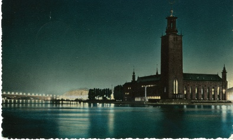
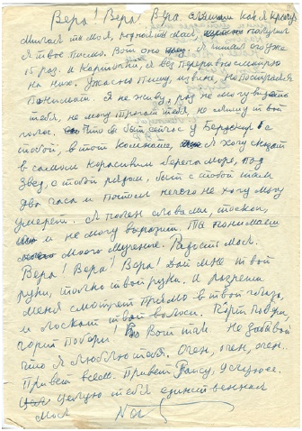

Geçen sefer, mezarının yanı başındaki mavi bankta seninle oturmuş sessizce fısıldaşırken önümüzden yaşlı bir kadın çalımla geçmişti. Bana biraz küçümser bir bakış atıp yoluna devam etmişti. Birden onun kuvvetli sesini duymuştum:
“Yeryüzünde bir kadın yaşıyordu. Sonra ona bir taç giydirdiler. Şimdi ise çıkarttılar tacı. Geriye sadece kadın kaldı.”
Doğrusu, bunları söyleyen nine, “kadın” sözcüğüne bir de “güzel” sıfatı eklemişti. Şiirsel bir edayla konuşmuştu. Ne yazık ki sen duymadın. Hoşuna giderdi. Biliyorum. Oysa benim yanımda oturuyordun. O kadar yakındık ki dizlerimiz birbirine değiyordu ve sen her zamanki gibi: “Ne düşünüyorsun, Verusya?[8] Ne düşünüyorsun?” diye soruyordun.
Mezarının başında hafızam daha net oluyor ve kafam hafifliyor. Tekrar beraberiz. Yalnız değilim. Ve bu dakikalarda benim için hiçbir problem, hiçbir sorun kalmıyor. Her şey basit ve net, tıpkı çocukluğumdaki gibi. Dünya duruyor ve düşüncelerim gibi iki tarafa dağılıyor. Mevsimler birbirine karışıyor, yollar buluşuyor, mesafeler kısalıyor ve tüm bu görüntü ve biçimlerin oluşturduğu nehrin arasından seslerimizin yankısı, mezarının başında seninle mavi bankta oturup sessizce fısıldaştığımız saatlerde oluyor.
Önceleri daha sık, hatta neredeyse her gün seni ziyaret ediyordum. Sonraları cumartesileri gelmem konusunda seninle anlaştık. Sen gönülsüz de olsa kabul ettin: “Ne yapalım, yapacak bir şey yok, küçük Verusyam. Madem öyle cumartesileri gel.” Biliyorum. Her şeyi biliyorum, Nâzım ama elden ne gelir? Benim de yaşamam gerek. Yardım et bana.
Cumartesi sabahları genellikle önce pazara gidip sana çiçek alıyorum. Onları sanki güzelliklerinden, canlılıklarından bir fayda gelecekmiş, ikimizin yazgısında bir şeyleri değiştireceklermiş gibi özenle seçiyorum. İlk zamanlar sana taksiyle geliyordum. Şoförün direksiyonun başında dalıp gideceğimi ve bu nedenle parçalanacağımı düşünerek garajın anahtarını bana vermiyordu. Üzülüyordu bana adamcağız. Sonunda bir gün arabayı kullanmama izin verdi. O günden beri de sana bizim “kırmızı şapka” ile geliyorum. Mezarlığın kapısından sanki evime girer gibi geçiyorum. İlk başlarda her adımımı zorlukla atıyordum. Şimdi ise sanki kendi evime gelmişim gibi yürüyorum. Dahası, mezarlığın girişindeki görevliden gülleri sulamak için kova ve etrafı temizlemek için de süpürge alıyorum. Sana doğru yürüyorum ve biliyorum, sen bankın kenarına oturmuş beni bekliyorsun. Bankın tam kenarına oturuyorsun. Öyle ki isterse beş kişi otursun banka, sen hiçbirine engel olmazsın. Yorgun hasta insanların hastane köşelerinde muayene saatini bekledikleri gibi oturup bekliyorsun. Ve her seferinde sanki gelmeyecekmişim, gelmeme bir engel çıkacakmış gibi geliyor sana... Gerçekten tam hastanedeki hastalar gibi, kuruntulara kapılıyorsun. Ben ise ilerliyorum ve ilkin bank tarafına hiç bakmıyorum, sanki hiç yokmuş gibi davranıyorum. Çiçekleri yere koyuyorum. Mezarlığı kolaçan edip her şey düzgün mü diye kontrol ediyorum. Benim getirmediğim çiçekler görüyorum. Demek ki birileri gelmiş. Bazen tatlı bir şeyler buluyorum. Bir keresinde badem şekeri bırakmışlardı. Hiç kuşkusuz senin memleketinden getirmişlerdir.
Bazen, –ve gittikçe daha sık– çiçeklerin altında sarımtırak renkli madeni Türk paraları buluyorum. İlgiyle inceliyorum senin ülkenin paralarını. Tuhaf şey, Nâzım seninle dünyayı gezdim, ama hiçbir yerde Türk parası görmedim... Şimdi ise otlara saçılmışlar. Bulduklarımı toprağa gömüyorum. Bırak onlar Türk okurlarının eliyle sana ulaşan gecikmiş telif bedeli olsun.
Kısacası, bizde her şey bildiğin gibi, hatta biraz gizemli. Ben mezarının başında ilk dakikadan itibaren hararetle işe koyuluyorum. Vazoları, çiçek saksılarını elden geçiriyorum. Kuruyanları atıp taze çiçekleri koyuyorum. Gidip su alıyorum, gülleri suluyorum. Öyle bir dallanıp budaklandılar ki! Tüm işleri tamamlıyorum. Her şeyi yerine koyuyorum, süpürüyorum, topluyorum ve tüm bunlardan sonra oturuyorum. İşte o zaman bizim sohbetimiz başlıyor. Saate baktığında zaman hızla akıp geçiyor. Uçuyor zaman...
Bu seninle son söyleşimiz Nâzım. Son çünkü biz onu şimdi bitirmezsek bir daha bitiremeyeceğiz. Bizim iç içe geçmiş, karmakarışık olmuş, kimi zaman kederli, kimi zaman neşeli, kimi zaman cesur, kimi zaman trajik seslerimiz bir yandan köyler ve yollarla, diğer yandan şehirler ve gökle, korku ve neşeyle karışmış bir halde insanların yüreklerinde yankı buluyor. Tanrım, dua etmeyi bilmiyorum. Sadece tek bir şey diliyorum. Anılarımı koru. Henüz tüm sözcükleri, tüm tebessümleri, mendilinin kenar rengine varıncaya dek tüm renkleri anımsıyorum. Ben insanım ve anılarımla varım.
Seninle ayrıldığımıza inanamıyorum Nâzım. Ne kadar aceleci davrandın! Oysa, bunca insanın aç, barınaksız yaşadığı yeryüzünde, bu kadar umutsuz insan varken biz seninle mutluyduk Nâzım. Bu şaşırtıcı değil mi?
1955 yılının ayaza çekmiş Aralık ayında karşılaştık seninle. Sovyetler Birliği Devlet Sinema ve Senaryo Enstitüsü’nü yeni bitirmiş, Devlet Çizgi Film[9] stüdyosunda redaktör olarak çalışmaya başlamıştım. Beni dönüşü olmayan kader yolculuğuma çıkartan tekerlekler, ilk kez orada döndü.
Sen ise Nâzım, artık birkaç yıldır Moskova’da yaşıyordun ve akıl almaz derecede ünlüydün. Adın gazete sayfalarından hiç inmiyor, şehrimizin sokaklarını donatan tiyatro afişlerinde hep senin ismin oluyordu. Şiir seçkilerin sürekli olarak kitapçı raflarında yerini alıyordu. Sık sık radyo ve televizyon programlarına konuk oluyordun. Efsane adamdın. Ama Moskova’ya geldiğinden beri seni hiç düşünmemiştim. O zamanlar, Kremlin’de üst düzeyde çalışanlar gibi uzaktın bana. Bu şan ve şöhretle yüceltilmiş insanlar, sokaklarda dolaşmazlardı, yaşamları bizden soyutlanmış sürerdi ve iç karartıcı bir gizemle doluydu. Tüm bunlar, seni ilk gördüğüm gün belleğime daha bir derinliğine kazındı.
Stüdyoda ilk görevim bir Arnavut halk masalından film yapmaktı. Çizgi filmin şimdi hatırlamadığım politik önemi olan bir güne yetiştirilmesi gerekiyordu. Bu nedenle, iki ayağımız bir pabuçta çalışıyorduk. Her şey iyi gidiyordu. Bulduğum olağanüstü masala hoş bir senaryo yazmıştık. Ancak, işin asıl yüklenicileri, ressamlar işin içine girince felaket başladı. Stüdyoda hiç kimsenin Arnavutluk hakkında en ufak bir fikri olmadığı anlaşıldı. Hiçbirimiz Arnavutluk’u görmemiştik. Ne ulusal giysilerini, evlerinin, eşyalarının neye benzediğini biliyorduk ne de ulusal yaşamının özgün atmosferini ekrana nasıl yansıtacağımız hakkında bir öneride bulunabiliyorduk. Çalışmalarımız tıkanmıştı. Filmin imgesel içeriğini anlayıp anahtar bilgiler verecek bir danışmana ihtiyacımız vardı. Ne yapacağımızı şaşırmıştık. Proje çıkmaza girmiş, yöneticilerimiz kızmaya başlamıştı. Benimle beraber tüm iş arkadaşlarım danışman arayışını sürdürüyordu. Sonunda, umutsuzluğa düştüğümüz bir anda yönetmenlerimizden biri adeta sayıklar gibi Nâzım Hikmet’i aramamızı önerdi. Dediğine göre, Türkler üç yüz yıl Arnavutluk’ta hüküm sürmüşlerdi ve Nâzım Hikmet onlar hakkında her şeyi biliyor olmalıydı.
Şefim filozofça bir edayla: “Neden olmasın ki?” diye akıl yürüttü, “Vera, Nâzım Hikmet ya sizi kuş uçmaz kervan geçmez bir yere gönderecek ya da yardım edecektir. Ancak, telefonunu nasıl bulursunuz bilmem, herhalde gizlidir...”
Gün ortasıydı. Yazarlar Birliği’ne telefon ettim ve hiçbir güçlükle karşılaşmadan telefon numaralarını aldım. Biri Moskova’daki diğeri ise Peredelkino’daki[10] kır evinin numaralarıydı bunlar.
Anımsar mısın Nâzım? Yıllar sonra seninle Gürcistan’da tatildeyken al yanaklı bir kadın plajda yanımıza gelmişti: “Vera, Nâzım’ın telefonunu size ben vermiştim,” demişti gülerek. “Sesinizden tanıdım...”
Telefon numaranı kaydettiğim anda nedense içim bir tuhaf oldu ve giderek artan bir endişeyle etrafımdakilerden benim yerime seni aramalarını rica etmeye başladım. Nâzım Hikmet’i herkesten çok görmeyi arzu eden filmimizin yönetmeni Valentina Brumberg’di. Ufak tefek, yuvarlak hatlı, boya küpüne batmış, olduğu yerde duramayan ve kafasındaki koca topuzuyla, neşeli çizgi film kahramanlarından birini andıran bir kadındı. Sovyet dönemi öncesinde doğan Valentina, girişken kişiliğini korumuştu. Moskova’nın tüm ünlü artistleri, ressamları ve yazarlarıyla tanışıklığı vardı. Avucumda sıktığım kâğıtta Nâzım Hikmet’in telefonunun yazılı olduğunu öğrenir öğrenmez, tüm stüdyonun her köşesini bir koşu dolaşıp, sanki konu halledilmiş gibi, Nâzım Hikmet’in bizimle çalışacağını herkese duyurdu!
Bu müthiş haberi duyan stüdyo ahalisi işin aslını öğrenmek üzere senaryo bölümüne akın etti. Nâzım Hikmet’in adı etrafındaki gürültü büyüyordu. Herkes harekete geçmemi istemekteydi. Ben ise ağlamaklı bir halde, bu tip ilişkilerde uzman olan Valentina Brumberg’e telefon etmesi için yalvarıyordum. Fakat o “berrr-bat” diksiyonunu öne sürerek beklenmedik bir şekilde ricalarımı kabul etmedi.
“Türrrk benim dediklerimden birrr şey annnlamaz ve telefonunnn alllmacını yerine bırakıverrirrr ve her şey başlamadan biterrr! Siz- gençsiniz! Türrrkler gençleri severler! Sizin melek gibi incecik sesinizi duyduğunda...” diye başlayan sözlerini usta bir pandomim sanatçısı gibi Moskovalılara özgü aksanını da sözcükleri çeke çeke söyleyerek sürdürdü: “Al-lo, Nâzım Hikmet’le mi görüşüyorum? Ben Verrra Tulyakov-a, redaktörüm... Ver-raa Tulyakova-a, rrredaktörr... dediğiniz anda o teslim olacaktır! Hiç şüphe yok buna. Her şey gün gibi ortada!”
Valentina Brumberg adeta benim bir karikatürümü çizmişti. Benzetmişti de. Herkes işin eğlencesindeydi.
İş arkadaşlarımdan Arkaşka Snesarev:
“Hangi akla hizmet bu işi yapmak istesin ki?” dedi. “Nâzım’ın nesine gerek?! Yapacak başka işi mi kalmadı? Dışişleri Bakanı Gromıka’ya telefon et daha iyi,” diye akıl verdi.
Kalabalıktan birisi ise: “Komünist yoldaş Hikmet’e halkının sömürgeci olduğunu anımsatmak hiç de etik değil,” uyarısında bulundu.
Sonunda şefim işe el attı. Etraftakileri itekleyerek mağrur bir tavırla elimdeki kâğıdı aldı ve kararlı bir şekilde numarayı çevirdi. Telefonun öteki ucundan yanıt aldığında, ahizeyi kızgın bir demir parçasıymış gibi bana doğru fırlattı. Herkes donup kalmıştı. Soyut bir siluet olarak Nâzım Hikmet imgesi belirdi.
“Al-lo,” diye fısıldadım. “Nâzım Hikmet’le mi görüşüyorum? Ben, hı-mm, Vera Tulyakova, re-dak-tör Vera... Tulyakova...”
İşte böyle Nâzım, ilk kez 8 yıl önce sana, Moskova’daki evine telefon ettim. Daha sonra seninle beraber yaşadığımız, şimdi de geceleri daktilonun tuşlarına vurduğum bu yere...
Sen benim ricamı dinleyip çok normal bir şekilde:
“Gelin, canım,” dedin.
Kulaklarına inanamayan ben: “Ne zaman?” diye sordum.
“Madem işiniz var, şimdi gelin.”
Dönüp şöyle bir arkama baktım. Sanki arkamda Gogol’ün “Müfettiş”inden bir sahne oynanıyordu. Sürekli yazarlarla çalıştığımız için, stüdyoda herkes en kötü yazara bile ulaşmanın ne kadar zor olduğunu biliyordu. Onlar randevu vermek için sürekli kendilerine yalvarıp yakarılmasını isterler, ancak uzun ricalardan sonra (senin nefret ettiğin söyleyişle) bizi “kabul” ederlerdi. Artık ünlü olmuş, zenginleşmiş adı klasiklerin arasında sayılan yazarlar için söyleyecek bir şey bile yok... Evet, doğrusunu söylemek gerekirse bizim stüdyo o zamanlar küçük bir yerdi. Ayrıca televizyonda çizgi filmler gönülsüzce gösteriliyor ve yazarlara çok küçük miktarlarda ödeme yapılıyordu. Buna rağmen, ellili yıllarda Nikolay Erdman, Mihail Volpin, Yuri Olyeşa, Mihail Svetlov, Aleksandr Galiş, Vladimir Suteyev gibi önemli isimler, bu işi sevdiklerinden gönülden çalışıyorlardı bizimle.
Nâzım Hikmet’e götüreceğimiz malzemeleri toplamaya başladık. Ressamlar eskizleri toparlarken, iş arkadaşlarımız birbirlerinin sözünü keserek Türkiye’deki politik yaşamdan, Amerikan yayılmacılığından, minarelerden bilgiler vermeye başladılar bize. Arkadi ise genel tedirginliği dile getirip Valentina Brumberg’e gözünü benden ayırmamasını ve hiçbir koşulda “parlak Türk’le” beni yalnız bırakmamasını tembihliyordu. Hiç sakinleşecek bir hali yoktu:
“Yarı ömrü boyunca adamı hapiste tuttular. Vahşi bir kaplan gibi bizim sarışını gördüğü gibi saldırıp paralayabilir. Türkler böyledir... Aslında etrafını ispiyoncularla kuşattıklarını da unutmamak gerek. Herhalde, koca bir ordu gibi çöreklenmişlerdir başına...”
Ben ve Valentina Brumberg evine vardık. Sen kapıyı ardına kadar açtığında yoğun bir kahve kokusu çarptı burnumuza. Bakışlarımı sana kaldırdığımda kızıl renkli kıvır kıvır bir yumak gördüm. Üstümüzü çıkarmamıza yardım ederken koyun postundan ağır paltomu az kalsın yere düşürüyordun. Yarı boş, geniş salona geçtik, sanki şakacıktan geçici olarak döşenmiş izlenimi veren rahat, tuhaf bir barınaktı... Odanın ortasındaki yazılı kâğıtlarla kaplı büyük yuvarlak masanın başında, asık suratlı kırk yaşlarında bir adam kendini kaptırmış çalışıyordu. Bizi kafasıyla öylesine selamladı. Bu tercümanın Ekber Babayev’di[11]. Siyah takım elbiseli, siyah gömlekli ve kara kıvırcık saçlarıyla kederli bir hali vardı. Bu haliyle bir tabut ustasına ya da bizim çizgi filmlerimizin detektiflerine benziyordu. Ve Biz, Valentina ve ben, birbirimizle konuşmadan, bu kişinin Nâzım Hikmet’e tahsis edilmiş KGB ajanı olduğuna, hiç şüphe etmeden, karar verdik.
Şimdi ise bu ilk izlenimin çok, hem de çok yanlış olduğunu biliyorum...
Ekber Babayev ile aranızda olağanüstü mükemmel bir ilişki kurulmuştu. Huzur ve dostluk dolu. Birbirinizi görmeden bir gün bile geçirmeniz olanaklı değildi. Birbirinize “siz” diye hitap etmeniz, bence, ilişkinizin entelektüel boyutunun, inceliğin ve birbirinize gösterdiğiniz özenin bir göstergesiydi. Birbirinin tamamen zıddı karakterlerdeki insanların dostluklarını ilk bakışta kavramak zor olabiliyor. Ancak, ikinizin beraberliğini daha sık izledikçe bu mertlik ve zekâ dolu bağlılığınız daha anlaşılır oldu benim için. Bir yanda her an patlamaya hazır, duygularını kontrol edemeyen sen, barut gibi Nâzım; diğer yanda sakin karakteriyle asla telaşa kapılmayan en fırtınalı durumlarda bile eğlenceli yaklaşımıyla durumu sakinleştirebilen Ekber. Siz, ikiniz birbirinizi tamamlıyordunuz.
Kim bilir, belki de sana bakmaya çekindiğimden, daha çok Ekber’e bakıyordum. Sesin odada gümbürdüyor ve kafamı toplamama engel oluyordu. Şaşkınlıkla bu tuhaf adamın, söylediği her sözcük üzerinde beni düşünmeye zorladığını ve onları beynime kazıdığını fark ettim. Bundan böyle de hep böyle olacaktı.
Rusça sözcükleri zorlanmadan buluyor, ateşli tempoyla anlaşılır konuşuyor, ama hatalar yapıyordun. Çok belirgin Doğu aksanın vardı. Rusça grameri iyi bilmemene rağmen dilimizi içselleştirmiştin. İfade etmek istediklerini net bir şekilde dile getiriyor, oldukça akıcı konuşuyordun. Bu konuda özgün bir yeteneğin vardı, söylediklerin kolaylıkla akılda kalırdı. İşte bu nedenle de seninle söyleşme imkânı bulmuş pek çok kişi konuşmandaki ufak detayları bile hâlâ anımsar.
Telefonda senden istediğimiz şeyi tam olarak anlamadığın ortaya çıktı ve Arnavut kültürü konusunda bir Türk’e danışmak istememiz seni çok eğlendirdi, çok güldün. Ama bu yapacağımız filmi kendi çizgi filmleri olmayan Arnavut çocuklarına armağan edeceğimizi söylediğimizde ciddileştin ve yardım etmeyi kabul ettin.
Biz getirdiğimiz eskizleri, çizimleri yerde açarken gizleyemediğin bir ilgiyle etrafımızda dolanıyordun. Her şey hazır olup kâğıtlara doğru eğildiğinde biz olduğumuz gibi kaldık. Hiç hareket etmiyorduk. Dikkatle bakıyordun... Ve aniden öfkeyle:
“Sanatta natüralizmden nefret ediyorum,” dedin.
Donup kalmıştık. Valentina Brumberg, panik içinde konuşmanın yönünü kuramsal boyuta çevirmek istedi.
“Sevgili Nâzım, demek natüralizmi sevmiyorsunuz. Sizce ne demek natüralizm?”
Hiç duraksamadan yanıtladın:
“Şimdi içeri gömleksiz bir adam girerse bu realizm olur. Ama pantolonsuz bir adam gelirse bu natüralizmdir.”
Ve neyse ki güldün.
Ama senin herhangi bir konudaki görüşünü değiştirmek kolay değildi. Sıkıntılı bir şekilde son zamanlarda Merkez Komite’de ne bilge bir filozofa, ne Lunaçarski[12] gibi bir aydına, ne de 20’li yıllarda Moskova’da öğrenimin sırasında derslerini dinlediği polemik ustalarına pek rastlamadığından bahsettin. Merkez Komite’den söz etmen üzerine Valentina merhamete gelmeni istedi ve bizimle politikadan konuşmamanı rica etti.
“Neden cancağızım?” diye sordun. Gerçekten şaşırmıştın. “Hapishanelerin kapıları açıldı. Örneğin, benim gençlik arkadaşım, önemli sinema yönetmenlerinizden Nikolay Ekk[13], şimdilerde benim kır evimde yaşıyor. Çalışma kampından geldi, yırtık pırtık giysiler içindeydi... Stalin öldü artık.”
“Stalin ölmüşse ve Lenin’in yanında anıt mezarda yatıyorsa ne fark eder ki?”
“Bunu anlayamıyorum işte. Ülkenin önde gelen emekçileri nasıl olur da cesetlere tapınırlar?”
“Nâzım, lütfen, korkudan öleceğim şimdi,” diyen Valentina, ölü gibi buz tutmuş parmaklarıyla ellerine dokundu. Bir yandan da: “Bakın, bakın,” diyordu.
“Canım, affedersiniz,” diye iç geçirdin. “Her şeye rağmen o öldü ama değil mi? Pek çok insan korkmayı bıraktı. Bir iki gün önce Ekber’le Aktörler Evi’nde yemek yiyorduk. Sanatçılar coşkuyla Stalin fıkraları yarışması yapıyorlardı. Bir de Hruşçev hakkında fıkralar anlatıyorlardı. Şimdilerde Moskova’nın her yanında bu fıkraları duymak mümkün.”
O dönemde, 1955 yılında Hruşçev otoritesini kaybetmişti. Sen insanların Hruşçev’in ağırlığını hissetmesi için onun bir hamle yapması gerektiğini söylüyordun. Ve Hruşçev’in en önemli girişimi olan SBKP XX. Kongresi’ne üç aydan az bir zaman kalmıştı.
Söz konusu fıkralardan birini bize anlatmasını Ekber’e rica ettin. Zavallı Valentina konuyu değiştirmek için çırpınıp duruyordu, ama boşunaydı. Her ihtimale karşı telaş içinde:
“Hruşçev bizim hoşumuza gidiyor, gidiyor...” diye tekrarlayıp duruyordu. “Rus masallarında tüm çarlar ona benzerler! Şaka yaparlar, işi dalgaya alırlar, ama gerektiğinde masaya yumruğu indirmeyi, kafa uçurmayı bilirler! Kimse çarların ruh halini çizgi film yapımcılarından daha iyi bilemez. Onların her bir kaş hareketi için yüzlerce çizimi biz yapıyoruz, öyle değil mi ama!”
Onun bu benzetmesi seni güldürmüştü, sonrasında eline kalemi alıp hızla, neredeyse tek bir hat üzerinde bizim masalın temel hatlarını çizmeye başladın. Fakir bir çocuk nasıl giyinir, şalvarı neye benzer, kuşağını nasıl bağlar, çoban çıkınını omzunda nasıl taşır anlattın. Testinin formu neye benzer, duvarda asılı halının deseni nasıl olmalıdır, hepsini anlattın... Sonunda, filmin ana sahneleri hazır olunca stüdyoya gelmeye ve ressamlarla görüşmeye söz verdin.
Biz görevimizi tamamlamıştık. Ama sen bizi bırakmıyordun. Turuncu duvarda, dikkat çekici bir tablonun önüne götürdün beni. Çok garip bir resimdi bu. Sanki dar tahta bir çerçevenin içine patlamalar sonunda biçimsizleşmiş, yakından kurşun yağmuruna tutulmuş bir toprak parçası hapsedilmiş gibiydi. Tablonun kurumuş yağlıboya kabarcıklarıyla pıhtılaşmış yüzeyi, boydan boya demir parçacıklarıyla kaplıydı.
“Bu tabloyu bana Konstantin Simonov[14] armağan etti,” dedin. “Bir asker Stalingrad Savaşı kalıntılarından yapmış onu.”
Ne yazık Nâzım, biz bu tabloyu saklayamadık. İki yıl konuk odamızın duvarında hüzün veren duygularla asılı durdu. Sonra, nasılsa, eski bir cephe subayı geldi bize. Uzun süre bu tabloyu seyretti.
Hatta, gittikten kısa bir süre sonra tekrar döndü ve tablonun önündeki yerini aldı. Bunun üzerine sen tabloyu duvardan indirdin:
“Al, kardeşim,” dedin. “Bu tabloyu çok beğeniyorum. Çok. Al, al.”
O gün Kargopol, Dımkov, Vyat işi oyuncaklarla beraber daha pek çok çeşit özgün minik biblo gösterip durdun bize. Üstü çeşit çeşit renkli yastıklarla dolu Türk tarzı divanların üstüne denk gelen duvara kabaca çakılmış rafların üstü bu kil tavuskuşları, denizgergedanları, yaşlı insan figürleri, kocakarılar, tombullar, kendini beğenmiş aptallar, bilmişler, kokana tipli biblo oyuncaklarla doluydu.
İki başlı bir at verdin elime. Yandan, karşıdan, akla gelecek her taraftan ona bakmamı istiyordun. Bundan keyif alıyor, atla ne yapacağını bilemiyordun. İşin profesyoneli olmayan, canlandırma sanatından uzak bir yetişkinin, bu el yapımı tahta oyuncak biblolarla içten bir çocuk keyfiyle oynaması beni şaşırtmıştı. Seninle beraber olduğumuz o saatlerde, ilk defa, biz Rusların ne kadar tekdüze ve belirli sınırlar içinde kalmış insanlar olduğumuzu hissettim.
Sen ise “Biliyor musunuz?” diye tekrar anlatmaya başladın. “Geçenlerde Moskovalı bir yazar geldi bana. Bütün bunları gördü ve hangi ülkeden getirdiğimi sordu. Çok sinirlendim. Bir güzel sövdüm adama, Allah kahretsin! Evet, evet! Eğer bir yazar atalarının nasıl yaşadığı ile ilgilenmemişse, sürecini tamamlayan tüm kuşaklar onun için sadece gübre demektir!”
Kötü olmuştum, hatta gücenmiştim.
O zaman sana karşı çıkmadım, ama böylesine cahil bir edebiyatçının varlığına da inanmadım. Ninelerimden dinlediğim XIX. yüzyıl şiirleriyle büyümüştüm ve tüm yazarların çok iyi eğitimli aydın kişiler olduğu konusunda saf bir inancım vardı. Daha sonraları birkaç kez daha seni kızdıran bu yazardan bahsettin bana. Ama ben yine kim olduğunu sormadım.
O sırada Babayev ile üzerinde çalıştığınız “İvan İvanoviç Var Mıydı?” tiyatro oyununun adı dikkatimi çekmişti. “Ne hakkında bu oyun?” diye çekinerek sordum. İstersem, Babayev’in çeviriyi bitirmesinden sonra okuyabileceğimi söyledin. Ancak, sen sözlerini bitirdiğinde Babayev, bu öneriyi Usta’nın şakası olarak anlamamı sağlayacak sağlam bir bakış attı bana.
“İktidar emelleriyle yoldan çıkmak en büyük tehlike. Özellikle de siyasi iktidarın. Stalin buna en iyi örnektir. İşte bu düşünceden yola çıkarak yazdım bu piyesi. Sizin anlayacağınız, cancağızım –bana gülümsüyordun– bürokratların bize gücenmesi kaçınılmaz. Ne yapalım, gücensinler, yapacak bir şey yok.” Ve şakayla karışık sordun bana:
“Bürokrat değilsiniz, değil mi?”
Hepimiz güldük. Babayev bile bize katıldı.
“Kaç yaşındasınız?” diye sordun.
“Yirmi üç.”
“Yirmi üç,” diye yineledin kafanı sallayarak. Demek ki ilk kez Moskova’ya geldiğimde, yani 1921’de siz henüz tasarlanmamıştınız bile... Sarışın olduğunuza bakılırsa Rus’sunuz değil mi?”
“Evet, Rus’um.”
“Doğrusu, cancağızım, biraz şüpheliyim bundan. Tatar Hanlığı kaç yıl ülkenizin başında kaldı? Size şöyle bir dikkatlice bakacak olursak elmacıkkemiklerinizin birazcık doğulularınkine benzediğini söyleyebiliriz. Gözleriniz de Rus’a benzemiyor. Tersine bizdeki badem gözleri andırıyor... Yoksa bugüne dek kimse size doğulu bir yüz biçiminiz olduğunu söylemedi mi? Ha? Babayev, sen ne dersin? Doğru mu söylüyorum?” Bunları söylerken gülümsüyordun. “Kızmayın cancağızım, sizi kırmak istemem.”
Ardından diplomatik bir şekilde oyunların hakkında bir fikrim olup olmadığını sordun. “Her Şeye Rağmen” adlı oyunu Mossovyet Tiyatrosu’nda, “Bir Aşk Masalı”nı ise televizyonda izlediğimi öğrendiğinde derin bir iç geçirdin.
“Bu gösteri için çok tartıştık. Biliyorum, sahne uyarlaması güzel olmadı. Benim “masalımı” okursanız, aslında o kadar da ümitsiz bir oyun yazarı olmadığımı anlarsınız.”
“‘Masalınızı’ okudum,” dedim. Ama gözlerinden bana inanmadığın anlaşılıyordu.
Bunun üzerine okuduğum enstitünün edebiyat kulübünde seminer konularından biri olarak “Bir Aşk Masalı”nın seçildiğini, öğrencilerin bu eser üzerine bir sunum hazırladıklarını ve dahası bu konu ile ilgili olarak seni ziyaret ettiklerini anlattım.
“Peki, siz o zaman niye gelmediniz?”
“Sonunda geldim işte,” dedim gülerek.
Birdenbire ziyaret sonrasında senin için söylenenleri anımsadım. “Büyük harflerle adı yazılacak aydın”, “Gerçek komünist”, “ ölümcül hasta adam”... Onlardan birisi, söyleşi süresince koltuğun kolunda sanki vücudundan ayrılarmış gibi duran ellerinde yaşam belirtisi olmadığından bahsetmişti... Ellerine baktım. Avuçların esnek görünüyordu. Hafif tombul, kısa parmaklarını bir saniye durmaksızın sinirli sinirli oynatıyordun.
Hatırlar mısın Nâzım, bir gün ressam Yuri Vasilyev’in atölyesine gitmiştik. Sen ona gitmeyi severdin. “Hadi bir gidelim de adamın ne yaptığına bir bakalım. Geçen sefer işleri hiç de iyi gitmiyordu...” Ve iyi yürekli, mert bir insan olan Yura, senin ziyaretlerinden her zaman çok memnun oluyor, bütün günlük işlerden kendini soyutluyordu. Bu ziyaretler sırasında, ressamın küçük kızı Vasilisa, babasının bu haline bir anlam veremez ve sessizce araladığı kapıdan uzun saç örgülü başını uzatıp hayretle olan biteni izlerdi... Hatırlarsın, işte bu ziyaretlerimizden birinde Yura, alçıdan senin iki elinin kalıbını çıkarmıştı. Benim de Kahire’den aldığımız firuze yüzüklü elimin kalıbını... Sonrasında ellerimizin bu alçı örnekleri onun duvarında, ince bir ipin ucunda asılı durdu. Yanlarında Svyatoslav Rihter[15] ve başka ünlülerin elleri vardı. Yura’ya gittiğimiz bazı zamanlarda, onları duvardan indirir, bakardık. Ama sonra, sonra... Seni o özel arabayla beyaz çarşaflara sarılı alıp götürdüklerinde Yura morgda yüzünün maskesini çıkarmıştı... Onu evinde saklıyor. Ve şimdi ben hiç durmadan, kafamdan atamadan bunu anımsıyorum, Yura’nın evine gidemiyorum... Çünkü orada senin ölümünün somut kanıtı var, Nâzım.
Aniden korkunç bir yorgunluk sardı beni. Günün gerginliği, bir dolu yeni izlenim, senin ani dönemeçlerle dolu fikirlerinin baskısı hepsi etkiliydi bunda. Vedalaşma zamanı gelmişti. O anda Babayev’e Türkçe bir şeyler söyledin. Söylediklerinin: “Fena kız değil, ilginç, ama göğüsleri biraz düz,” anlamında bir şeyler olduğunu şaşkınlıkla algıladım.
İstençdışı bir hareketle bakışlarım göğüslerime kaydı. Sonra sizlere döndüm. Yüzüm kıpkırmızı olmuştu. Kısa bir şaşkınlığın ardından: “Ne dediğimi anladınız mı?!” diye sordun. “Anladım...” dedim. İtiraf etmekten başka şansım yoktu.
Bakışların bir anda sertleşti, şüphe ve düşmanlık doldu.
Zavallı Nâzım, yaşamın boyunca hep birileri için korku unsuru oldun, sürekli takip edildin, dinlendin. Tüm bunları biliyordun, ama sen oyunu mertçe oynamayı tercih ediyordun. Bense bütün bunlardan o kadar uzaktım ki...
“Ne o, sinema okulunuzda size Türkçe de mi öğrettiler?” dedin. Sesinde gizlemediğin bir alay vardı.
Tüm kanım şakaklarımdan çıkacak gibiydi. Yüzüm alev alev yanıyordu. Panikten kafamı toplayamıyor, Türkçe söylenen bir şeyi nasıl olup da anladığımı bir türlü kavrayamıyordum. Karşında aptal aptal susuyordum. Suratın tehlikeli derecede kızarmıştı. Valentina dehşetle etrafına bakıyor, olan biteni anlamıyordu. Ekber bana doğru yöneldi. Nefretle ona baktığım sırada gözlerinin şefkat dolu olduğunu gördüm.
“Merak etmeyin. Son yıllarda üniversitede Türkçe öğrenen herkesi biliyorum. Siz onlardan değilsiniz. Dilimizi nasıl anladığımızı söyler misiniz?”
O anda beynimde şimşek çaktı.
“Sizin ‘iltifatınız’ Tatarca değil miydi?”
“Yoksa Tatarca mı biliyorsunuz?” Şaşırmıştın.
“Herhalde, Tatar kanımın son damlası harekete geçti içimde.” Şakam hüzünlüydü. Sadece ölmek istiyordum. Zavallı gülümsememi yarıda kestin:
“Evet, ciddi olacak olursak?”
“Evet, ciddi olarak...”
O anda 1942 yılının savaş güneşinde solmuş elbisemin içindeki halimi anımsadım. Dokuz yaşıma dönmüştüm. Çıplak ayaklarım bileklerime kadar toz içindeydi... Savaş sırasında yaşanan zorunlu göçte, annemle beraber kendimizi ücra bir Tatar kasabasında bulmamızı tutarsız sözcükler, kopuk kopuk tümcelerle anlatmaya başladım. Orada başkentte aldığım eğitimle düştüğüm sınıfta iki yıl boyunca Maupassant’ın toplu yapıtlarını okumuştuk ancak. Tatar okulundaki tek Rusça kitaptı. İki ayda Tatar dilini çözmüştüm. Yaşıtlarımla ders sıralarında dirsek çürütmek yerine, semt pazarında çevirmenlik yaparak “çalışıyordum.” İnsanların şehirden getirdikleri son eşyalarını köylülerin son patatesleri ve ekmekleri ile değiştirmelerine yardım ediyordum. Ama aradan çok yıl geçti, yıllar benim iyiliksever kasabam Salouşi’nin dilini unutturmuştu bana... Ve şimdi bir şey onu tetiklemişti...
Tatarlarla olan bağlantımı sürekli anımsar ve benimle dalga geçerdin:
“E, Verusya, bizim Tatar kardeşlerimiz dünya kültürüne başka ne katkılarda bulunmuşlar?”
Ben ise ciddi ciddi Aksakov, Kutuzov, Karamzin, Puşkin, Lermontov ve tüm Tolstoy’lar gibi adı kültürümüze, tarihimize kazınmış insanların Tatarlara uzanan köklerini, “hurra”, “yoldaş” ve daha pek çok sözcüğün Tatar dilinden geldiğini sana anlatır da anlatırdım...
“İşte, halkların kardeşliği böyle oluşuyor. Siz Rus’sunuz ve Tatarca anlıyorsunuz. Demek oluyor ki Asyalı erkekler ve tabii Türkler de, sizin yanınızda düşüncelerini dile getirirken çok dikkatli olmalılar. Film yapımcımız Valentina Yoldaş, çizgi film dilinden anlıyor. Bu da dünyanın dört bir yanından çocuklarla çevirmensiz konuşabileceği anlamına gelir. Sevgili dostum Ekber’e gelince, kendisi Azerbaycanlı. Yazdığım her şeyi Türkçeden Rusçaya çevirir. İşte bu tablo, burada, Sovyetler Birliği’nde muhteşem bir şey.”
Biraz da oyuncu edasıyla söylediğin bu sözlerle özetledin durumu. Ben ise kötü olmuştum. Neşem kaçmıştı.
Sana daha sonra bunları söylediğimde köpürmüştün Nâzım. Tepkin: “Ne yani, aptal mıyım ben, ha?” olmuştu.
Odada koşuşturup duruyordun. Bize el işlemesi bir şeyler gösteriyor, ikramda bulunmaya devam ediyordun. Ve ben sonunda sana bakabildim. Saçlarında ak tutamlar vardı. Güderi ile işlenmiş bej ceketin seni biraz sportmen göstermişti. Ve mavi gözlerin capcanlıydı. Dalgalı kızıl saçlarından, antik burnundan, bıyıklarından, omuzlarından, ellerinden daha gençti. Ve gözlerinin arkasına gizlenmiş fikirlerin, umutların, ideallerin ise gözlerinden de gençti. Yüzünü sık sık buğu kaplıyordu sanki. Acımasız bir annenin yabancıların önünde çocuğunu cezalandırdığı anlardaki gibi ağır bir yorgunluk üzerine çöküyor gibiydi. Sanki anne, kalbini senin ellerinle yakalıyor ve omuzlarını çökertiyordu. Bu anlarda gözlerinin canlılığı neredeyse kahramanlıkla özdeşleşiyordu.
Ayrılmaya kalktığımız sırada: “Neden size bir senaryo yazmamı önermiyorsunuz? Masalları çok severim. Hem öyle Türk masalları biliyorum ki?” dedin.
Söylediğinin hayal olduğu düşüncesiyle konuyu şakaya aldık. Sende oturduğumuz süre boyunca telefonun hiç susmamıştı. Sürekli farklı farklı yerlerden aramışlar ve senin sözünü bitirmene fırsat vermeden şiir, makale, oyun, söyleşi isteklerinde bulunmuşlardı. Bizim ücra köflede kalmıfl hayır kurumumuzun başkentin bu muazzam kültür çevresi ile boy ölçüşmesi olası mıydı ki?
Uzun koridorun sonunda sırtımı kapıya dayamış duruyordum. Yanakları al al olmuş, gençleşmiş Valentina Brumberg’in seninle vedalaşmasını bitirmesini bekliyordum. Berbat ruh halinden sıyrılamamıştım. Acı içimde daha derinlere işliyordu. “İşte böyle,” diye düşündüm. “Büyük hümanist şairler insana amansız ders verirler. Kolayca seni köşeye sıkıştırıp engizisyon hâkimi sabrıyla sorgularlar. Neden, neden sanki hiçbir görüşüm olmayan bu uğursuz filmi yapmayı kabul ettim?” Beni düşüncelerimden kurtaran Valentina Brumberg’in sesi oldu:
“Çok yakışıklısınız Nâzım! İltifat olarak kabul edin, hiç Türk’ e benzemiyorsunuz. Neden yalnız yaşıyorsunuz? Böyle yalnız olmak zorunda değilsiniz. Kadınlar sizi deli gibi seviyorlardır, eminim. Neden evlenmiyorsunuz?”
Sen karşındakinin tüm silahlarına el koyan gülümsemenle yanıtladın:
“Çünkü sevgili Valentina, aileye, özel mülkiyete ve devletçiliğe karşıyım!”
Neşem yerine gelmişti. Yakamı kaldırıp usulca gülümsedim. Ve birden bana doğru iyice yakınlaştın. Elini başımın üstünden kapının pervazına dayadın ve:
“Vera, bana gücenmeyin,” dedin. “Siz daha çok gençsiniz. Hem de çok. Biliniz ki yeryüzünde en kötü yalan, güzelliğin arkasına saklanıp söylenendir. Çünkü buna kalp kolay aldanır. Geldiğinize çok memnun oldum.”
Kapı arkamızdan kapandı ve sen Ekber’e sordun:
“E, nasıl buldun?”
“Normal.”
İlk tanıştığımız zaman beğendiğin saçlarım sonradan “koyun gibi kıvırcık” olunca içerlemiştin. Seninle bu konuda ne kadar tartışırsak tartışalım bir türlü fikrinden caymamıştın. Evet, biraz kıvırcık olmuşlardı, ama o kadar da ümitsiz değillerdi. Bu saçlar o zaman bir yabancıya ait olduğundan sana sıradan görünmüştü, hepsi bu. Zamanla saçlarım açılmış, sen de mutlu olmuştun bundan. Saçlarımı tokalamadan açık bırakmam hoşuna gidiyordu ve Fransız filmi “Büyücü”deki saçları karmakarışık Marina Vlad’e benzetiyordun beni.
Tanışmamızın ertesi günü stüdyoya gittiğimde kendimi “Lenin’le konuşmuş gibi” hissettiğimi söyledim. “Zavallı Vera, neler söylüyorsun?” tezahüratlarında bulunan yaşça büyük mesai arkadaşlarım olanı biteni anlamaya çalışıyorlardı. Senin gibi birisiyle ilk kez karşılaşmıştım ve ne kadar büyük bir kişilik olduğunu ifade etmekte zorlanıyordum. Günün geç saatlerinde telefon çaldı:
“Sizinle buluşmak istiyorum. Bir şeyler buldum. Bence masalım hoşunuza gidecek.”
Açıkçası, senden bir senaryo alacağımızı hayal bile etmiyorduk. Yazarlara az para ödüyor, karşılığında ancak bizim deyimimizle aklından zoru olanların kabul edeceği kapsamlı ve zorlu çalışmalar bekliyorduk. Çünkü soyut bir sanat olan canlandırmada, diğerlerinde olmadığı kadar yaratıcılık, grotesk, fantasma ve mizah gerekliydi. Telefonun, verilen söze izci sadakati ile bağlılığın göstergesiydi. Bir anda neşelenmiştik.
Stüdyonun sağır kapı görevlisi aşağıdan telefon ettiğinde senin stüdyoya geldiğini anladık. Bizim eski cephe askeri, ahizeyin ucunda avaz avaz: “Burada bir yazar var. Rus değil. Adı da Nasın Hinket’miş. Yukarı bırakayım mı?” diye bağırıyordu.
Merdivenleri çok yavaş çıktın. Hemen her basamakta soluklanıyordun. İncelmiş damarlarını zedelemekten korkar gibi bir halin vardı.
Sonraları, geçirdiğin kalp krizinin ardından Kremlin hastanesinde doktorların senin için bir komisyon kurduklarını anlatmıştın bana. Onların tartışmalarının bir kısmını nasılsa dinlemeyi becermiştin. Ayrımına varmakta zorluk çekmediğin Latince sözcüklerin arasında, ölümcül anlam taşıyan “anevrizma” da vardı. Hangi bağlamda kullanıldığını tam anlamasan da işitmiştin.
“Anlıyor musunuz,” diye başlamıştın bana anlatmaya. “Anevrizma kalbin bir köşesinde olur. Sigara kâğıdından daha incedir. Bazen saçma sapan bir hareket bile bu kâğıdı parçalamaya yeter. Ve her şeyin sonu gelir.”
Bu konuşmamızın ardından hastalığınla ilgili çeşitli kitaplar okudum. Senin geçirdiğin tarzda bir krizden sonra insanların en fazla 11 yıl yaşayacakları yazıyordu...
Getirdiğin senaryonun Rusçası berbattı. Belli ki bitirme telaşı içerisinde evdekilerden birine dikte etmiş, o haliyle de stüdyoya getirmiştin. Okumak ne kadar zor olsa da satırlar ilerledikçe, olağanüstü şiir masalın romantik kahramanları Sevdalı Bulut ve zavallı yalnız kız Ayşe, gözümün önünde canlanmaya başladı. Masalının sonu özellikle bir canlandırma filmi için alışılmadık derecede acıydı. Ama olmayacak bir şey de değildi. Sevdalı Bulut yok olmak pahasına yağmur oluyor ve kuruyup yok olma tehlikesi altındaki Ayşe’nin bahçesine yağıyordu. Yağmur dindiğinde ağaç dalları yeşeriyor, çiçekler yeniden açıyordu. Ağlayan genç kızı senin saf, temiz dizelerin teselli ediyordu:
Baksana yeşeren dallara,
ağlama Ayşe, bak onlara.
ebediyen ölmüyor
ölen başkalarının uğruna.
ve gerek yok yanmaya kahramanlara
yaşıyor onlar herkeste, her şeyde
bu bulutun kaldığı gibi
aksiyle suda[16]
Masalına “Sevdalı Bulut” adını koymuştun. Ve ben, Nâzım, senin o muhteşem masallarını dinlemeye onunla başladım...
Günler, haftalar geçiyordu. Daha sık görüşmeye başlamıştık. Kimi zaman Moskova’daki evinde, kimi zaman Peredelkino’daki kır evinde bir araya geliyorduk. Kır evine Valentina Brumberg ile geliyordum her zaman. Sonradan öğrendiğime göre daha ilk karşılaşmamızda sen ona evli olup olmadığımı sormuşsun. Valentina: “Hiç olur mu, tabii ki değil,” diye yanıtlamış.
Dönüş yolunda Valentina bu yalanını şaka yollu itiraf etmişti bana. Bu kendine özgü düşüncesizliğini Türklerin çok kıskanç olmasıyla açıklamıştı. Ona göre evli bir kadınla ortak bir çalışma yürütmek senin için hoş olmayacaktı. Oysa ona en kısa zamanda bir senaryo gerekiyordu...
Çaylak arkadaşım benim, durumu zorlaştırdığını aklına bile getirmemişti. Ama tuhaftır, onun bu iyi niyetli yalanı adım adım aşka dönüşen ilişkimizi uzun süre huzur içinde sürdürmemizi sağladı. Valentina, size minnettarım.
Tanışmamızın üzerinden aylar geçti. Artık, stüdyoda bizden birisi gibi olmuştun. Biz de sana alışmıştık. Stüdyoda bizlerle olmaktan hoşnuttun. Bizimle olduğun zamanlarda dinlendiğin izlenimini ediniyorduk. O zamanlar canlandırma filmlerini neredeyse yaramaz denecek kadar neşeli, alaycı, tertemiz ruhlu insanlar yapıyordu. Senaryo bölümü, kiliseden bozma binanın ek kısmında ikinci kattaydı. Stüdyonun diğer bölümlerine giden yolların kesişme noktasında uzun bir kalem kutusuna benzeyen bir yerdi. Derdini dökmek isteyenler, söyleyecek ilginç bir haberi olanlar, komik film hilelerini paylaşmak isteyenler burada toplanırlar, replikleri kontrol edecekler ve sevgili yazarlarımızın konuştuklarına kulak verecekler mutlaka bu bölüme gelirlerdi. Sen sık sık buraya telefon ettikçe ve geldikçe, insanlar bunun sadece işle ilgili olmadığını anlamaya başlamıştı.
Artık biliyordum. Kapıdaki görevlinin geldiğini bildiren telefonunun ardından 10 ya da 15 dakika sonra kapı tıklatılıyor ve sen içeri giriyordun. Odamız işi gereği orada bulunması gerekenler dışında meraklıların da akınına uğruyordu. Merdivenlerde karşılaştığın herkes başka bir yere gitmektense doğru bizim bölüme geliyordu.
Bizim uzun odaya girişin, her zaman bayram havası yaratıyordu. Coşkuyla karşılanıyordun. Sırayla herkesle selamlaşıyordun. Tüm kadınların tek tek elini öpmen hepimizi hem çok duygulandırır hem de utandırırdı. Birlikte çalıştığımız erkekler bizim elimizi öpmezlerdi. Hepimiz yoldaştık. Sen sanki başka bir dünyadan gelmiş gibiydin. Senin olduğun ortamda herkes kendini daha iyi hissetmeye başlıyor, daha bir işine sarılıyor ve kendine güveni geliyordu. Aynalar parıldıyor, pudra kutuları açılıyor, taraklar ele alınıyordu. Arkadaşlarım tören havası içinde masamın yanına sana bir sandalye koyuyorlar, sen oturuyor ve aslında çoktan sonuçlanmış işlerden bahsetmeye başlıyordun. Kadınlar olsun, erkekler olsun herkes sana çok iyi davranırdı Nâzım. Herkese söyleyecek iyi bir sözün, verilecek öğüdün veya desteğin vardı. Hiç kimse seninle dalga geçmez, seni çekiştirmezdi. Sen odaya girdikten beş dakika sonra hararetli bir tartışma başlar, sesler yükselirdi. Ama fikirler dürüstçe ortaya atılır, insanca ve hatta neşeyle görüş alışverişinde bulunulurdu. İnsanların farklı görüşlerini tartışmanın odağına çekme konusunda tam bir ustaydın, Nâzım.
Bir keresinde, birkaç gün önce Ukrayna’da devlet çiftliklerinde çalışan insanlarla buluştuğundan bahsetmiştin. Onlardan duyduğun komünizmden dem vuran kötü bir fıkrayı gülümseyerek aktarmıştın. “Fıkranın ana fikri şöyle bir şeydi,” diye başlamış ve: “Devlet çiftliklerine, ne zaman çiftçilerin buğday sorununu çözmek için Moskova’ya uçmalarını sağlayacak helikopterler konursa, o zaman komünizm kurulmuş demektir,” diye tamamlamıştın.
O günlerde, devletin sanatta yergiyi yok etme çabasıyla doğru orantılı olarak çok sayıda fıkra üretiliyordu. İnsanlar söylenen her yalana, aptallığa, laf oyunlarına, toplumsal haksızlığa ve idari zırvalara karşı anlatılabilecek fıkra yaratabiliyordu. Her yerde herkes anlatıyordu, ama nedense hiçbirimiz bunların nereden çıktığını düşünmüyorduk.
“Anlatanlara sordum,” diye devam ettin. ‘Sovyetler Birliği’ nde tüm bu fıkraları kim uyduruyor?’ Yanıtları çok ciddi oldu: ‘Politik olanları İlya Erenburg[17], tarımı ilgilendirenleri Mihail Zoşçenko.’[18] Onları bu düşüncelerinden vazgeçirmeye çalışmamıştım. Yoldaş Zoşçenko adına çok sevindim. Beni ilgilendiren yaşadığı tüm saçmalıklara rağmen, halkın belleğinde yaşayan Zoşçenko imgesiydi. Yoldaş Zoşçenko’nun bunu öğrenmesini, Sovyet halkının kendisini nasıl sevdiğini bilmesini çok isterim.”
Nikita Hruşçev’in yönetiminde tepedekilerin nasıl palazlandığını ve Sovyet halkının “biz” ve “onlar” olarak sınıflandırıldığını izliyordun. Aşağıdakiler, “Onlar” ile yönetimi elinde tutanları ve bize hükmedenleri kişiliksiz bir isme mahkûm ediyorlardı. “Onlar”dan bahsederken gerçek anlamda parti örgütünü, yönetimi ve memurları işaret ettiğimiz durumlar çok azdı. Bu söylemle, açıkça topluma yabancılaşan ve tehlikeli olanları kastediyorduk.
Bir keresinde, Yazarlar Birliği’nden döndüğünde şaşkınlıklar içerisindeydin. Orada görüştüğün şairlerden biri, nedendir bilinmez, yaşamımızın tüm günahlarını Sofya Vasilyevna diye birisinin üzerine yıkmıştı. Sen böyle birisini tanıyıp tanımadığımla ilgilendin, bu kadının nerede çalıştığını öğrenmek istedin. Ben de gülerek sana böyle birisinin gerçekte olmadığını, “Sofya Vasilyevna”nın Sovyet yönetimini gizlice yermek için aydınların kullandığı bir imge olduğunu söyledim. Sen de güldün. Gülüşün neşelendiğinden değildi ama.
Bana olan ilgin, aşırı nezaketli yaklaşımın çok hoşuma gidiyordu. Uzun süre, çok uzun bir süre bundan pek bir şey anlamadım. Sende alışılmışın çok ötesinde iyi, akıllı, dürüst bir insanın özelliklerini buluyor, hastalığına ve ilerlemiş yaşına rağmen gençlere taş çıkartacak kadar romantik duygularla dolu olduğunu görüyordum. Yaşamını çağdaşım olan yarı resmi tellaklardan farklı, çok büyük ideallere adamıştın. Benim ülkemden, bir başkasından duymadığım, öyle bir içtenlikle bahsediyordun ki ilk defa ülkemin trajik kaderini düşünür ve onu daha çok sever olmuştum. Bu çok önemliydi. Sana hemen inanmış olmam da önemliydi. Ama senin bana karşı duygularının aşk olabileceği hiç aklıma gelmemişti.
Bir gün telefon ettin ve eski bir Fransız filmi olan “Cennetin Çocukları”nı sana izlettirmemizi rica ettin. Bu o günlerin koşullarında zor bir işti. Senin için özel olarak Devlet Film Arşivi’nden “Cennetin Çocukları”nı getirttik ve sen yanında Babayev ve diğer dostlarınla beraber 3 Kasım 1956 günü onu izlemeye geldin.
Karakış o yıl erken gelmişti. Henüz stüdyoda kaloriferler yanmıyordu. Paltolarımızı çıkartmadan çalışıyorduk. Filmi izleyeceğimiz yarı boş, soğuk salonda da öyle, soyunmadan oturduk. Ama Arlequin rolündeki Louis Barrault’nun karşılıksız aşkındaki hüzün ve trajedi, hislerimizin yetkinliği ve gücüyle bizleri şaşırtmıştı. O gün çok endişeliydin. Yanına oturmamı rica ettiğinde bir tedirginliğin olduğunu fark ettim. Çok üşüyordun. Büfeden sana sıcak çay getirdim. Çayı bitirdiğinde bardağı elinden bırakmadın. Boş bardağı götürmemi, yanından ayrılmamı istemiyordun. Filmin ilk yarısı bitmiş ve ben izlediklerimden sarsılmıştım.
O zaman ilk kez izlediğim ünlü aktör Louis Barrault’yu, yaşamımın çok değerli dakikalarıyla, daha önce bilmediklerimi öğrendiğim, şaşkına döndüğüm anlarla bağlantılı olması nedeniyle bir daha hiç unutmadım.
Oturduğun yerden kalktın, Nâzım. Ani bir şekilde hareketlendin ve gitmen gerektiğini söyledin. Oysa filmi izlemek isteyen sendin ve şimdi nedendir bilinmez sonunu beklemeden gitmek istiyordun. Çok şaşırmıştım.
“Filmi beğenmediniz mi?” diye sordum.
“Maalesef, vaktim yok cancağızım,” dedin. “Vaktim yok... Beni geçirebilir misiniz?”
Salondan çıktık. Alışılmışın dışında hızlı yürüyor, neredeyse koşar adım gidiyordun. İlk aklıma gelen kalbinden rahatsızlandığın oldu. Çok gururlu bir insandın, dertlenmeyi, kişisel sıkıntılarını başkalarına yansıtmayı sevmezdin. Birinci katla ikinci kat arasındaki merdiven boşluğunda durdun. Kollarımdan sıkıca tutmuş suskun bir halde yüzüme bakıyordun ve hiç konuşmadan öylece duruyorduk. Gözlerin yüzümde dolaşıyordu.
“Sizi seviyorum. Anlıyor musunuz? Sizi seviyorum.”
Çok alçak bir sesle söyledin bunları. Ağlıyordun. Daha önce hiç ağlayan bir erkek görmemiştim. İşittiklerimden, gözyaşlarından, yer ayağımın altında kaymaya başladı... Merdiven boşluğunda durmaya devam ediyorduk. Gözlerimi ayırmadan ıslak yüzüne bakıyordum. Öğle tatili olmuştu. İnsanlar önümüzden geçip koşuşturuyorlardı. Aşağı-yukarı, yukarı-aşağı. Ama biz onları fark etmiyorduk bile.
“Herhalde bu durum size gülünç geliyordur. Sizin ancak dedeniz olabileceğim aklınızdan geçiyordur. Sizin yerinizde olsam ben de öyle düşünürdüm... Ama anlayın, yüreğim yanıyor, kan akışım hızlanıyor. Sizi öylesine seviyorum.”
“Lütfen ağlamayın,” diye usulca rica ettim. “Lütfen ağlamayın.”
“İki saat sonra yurtdışına gidiyorum. Bana hiç ümit veremeyeceğinizi anlıyorum. Bir daha bu konuyu açmayacağıma, asla anımsatmayacağıma söz veriyorum. Moskova’ya ancak sizi unutmayı başardığımda döneceğim.”
Hemen gitmedin. Bense suskunluğumu sürdürüyor, tüm dikkatimle sana bakıyordum. Bakışlarım bu kez farklıydı. İlk kez bir devrimciye, bir kahramana, büyük bir şaire değil, son inanılmaz sihrini gerçekleştirmiş yufka yürekli, güçsüz bir sihirbaza bakıyordum. Kalbim sana doğru harekete geçer gibiydi. Yüreğimin bu selamını bir türlü anlayamıyordum ve omuzlarımı sımsıkı kavramış ellerin beni bir yerlere götürüyordu sanki. Ama nereye, anlayamıyordum. O gün orada, o merdiven boşluğunda, öğlen tatili sırasında, ürkekçe, ufak dokunuşlarla yanaklarımdan ve alnımdan öptün beni ve “Elveda,” dedin.
Saygıdeğer usta Louis Barrault Paris’teki buluşmamızı anımsıyor mudur, bilmem.
Bir bahar günü, genç mim sanatçılarını izlemek üzere gitmiştik tiyatrosuna. Kısa bir süre önce, Marcel Marceau genç mimcileri kaderleri ile baş başa bırakınca Barrault onlara destek çıkmış, sahnesini vermişti. Gösteri sırasında o da tiyatrodaydı ve arada kendisine uğramamızı rica etmişti. Bu inanılmaz bir şeydi. Çalışma odası en tepede, çatı katındaydı. Biz merdivenleri çıkarken boşluktan bize el sallayan Barrault’yu uzaktan gördük önce. Sonra hepimiz birbirimize çok yakın oturduk. Ortak tutkunuz tiyatrodan konuştunuz. Beğenileriniz ve tutkularınız ortaktı. Sen Barrault’nun bilmeden ilişkimizde nasıl da bağlayıcı olduğundan bahsettin ustaya...
Oyundan sonra tekrar uğradık yanına. Çok ilginç bir insandı! Zaman onun karşısında ilerleyememiş, sanatçı “Cennetin Çocukları”nda gördüğümüz haliyle kalmıştı. Belki ceket giymiş, hatta belki de kravat takmıştı. Anımsamıyorum. Nedense, şimdi hayalimde siyah triko kazaklı olarak beliriyor esnek figürü. Sadece insan doğasının yeteneği ile çizilebilecek biçimdeki uzun beyaz parmaklar, gece kelebekleri gibi gözümün önünde uçuşuyor, virgüller sözcükleri yuvarlıyor, noktalar tümceleri çerçeveliyor.
Tiyatroyu terk ettiğimizde artık içeride kimse kalmamıştı. Boş salon kılıflara sarınmış, uyuyordu. Tiyatronun önündeki küçük meydana çıktığımızda yarım saat önce, hemen tiyatronun girişinde Cezayir’ in Fransa’ya bağlı kalmasını destekleyen terörist bir grubun bombalı eylem yaptığını öğrendik.
Louis Barrault ile bir daha hiç karşılaşmadık. Ama onun imgesi, yaşamımızda hep bizimle oldu.
Gittin. O gün Moskova’dan ayrıldın. Birkaç saat sonra. Ben kaldım. O merdiven boşluğu da kaldı, yitik duyguların hafifliği de. O zaman seni sevmiyordum, Nâzım. Ama o dakikalardan sonra... Aklıma takıldın. Bir parça hüzün vardı içimde ve kendime itiraf etmesem de biraz özlüyordum seni.
Seninle tüm buluşmalarımızı, görüşmelerimizi belleğimin gayretle sakladığı kanısına daha o zaman varmıştım. Film gibi, ileri geri sarabiliyordum. Her şey son derece etkileyiciydi... Filmimizi seyrediyordum. Her seferinde, senin hakkında, yaşamın hakkında hiçbir şey bilmediğime biraz daha ikna oluyordum. Onlarca şiir, iki oyun ve bir de bizim alışık olduğumuz türden propaganda yüklü “sınıf mücadelecisi”, “barış savaşçısı” biyografisi. Bunlar artık bana yetmiyordu. İşte o anda, kitapların yardım etti bana Nâzım. Fanatik bir araştırmacı özeniyle okumaya başladım. Senin kişiliğini öğrenmenin başka bir yoluydu bu.
Yeryüzünde ender rastlanan türden bir vatansever olarak, senin ilerici yanını algılamak benim için kolay olmuştu. Öyle ya benim tüm yaşamım tek bir sözcük üstüne kurulmuştu: Mutluluk. Ve hiç sorgulamadım bunu. Bir kere bile. En mutlu ülkede, eşitliğin tam olduğu yerde doğmuştum. Daha çocukken bile, benim ve yaşıtlarımın en mutlu çocukluğu yaşadığımızın bilincindeydim. Babam faşizme karşı savaşta yaşamını feda etmiş, benim mutlu geleceğim uğruna ölmüştü. Moskova’yı zorunlu terk etmemizin ardından geri dönüşümüzde, iki yıl yanında yaşadığım dayımdan nasıl da nefret ederdim. Savaşın son dönemlerinde radyoda bizim ya da başka bir kentin düşman işgalinden kurtuluşunu ilan eden Stalin’in mutat bildirileri ardından, burnunu kıvırarak hoparlöre tükürür, “Baş-ku-man-dan! Grişka Otrepyev! Düzmece!” diye bağırırdı. Onun biraz deli olduğunu düşünürdük, ama avludan geçen birisi işitecek diye korkar, etrafı kolaçan ederdik. Her ailede bir gudubet oluyordu.
Buna karşın annem gerçek bir vatanseverdi. Pedagoji eğitimi almıştı. Bana ve yetiştirdiği tüm çocuklara Sovyet vatanımıza sevgiyi ince ince işlemişti. 1923’te bir okul dönüşü Komsomol’a kabul edildiğini gururla söylediğinde, yanına gelerek hiç konuşmadan suratına bir şamar indiren ağabeyini, dayım Kolya’yı yaşamı boyunca asla affetmedi. Sert bir kadın olan annem, kimi zor anlarında küçük bir kız gibi ağlar, içini dökerdi:
“Tanrım, Tanrım... Verusya, devletimi neden bu kadar çok seviyorum?!
Oysa onun yüzünden 7 yaşımda yetim kaldım... Saratov’dan, dörtnala beylik konağını yakmaya gelen kızıl atlı birliği babamı kurşuna dizdi. Babam uzun yıllar orada idarecilik yapmıfltı... Ama bunu kimseye söyleme, tamam mı? Of, Tanrım, neden sanki çatıya çıktı da onlara: ‘Burayı size teslim etmeyeceğim,’ diye haykırdı. Sabaha beni Mariya Maksimovna (annemin üvey annesi) ile beraber Saratov hapishanesine götürdüler... Aman Verusya, niye beni susturmuyorsun?! Belki yirmi kez anlattım sana bunları... Kalbimde bir kötülük yok. Hayır!” deyip sonra devam ederdi: “Ya baban? Miyop mühendis, kurbanlık koyun gibi savaşta öldürüldü...”
Anne, annem benim, yaşamın boyunca dürüstlük ilkesiyle çalıştın. Bir dolu öksüz çocuğu kendi sıcaklığınla ısıttın. İnsanlar sana hep saygı gösterdi. Ama nedense, sana ve acılı yaşamına hep üzüldüm. Hem de çok. Biliyor musun, Nâzım, annem senin ölümünün ardından şanın ve şerefin adına Parti’ye girmeye karar verdi. Senden boşalan büyük yeri telafi etmenin bir yoluydu bu. Hani, Lenin’in ölümünden sonra binlerce insanımızın partiye kaydolması gibi. “Lenin öldü, ama davası sürüyor!” sloganıyla... Annem de kendince böyle düşündü ve dilekçesini verdi. Ama onu kabul etmediler. “Elli üç yaşındasınız. Size, özel bir emekli maaşı gerekiyor herhalde. Partiye genç mücadeleciler gerekli,” dediler.
Ve işte kitaplarını okuyorum. Tüm şiirlerinin özyaşamöyküsel olduğunu defalarca yineledin. Oyunlarını ise er ya da geç kendin yaşadın.
Önceleri senin hayatınla derinlemesine ilgilenmemiştim. Her şeyi olduğu gibi kabul ediyordum; ama bazen kafama bir şeyler takılmıyor da değildi. Senin yaşamında kimi insanların önemine ilişkin sorunlar... Örneğin, kır evinde, üst kattaki misafir odasında cama dayalı duran iki büyütülmüş fotoğraf. Sana benzeyen yakışıklı bir erkek çocuk ve bakışlarını köşeye sabitlemiş güzel bir kadın. Camın önünde, varlık simgesi olarak sergilenen, oda düzeninin bir parçası olarak algılanan, geçmişten gelen iki yüz. Ve benim için akrabalık ilişkilerinde ilk kez senden duyduğum yeni bir tanım: “Oğlumun annesi.”
Sorular, sorular, sorular... Gençliğin verdiği sabırsızlıkla, geçmişinle ilgili tam bir şey bilmeden, yaşadığın zamanı çözmeye çalışıyordum. Bir türlü kavrayamıyordum. Nasıl oluyordu da senin kır evinde, bizim karmakarış olmuş yaşantımıza, politik düzenimize ödünsüz yaklaşımın hüküm sürdüğü ve hiçbir çıkar gözetmeden yabancı canlara bazen yarı yarıya, bazen tamamen yardım elinin uzatıldığı bu yerde, biri yaşlı diğeri genç iki Sibiryalı kadın, iki küçük burjuva, evi sahipleniyor ve yabancıların önünde para sıkıntısını başına kakabiliyordu?
Hastalığınla nasıl baskı altında olduğunu, nasıl ezildiğini görüyordum. Kısacık bahçe yolunda iki adım attığında kalbinin vuruşlarını dinliyor ve hemen duraklıyordun. Daha çok uzun oturmayı seviyordun. Sürekli sana iğne yapılıyor, yemek yerken tabağının önünde üstü ilaçlarla dolu büyükçe bir hasta tepsisinin duruşu hiç değişmiyor ve sen izleyen hepimizi ürküten bir boyun eğişle birbiri ardına birtakım haplar yutuyor, bir şeyler içiyordun.
Edebiyatla, çok yönlü yaşamla yoğrulmuş, doktorluk mesleğine taparcasına saygı duyan ve senin günlük yaşamının sıkça tanığı olanlardan hiç kimse senin kadın doktorunu ciddiye almıyordu. Bunu biraz da sen tetikliyordun: Konuklarının kadına olası tepkisini hissettiğin anda, şakayla karışık, Sovyetler Birliği’nde maaşlı ve sözleşmeli özel doktoru olan tek kişinin kendin olduğunu dile getiriyor, yazarlara sağlanan şoförler ve ev hizmetlileri tarzında bir şey olduğunu söylüyordun. Ve senin kişisel doktorun maaşını hak ediyordu: “Yeme, yoksa ölürsün!”, “Konuşma, yoksa ölürsün!”, “Yavaş yürü, yoksa ölürsün!” Tuhaf olan, korkuyla, hareketlerini bu uyarılara göre ayarlaman ve susmandı. Kadın doktor, sıcak yaz gününde sen konuklarınla masa başındayken önce belden yukarını soyup, sonra sana yün çamaşırlar giydirebiliyordu. Ardından, yaklaşık bir saat sonra senden ter boşanmaya başladığında, tüm bu gördüklerinden utanan kadın konuklarının, entelektüel dostlarının önünde ıslanmış giysilerini üstünden çekip alabiliyordu. Başlangıçta, tüm bunlar sadece kabalık olarak görünmüştü.
Yemekten, içmekten, temiz havada soluk alıp vermekten korkar olmuştun. Rüzgâr, kar, güneş, yağmur seni korkutuyordu; ama hepsinden çok alacakaranlıktan korkuyordun. Güneşin ufukta kaybolmasına yakın, parmaklarının ucunda yükselip onu tutmak, gitmesine engel olmak istermişsin gibi geliyordu bana. Birkaç saniyenin içinde değişiveriyordun. Neşeli, konuşkan, en ateşli tartışmalara vurgun insan gidiyor, yerine kuşkuyla bekleyen birisi geliyordu. Alacakaranlıkta yalnız olmaktan korkuyordun. Gün boyu senin enerjinle beslenen insanlardan, akşamları destek istiyordun sessizce.
Sorular, sorular, sorular...
Bekle, Nâzım, bekle. Şimdi geliyorum. Isınmak için biraz çay içeceğim. Biliyor musun, artık çayı termosta hazırlıyorum. Bütün gece yetiyor. Sabaha kadar. Evet, ta sabaha kadar... Kurtar beni, Nâzım kurtar. Tek başıma çıkış bulmam çok zor...
Arada sırada Ekber telefon ediyor, filminle ilgili gelişmeleri takip ediyor. Ve senin hakkında tek kelime bile konuşmuyor. Ben de sormuyorum. Ve birden Nâzım Hikmet evlendi diye bir söylenti yayıldı ortalıkta!? Polonya’da! Yaşlı, zengin bir kontesle! Gevezelikler, gevezelikler... O yıllarda yeterli bilgi alamadığımız durumlarda söylentilerle beslenirdik. Moskova’da akıl almaz sıklıkta yaşanırdı bu durum. Genellikle de kötü olanlar doğru çıkardı...“E, Nâzım ne yapalım? Varsın yaşlı barones olsun. Zenginmiş sizin Polonyalı. Sağlığınıza kavuşmanızı kutluyorum. Hani ne derler, her işte bir hayır vardır,” diye mutsuzlukla düşündüm. İçim sıkılmıştı. Ama Ekber’e sormayı asla düşünmüyordum. Nedense beynimin içinde mahkûmların: “İnanma, korkma, ricacı olma,” deyişi yankılanıyordu sürekli. Senden duymuştum bunu.
Gözümün önünden bir dizi yüz geçiyor. Senin büyüne kapılmış entelektüel kadınlar enternasyonali. Kültürel programların katılımcılarına bakıp senin yerkürenin hangi coğrafyasında olduğunu anlamak hiç de zor değildi. Şimdi olayları geriye doğru sardığımda, seninle beraber olma mutluluğuna erişmek için mücadele veren kadınların başarılarının değişken olduğunu görüyorum. Evrende âşık her kadın gibi kimi zaman coşkuya kapılıp güzelleşiyorlar, kimi zaman da umutsuzlukla çirkinleşiyorlardı. Peki, siz, büyük şair, barış adamı Nâzım Hikmet, bu tutkulu oyunlarla nasıl başa çıkıyordunuz? Bunun yanıtını sizden almıştım galiba.
“Enayi” adlı oyununun ilk gösterimi için gittiğin Minsk’te, oyunun bitiminde, sen, Nâzım alışıldığı üzere emeği geçen herkese teşekkür etmek için kulise geçmiştin. Öncelikle, oyunun başkadını Nihal’i oynayan ünlü sanatçıyı tebrik edip beğenini dile getirdin. Deneyimli tiyatrocu cilveli tavırla yanıtladı:
“Ah, Nâzım teşekkür ederim, ama bana öyle geliyor ki siz tüm aktrisleri böyle övüyorsunuzdur. Bu sözler sadece bana değildir...”
Sen ise o hiç değişmeyen gülümsemenle yanıtladın:
“Ne yaparsınız, biz Türk erkekleri böyleyiz işte, cancağızım! Size bir öykü anlatayım. Bizim sultanın haremine bir gün genç bir kadın getirmişler. Düğün gecesi memnun kalan sultan, kadına mavi firuzeden bir kolye takmış ve: ‘Bu aşkın simgesidir. Bu kolye kimdeyse ben en çok onu seviyorum demektir. Bu yüzden bunu hediye ettiğimi kimseye söyleme ve kimseye gösterme,’ demiş. Kadın hareme gururla girmiş ve daha eşikten geçerken diğer kadınlara sultanın en çok kendisini sevdiğini ilan etmiş. Gücenen diğer kadınlar, kanıtlamasını istemişler. Bunun üzerine genç kadın, boynundaki kolyeyi göstermiş. Haremdeki diğer kadınların sultanın hediyesi birbirinin eşi kolyeleri göstermeleriyle de şaşırıp kalmış...”
Kafam, senden duyduklarımla dolu bir sandık sanki...
Neredeyse dokuz ay geçmişti. 27 Temmuz 1957 günü sen gelmiştin ve telefon ettin.
“Cancağızım, benim Nâzım.”
“Merhabalar, Nâzım,” diye yanıtladım. Mutluluktan gülmeye başlamıştım.
Dokuz ay boyunca, döneceğin ve telefon edeceğin bu anı hiç durmadan düşündüğümün ayrımına, ancak o dakikada varmıştım. Bir anda her şey hoş ve ürkünç geldi.
“Ne var, ne yok?”
“Her şey yolunda. Senaryonuz üzerinde çalışmaya başladık. Ama başka bir rejisörle, Anatoli Karanoviç’le çalışıyoruz.”
“Bir şeyler ortaya çıktı mı? Seyredebilir miyim?”
“Elbette Nâzım. Rejisörün senaryosu tamam. Sahneler hazırlandı.”
“Tüm bunları ne zaman görebilirim?”
“Ne zaman isterseniz.”
“Yarın olur mu?”
“Olur tabii.”
Bir sessizlik oldu. Ardından sen sorunu yineledin:
“Olur mu?”
“Tabii.”
Gene sessizlik oldu.
“Yol beni biraz yordu cancağızım. Yarın siz bana, kır evime gelebilir misiniz? Arabayı yollarım. Saat 12 gibi, ha?”
“Tamam, biz geliriz,” diye yanıtladım. Heyecanımı belli etmemeye çalışıyordum.
“Teşekkür ederim, cancağızım. Ellerinizden öperim.”
Veda edip ahizeyi yerine koyduğumda üstünde ıslak el izim parlıyordu. O anda ne düşündüğümü anımsamıyorum. Birkaç dakika öylece kalakaldım. Sonra kendimi topladım ve geldiğini söylemek için rejisörlerin yanına koştum.
Gece boyu gözümü kırpmadım. Sabah olduğunda ise bir yerlere sığamıyordum. Sürekli bir gün önceki konuşmamızı düşünüyor, bir şey anlayıp anlamadığını, anladıysan da ne yorum yaptığını çıkartmaya çalışıyordum.
Peredelkino’da güzel bir kır evin vardı.
Nedendir bilinmez, yol boyunca bizi üst katta kış odasına dönüştürülmüş havadar ve aydınlık terasta beklediğini düşündüm. Yeri ve duvarları açık sarıydı oranın. Alışık olmadığımız bir tarzdı bu. Terasa ilk kez girdiğimdeki halimi hatırlıyordum. Kitaplar, tablolar ve dünyanın dört bir yanından gelmiş ya da getirilmiş, daha önce görmediğim tuhaf eşyaların ortasında kalmıştım. Çin, Hindistan ve Afrika’dan küçük küçük heykelleri, sanat tarihi kitaplarını, Skira’da yayımlanan ressamlarla ilgili eserleri anımsıyorum. Biz böyle yapıtları henüz bilmiyorduk. Her şey çok yeni ve can alıcı, ilgi uyandıracak türdendi.
Tiyatro yönetmeni ve ressam Nikolay Pavloviç Akimov’un uzun masada duran suluboya tablosunu anımsıyor, adını çıkartamıyordum. Yaşlı bir adam ve güzel genç bir kadının kafaları betimlenmişti. Oturduğun yeri değiştirdiğinde, bu iki yüzü görebilmek için tabloyu sürekli çevirdiğini anımsıyordum bir de.
Kapının karşısındaki yarıya kadar cam olan duvarın alt kısmında Van Gogh’un “Arles’te Gece Kahvesi” adlı tablosunun bir tıpkı yapımı asılıydı. Kapının üst kısmında ise, gene ustaca yapılmış, Picasso’nun “Ağlayan Kadın” tablosunun kopyası duruyordu. Duvarda asılı ya da cama dayanmış daha o kadar çok tablo vardı ki. Abramov’un “Nâzım Hikmet Hapishanede” adlı tablosu da bunların arasındaydı. Ressam, bu yağlıboya büyük tablosunda siyah fonda gri parmaklıklar ve derinde kırmızı bir çiçek çizmişti.
Daha sonraları, Moskova’da seninle beraber yaşamaya başladığımızda Abramov ara sıra ortaya çıkar: “Nâzım, bak yeni tablom. Alsana!” diye bağırırdı. Ve her seferinde elinde senin için çizdiği, parmaklıklı ve çiçekli tablonun bir kopyası olurdu. Her birinin adı farklıydı sadece: “Beloyanis Hapishanede”, “Monalis Glesos Hapishanede”, “Patrise Lumumba Hapishanede...” Ressamın dört tablosunu satın almıştın. Ta ki günün birinde Abramov gelip de onları bizden geri isteyinceye dek tablolar evde yüzleri duvara dönük bir şekilde durmuşlardı.
Ölümünden birkaç ay sonra, bir gün sabahın kör bir vaktinde bizim kapının önüne dikilmiş ve “Aç kapıyı, Nâzım. Aç!” diye avaz avaz seni çağırmıştı.
Ama bu sonraydı. Tanrım, kafamın içi nasıl da karmakarışık! Her şey birbirine karışıyor. Sen beni anlıyorsun, anlıyorsun ama, değil mi Nâzım?
Kır evinin yolunda, senin konuklarınla sohbet etmekten hoşlandığını düşündüğüm odayı, düşsel olarak kafamda canlandırmaya çalışıyordum. Eşyaların arasındaki bu tuhaf gezinti beni oyalıyor, sakinleşmemi sağlıyordu.
Kapının sağ tarafındaki duvar kocaman kitap raflarıyla kaplıydı. Neredeyse tavana kadar yüksekti. Kitapların yanında Rus matryoşkaları, el yapımı oyuncaklar ve hatta eski bir Rus ikonası duruyordu. Evin bu halinde bir müze soğukluğu ve hüznü vardı.
Biliyor musun, dostumuz Mihail Volpin[19] ilk kez bana geldiğinde: “Bu adamın nasıl bir özlemi var ki böyle oyuncaklarla oturuyor,” demiş ve: “Ben de oyuncakları severim, ama Nâzım için üzülüyorum. Kalbinde, oyuncakların dolduramayacağı kadar büyük bir boşluğu onlarla tamamlamaya çalışıyor,” diye eklemişti.
İşte böyle 1957’nin sıcak bir Temmuz gününde arabayla Peredelkino’ ya doğru ilerlerken evine varışımızı, kapıyı çalışımızı imgelemeye çalıştım. Köpek havlamasını ve senin üst kattan inişini işitecektik önce. Sonra da senin, köpeğin Şeytan’ı sakinleştiren sesini. Arkasından mutlaka konuksever ve güler yüzlü halinle seni görecektik. Peşin sıra, ahşap merdivenlerden yukarı çıkacaktık. Güneş sarısı duvarlar çevreleyecekti bizi. Ve senin harikalarla dolu dünyanı hissedecektik yeniden... Polonyalı ihtiyar baronesi düşünmüyordum. Belli ki yörüngendeki tüm diğer kadınlar gibi seni bir başkası ile hayal etmem olası değildi.
Tüm konukseverliğinle herkese oturacak yer gösterecek, hasır koltuğa oturtacaktın bizi. Hafif bir şarap, kuruyemiş ve okkalı kahve sunacaktın. İlginç bir konuşma başlayacaktı... Ve biz yerkürede neler olup bittiğini öğrenecek, bize kapalı olan dünyada hangi filmleri seyrettiklerini, sahnelenen oyunları, çizilen tabloları ve insanların neyle soluk alıp verdiklerini öğrenecektik...
Artık düşüncelerimi dizginlemem gerekiyordu. Aracımız yavaşlamış, kır evinin kapısına yanaşmıştı.
Karşımızda bildik ev duruyordu. Trenev Sokağı No: 1. Sıcaktı. Güneşin ışınları iki katın camlarına vurmuş, oynuyorlardı. Sağda garaj ve bekçi yeri, solda ise köpek kulübesi vardı. Bu yarım hektar toprak, hava ve ışıkta özgürlüğü kısıtlanmış tek yaratık olan bekçi köpeği, zincirini şakırdatıyordu. Aslında, balıkların senin akvaryumundaki denizi, kafesindeki kuşların uçmayı unutması olası mıydı ki? Ve ardına kadar kapısını açtığın bu evde, Tanrı bilir daha başka kim özgürlüğe susamıştı...
Evden içeri girdik. Sessizdi. Girişte, duvarlarda o zamanlar dünya sinemasının en iyisi sayılan Polonya film afişleri karşıladı bizi. Soldaki kapı mutfağa açılıyordu. Bir göz attık: Orta yerde senin isteğin üzerine koyu maviye boyanmış uzun masa, sarı ayakları üzerinde modern Nâzım sanatının bir örneği olarak duruyordu. Mısır, kırmızıbiber, soğan ve sarmısak dizinleri duvarlara asılmıştı. Duvar boyunca uzanan tahta rafın üstünü işlemeli kil tabaklar süslemişti. Buzdolabı, dolaplar, her şey yerli yerindeydi, ama sen yoktun. Etraf sessiz ve kimsesizdi...
Karanoviç ile mutfaktan çıktık. Şaşkın bir halde duruyorduk. Yukarıya çıkan ahşap dar merdiven önümüzdeydi. Ama ikinci kata çıkmaya yeltenmedik. Giriş katındaki konuk odasına girdik. Uzun meşe masa kocaman boyutuyla odanın en güzel yerini işgal etmişti. Üzeri adeta el sanatları müzesine benziyordu. Oyuncaklar, biblolar, süslü mumlar... neler yoktu ki! Nâzım’ın gururu Türk Abidin Dino, Picasso ve arkadaşı İspanyol Alberto, Yuri Vasilyev, Volodya Vaysberg’in artık bildiğim, sevdiğim tabloları eski dostlar gibi duvarlardan bakıyorlardı. İçlerinden bir tanesi diğerlerinden daha farklıydı. Çizgili elbisesi içinde hayat yorgunu bir kadın, bitkin halde bize doğru bakıyor ve zorlukla uzattığı eliyle gaz ocağını tutuyordu. Vicdanımızı sarsan bu bakışa dayanmak zordu.
“Ne zaman bu kadına baksam korkunç bir utanç kaplıyor,” diye itirafta bulunmuştun bir gün. “Bu yedi odalı evde tek başıma yaşadığım için kendimi tam bir alçak gibi hissediyorum. O zaman daha fazla çalışmam gerektiğini düşünüyorum. Daha fazla çalışmalı ve daha faydalı olmalıyım. Ama her zaman başaramıyorum...”
Boş duvarlara katlanamazdın, Nâzım. Beraber yaşamaya başladığımızda evimizi döşerken bunu daha iyi anladım. O dönemde evinin boş kalması ayrı bir hikâye, onu daha sonra anlatacağım. Ev boştu boş olmasına, ama bu evde bizimle sadece güzelliklerin olacağına ant içmiştik seninle. Bu pahalı eşyalarımız olacağı anlamına gelmiyordu kuşkusuz. Bazen paraya sıkıştığımız da oluyordu çünkü. Ve işte böyle günlerden birinde Ogonyok dergisinden kestiğin bir resmi duvara çakmaya uğraştığını gördüğümde söylenmiştim. Bana hüzünle bakmış ve seni anlamadığımı söylemiştin buruk bir dille. Ve devam etmiştin:
“Beni anlaman zor biliyorum, ama Verusya, ömrümün dörtte birinden fazlasını boş hapishane duvarları arasında geçirdim. Tek süsleri kirleriydi. Kusura bakma ama, şimdi gözlerimin bayram etmesini istiyorum.”
Affet beni Nâzım. Seni mahpus olarak hayal etmek bile mümkün değildi.
Başlangıçta bilmediğim o kadar çok şey vardı ki!
Pablo Neruda’nın armağanı hasır domuzcuk tavandan sarkıyordu. Cama ustaca astığın Türk gölge tiyatrosunun karakterleri Karagöz ile Hacivat’ın manda derisinden yapılmış örnekleri, Picasso’nun “Mavili Kız”ı, hepsi yerli yerindeydi. Bir tek sen yoktun.
Aslında uzakta değildin. Küçük açık verandada hasır koltuğa oturmuş Şeytan’ın tüylerini okşuyordun. Vücudun orada, ruhun uzaklarda bir yerlerdeydi. Kim bilir belki geleceğe uzanmıştın, belki de geçmişte birisiyle buluşmuştun... Tanrım, ne kadar derin düşüncelere dalmıştın... Sanki tüm yaşadıklarının yorgunluğu dört bir yandan seni kuşatmıştı. Yaşamın tüm ağırlığı üzerine çökmüş, üstündeki lacivert kadife ceketi buruşturmuş ve seni yaşlandırmıştı. Belki de bu gerçekten kendin olduğun, özüne döndüğün bir andı.
Yüksek alınlı, gür, kızıl saçlı, iri yarı, yalnız, yaşlı bir adam ve kocaman, yumuşak sarı tüylü, insan bakışlı bir köpek dış dünyadan soyutlanmış bir halde birbirinize sokulmuş oturuyordunuz. O sıcak temmuz gününde sizi ısıtan birbirinizin sıcaklığıydı. Hiç kimse ama hiç kimse, o dakikada size gerekmiyordu...
Hareket edip ses çıkarmaktan korkarak duruyor, insana ıstırapla gelen ve bir anda yok oluveren anı bozmaktan çekiniyorduk. Seni bu halde görünce, kendime itiraf etmekten çekindiğim şenlik beklentim ve diğer hayallerim yok olmuştu. Hafiflediğimi hissettim.
Kocaman, uzun tüylü, ince bacaklı kolli cinsi İskoç köpeği Şeytan, üstüme atıldı ve çıplak dizlerimi yalamaya başladı.
“Bak sen, bizim Şeytan sahibine çekmiş!” diye kaba bir espri yaptın ve o hemen alışılmış, yaramaz, konuksever, canlı haline döndün.
O günlerde, Moskova’da Birinci Uluslararası Gençlik ve Üniversite Festivali yapılıyordu. Festival süreciyle ilgili detayları öğrenmek istiyordun. Sovyet insanları gelenlere nasıl davranıyordu, zenci erkekler Rus kızlarının hoşuna gidiyor muydu, Moskova bu kadar yabancıya nasıl tepki vermişti, festival için gelenler “bizde” sıkılıyor muydu, gibi soruları birbiri ardına sıralıyordun.
Daha önce herhangi bir canlandırma filminin oluşum sürecini izlememiştin. Bu nedenle, film için hazırlanan tüm tablolara çocukça bir merakla bakıyor, hayretler içinde kalıyor ve seviniyordun. Resim sanatını çok iyi biliyordun. İnce, akıl dolu ve zor beğenir bir yaklaşımın vardı. Ve bunun doğal sonucu olarak, gördüklerinin hepsini aynı derecede beğenmemiştin.
Biliyorum, bazen incelik göstermen gerektiği durumlarda işin içinden çıkabilmek için bir oyunu, kitabı, şiiri, müziği övebilirdin, ama bir sanatçıya, mimara asla bu şekilde davranmazdın. Onların dış dünyadan soyutlanmış, sosyalist gerçekçiliğin sımsıkı kapalı bünyesinde müzelerden, modern sanat sergilerinden, ve hatta, çağdaş sanat ürünlerinin tıpkı yapım örneklerinden yoksun olduklarının bilincindeydin.
Kompozisyon ve renkler konusunda olağanüstü bir yeteneğin vardı. Sadece resim sanatıyla değil, çevrendeki her şeyle ilintiliydi bu durum. Ama resim, senin soluk alıp vermeni sağlayan bir araçtı. Nâzım, ister siyah, ister sarı, ister lacivert olsun, pırıl pırıl renklere baktığında, ışıltılarını kumaştan, tablodan, gökyüzünden, arabadan adeta içine çekerdin. Ve senin için her şeyin, yağmurun, asfaltın, müziğin; aşk, ayrılık, gelecek sözcüklerinin ve dizelerin renkleri vardı.
Ressamlara kendi görüşlerini anlatmaya başladığında ellerin kolların harekete geçiyor, olduğun yerde duramaz oluyor, neredeyse bağırır gibi yüksek sesle konuşuyordun. Elinin altındaki eşyaları yerlerinden oynatıyor, masanın üstünde duran bir şeyler varsa ufak parçalara ayırıyor ya da döküyordun; ama her şeye rağmen kusursuz nezaketini elden bırakmıyordun...
O gün her zamankinden farklıydın. Karşındakini esir eden doğallığın yoktu. Görünmez bir fırtına seni etkisine almış gibiydi. Ben de bir tuhaftım. Falsolu notalara geçit veriyordun. Dokuz ay önce merdivenlerde yaşananlar inanılması güç bir düş, yanılsamaydı sanki. “Niye böyle davrandığını düşünüyor, öfkeleniyordum. Aklımdan: “Kendisi özgürlüğüne kavuşmuş, şimdi de aptal hanım evladının, dikkatsizce ağızdan kaçmış sözlerin etkisinde kalmış olduğunu düşünüyor, korkuyor,” diye geçiriyor, “Daha neler artık,” diyordum. Tüm bunlar geçmişte kalmıştı. Endişelenecek bir şey yoktu. Nâzım kimseyi yoldan çıkartmamıştı. Peki, içimi böyle kemiren neydi?
Daha sonra bana: “İlk defa beni tıpkı Hint lahdi gibi donuk ve içine kapanık gördüğünü” söylemiştin. “Ne gülüyor ne de gülümsüyorsun. Sessizce olanı biteni izliyor ve sürekli röntgen gibi içimi görmeye çalışıyorsun,” demiş ve eklemiştin: “O gün senin irade gücünü azıcık hissettim ve o zaman hırçınlaştım...”
Evin önüne “Pobeda” marka gri bir araba park etti. Şoför kapısı açıldı ve sen:
“İşte bizim Muzoçka,[20]” dedin.
Muza’nın[21] ardından Ekber indi arabadan. İkisi birlikte, güleç yüzleri, yazlık görüntüleriyle verandaya geldi. Muza yeşiller içinde son derece çizgi dışı görünüyordu. Bir şoför için fazlaca şatafatlıydı, diğer yandan önünden öylesine geçip gitmek olası değildi. Şöyle bir Moskova’da nasıl direksiyon salladığını düşündüm ve herhalde, trafik lambalarına yeşil gözlerini şöyle bir kırpıyordur, onlar da yeşil yeşil yanıt verip Muzo’yu selamlıyorlardır, diye aklımdan geçirdim.
“Muzoçka, geldin demek, ha?” diye sevecen bir şekilde selamladın. “Hadi, anlat bakalım.”
Konuşurken Rusçada pek çok anlama gelen “Nu”[22] sözcüğünü çok sık kullanıyor, her türlü söyleminde aralara serpiştiriyordun. Bir de konuşmanın gidişatına göre ellerini çırpar, göz kırpar, kafanı sallardın. Ve tüm bunlara dayanmak, senin çekim gücüne kapılmamak olanak dışıydı.
Muza’nın elini öptün. Ekber’le kucaklaşıp öpüştünüz. Bir yandan da:
“Oy, Ekber’im, efendim, üstadım, oy, paşa!” diye Türkçe sözcükleri birbiri ardına sıralıyordun. “Muzoçka, hadi, tanışın. Vera Tulyakova, bizim çizgi film redaktörümüz, bu bey de bizim rejisörümüz...” dedin ve kaldın.
İsim, soyadı, tarih, gün ve listeyi daha uzatabileceğim pek çok şeyi hatırlama konusunda berbat bir belleğin vardı. Ama asıl temel konularda belleğin oldukça güçlüydü. Aldatan dostları asla unutmaz ve bu konularda hesaplaşmaya gitmeyi hiç sevmezdin. İnsanların ters davranışlarını, sana karşı olsun olmasın, asla unutmazdın. Bir de borçlarını aklından silmezdin. Geçenlerde bana bir notunu gösterdiler. 1960 yılında “Volga” marka arabayı aldığında yazmışsın. “Kardeşlerim Süleyman Rüstem, Mehdi Hüseyin ve Resul Rıza’dan araba almam için bana borç vermelerini rica ediyorum. Ve borcumu ödemeden ölmeyeceğime söz veriyorum.” Altına da “Sizin Nâzım,” diye imza atmışsın.
Muza Pavlova ve Ekber’in senin yokluğunda çevirdikleri şiirleri dinlememiz için kalmamızı istedin. Ne diyebilirdik ki? Memnuniyetle kabul ettik. Şiirlerin çoktan içime işlemişti.
Çevirileri son derece dikkatle ve gergin bir şekilde dinliyordun. Anlamadığın ya da kabul etmediğin dizelerin yinelenmesini istiyordun. O dakikada şiirden başka her şey gözünden silinmişti. Dinlerken kafanı sallayıp tempo tutuyordun. Alnın ter damlalarıyla kaplanmış, ıpıslak olmuştu. Parmakların düzensiz devinim içinde bir şeylere dokunuyor, buruşturuyor gibi hareket ediyorlar, kısacası sinirleniyorlardı.
Muza dingin, sakin ve her sözcüğün hakkını vererek okuyordu:
Memleketim, memleketim, memleketim,
Ne kasketim kaldı senin ora işi,
Ne yollarını taşımış ayakkabım,
Son mintanın da sırtımda paralandı çoktan
Şile bezindendi...[23]
İlk okunan halinde ayakkabı sözcüğünün geçtiği dize, Rus mantığına uygun olarak çevrilmiş ve “yollar, ayakkabını taşımamış” gibi bir anlama gelmişti. Okumayı o anda durdurdun ve senin yazdığının böyle olmadığını açıklamaya koyuldun. Çok heyecanlanmıştın. Söylediklerinin tam olarak anlaşılmadığı izlenimine kapılıyor ve bu nedenle Ekber’in yardımını istiyordun. Ağzından hızla dökülen sözcüklerle düşüncelerini Ekber’e Türkçe anlatıyor, ondan tam olarak ne demek istediğini açıklamasını istiyordun.
Ekber şanslı bir insandı. Yazdıklarını Türkçe aslından okuyabildiği için, seni seven herkes onu kıskanırdı. Ekber’in gerçek bir İstanbullu gibi Türkçe bildiğini söylerdin. Yazın beğenisine güvenin tamdı. Yeni tamamladığın şiirlerini ona gösterirken her zaman heyecanlanırdın. Evdeki bu ilk sunumlarında Ekber senin için Türkiye anlamına gelirdi.
Ekber seninle ters düştüğü durumlarda, seni memnun etmek adına da olsa asla onay vermez, edebi konularda tartışmaya bile girerdi. Sen köpürür, onu inandırmaya çabalardın. Ekber inatla kendi görüşünü savunurdu. Bu durumlarda sen hırçınlaşır, rica eder, yalvarır sonunda güler ve: “Ekber, çıldırtacaksınız beni, şeytan kadar inatçısınız,” diye haykırırdın.
Ekber’e oğlum demen boşuna değildi. Azerbaycan’ın küçük kentlerinden biri olan Kirovobad’dan Moskova’ya gelmiş olan bu Azeri gencinde emeğin çoktu. Ekber, taparcasına severdi seni. Sen daha hapisteyken, o seçimini yapmış ve üniversitede tezini senin sanatın üzerine yazmıştı. Dostluğunuz sonradan kurulmuştu. Düşmanların inadına. Evet, düşmanlarınız vardı. İlk yıllarda, Ekber’in sana yakınlığı farklı kesimlerde şüphe yaratmıştı. Diğer yandan bir şair ve çevirmenin ortak yazın çalışmaları kıskançlık duygularını tetikliyor, kimi Türkologların yolunu Ekber’den temizleme arzusunu artırıyordu.
Stalin döneminde ve hatta sonrasında, Ekber’in ciddi acılar çekmesine neden olan iftira dolu dilekçeler, taraflı mektuplar yazılmıştı. Atılan çamurların izi sana da bulaşıyordu. Sovyet pasaportunu aldığında, bu alçakça kaleme alınmış karalama örneklerinden bazılarını sana göstermişlerdi.
Kimi zaman da Ekber sana bir şeyler öğretirdi. Telefonda Rusça teşekkür etmeyi, tam olarak saati öğrenmek istediğinde, telefonda “100” numarayı çevirip mekanik sesi dinlemeyi, örneğin. Ve tabii ki, Moskovalı polislerin kendilerine “yoldaş Milton” diye ünlenilmesinden hoşlandıklarını sana söyleyen de Ekber’di. Daha kim bilir neler neler vardı. Sen asla altta kalmazdın. Bir keresinde ona yurtdışından en değerli hediye olarak içme suyu getirmiştin! Birbirinizi koşulsuz ve iyilik dolu kabullenirdiniz her zaman. Ve her ikiniz de aynı derece sıra dışı davranışlarla birbirinizi şaşırtırdınız.
Dahası, sen bir şeyler anlatmayı, anımsadığın olayları aktarmayı çok severdin, Ekber ise seni dinlemeye can atardı. Doğrusunu söylemek gerekirse, kimi zaman olanı biteni biraz süsleyip anlatırdın. Her seferinde başka bir ayrıntı daha eklerdin. Ekber, seni sonsuza dek dinleyebilirdi. Anlattıklarını artık ezbere biliyor olması, onun için önemli olmazdı.
Muza şiirlerini okumaya devam ediyordu:
Acayipleşti havalar,
bir güneş, bir yağmur, bir kar.
Atom bombası denemelerinden diyorlar.
Stronsium 90 yağıyormuş
ota, süte, ete,
umuda, hürriyete,
kapısını çaldığımız büyük hasrete.[24]
Diken üstünde dinliyor, bazı sözcüklere takılıyordun. Özellikle “senin” olmayanların değiştirilmesini istiyordun. O zaman çevrende bulunanların yardımına başvuruyor, beğenmediğin sözcüğün yerini alabilecek başka seçenekleri soruyordun. Hepimiz eşanlamlı sözcükleri düşünüyor, bulduklarımızı söylüyorduk. Dinlediklerin içinden en uygununu, keskin nişancı sezginle seçiyordun. O kadar sade ve yalındın ki! Senden yayılan enerji hepimizi sarıp sarmalamıştı.
Çalışmalarınla ilgili farklı insanların görüşlerinin senin için ne kadar önemli olduğunun ayrımında değildim henüz. Sen, kimilerinin aksine, yeni bitirdiğin yapıtlarını tanıdığın, tanımadığın insanlarla paylaşmakta sakınca görmezdin.
Diğer yandan, sıradan basit bir uyarıyı dinlemeye katlanamazdın. Sinirlenir, tartışmaya başlar, gücenir ve bir şey beceremediğini söylerdin. İster istemez sana şefkat gösterip sakinleştirmek gerekirdi. Ama görüşlerine değer verdiğin, dinlediğin insanlar da vardı. Dinlerdin dinlemesine de önerileri dikkate almazdın. Asla. Eleştiriyle senin görüşünü değiştirmek olanaksızdı. Tüm bunları daha sonra bir güzel anladım, o gün ise...
Muza, özenle, sakin ve her sözün hakkını vererek okumayı sürdürüyordu:
Neslimin yaprak dökümü başladı,
Çoğumuz, kışa giremeyeceğiz.[25]
“Ne dedin cancağızım,” diye Muza’nın okumasını böldün. “Yaprak dökümü[26] mü dedin? Hani, güz geldiğinde ağaçların yapraksız çıplak kalması mı yani? Yaprak yağmuru gibi, ha? Siz böyle mi diyorsunuz?”
“Evet, Nâzım.”
“Ne güzel bir sözcükmüş bu. Daha önce hiç duymamıştım. Devam et lütfen.”
Bu dizelerle anlatmak istediğin neydi Nâzım? Yaşamı sorgulamaya iten ölüm olgusu muydu? Söz konusu yaşam, ölenin miydi yoksa kendinin mi? Kuran’dan olduğunu söylediğin “Hiç ölmeyecekmişsin gibi yaşa, yarın ölecekmişsin gibi hazırlıklı ol!” ifadesini defalarca duymuştum senden.
Mutfak ve temizlik işlerine bakan “Yoldaş Nina” (sen saygından kadını böyle ünlerdin) gongu çaldı. Yemek vakti gelmişti. Ellerini çırptın ve herkesi masa başına, öğlen yemeğine davet ettin. Konukların buna bir itirazı olmadı. Hep birlikte kalktık, canlanmıştık. Örtüsüz masanın üstünde, Bulgaristan işi kâselerin yanında, yemek yemekten çok, ortak çanaktan Ruslara özgü şçi çorbası kaşıklamakta kullanılan, bizim özgün tahta kaşıklarımız duruyordu. Bu tip gösterişlerden hoşlanmayan birisi olarak bana normal bir kaşık vermelerini rica ettim. Ve senin her şeyi hemen algılayan keskin bakışın altında aldım istediğim kaşığı.
Yemekler abartısız ve sadeydi: Fasulye, beyazpeynir ve yeşil soğan. Bu yüzden konuklar ekmeğe dayandılar. Benimse canım yemek istemiyordu. Telefon çaldı ve Arkadi Raykin’in[27] aradığını söylediler. Masadan kalkıp telefonun başına gittin. Gürültülü bir şekilde birikmiş havadisleri birbirinize anlatmaya başladınız. Sen lafın arasında şakayla karışık:
“Her şeyden önce, sana söylemem gereken bir şey var,” dedin. “Hakkımda bir söylenti çıkmış. Güya Varşova’da evlenmişim. Zengin birisiyle. Hadi bunu anladık, kadının kontes olması da normal, ama yaşlı olmasına ne demeli? Bunu ancak insanın düşmanı uydurabilir!”
Masaya döndün. Benden tarafa hiç bakmıyordun. Sanki ben yokmuşum gibi davranıyordun. Tam karşında oturduğum için bu zor oluyordu. Ekber ise dikkatle ikimizi izliyordu.
Masaya canlı bir hava gelmişti. Konuklar, coşkuyla şiirlerinden konuşuyorlardı. O gün orada okunan şiirlerinden pek çoğu daha sonra “60 Şiir” ve “Yeni Şiirler” seçkilerine girdi. Havada bir hüzün asılı kalmıştı. Yaprak dökümünün hüznüydü bu.
“Neyse!” dedin, avuç içinle hafifçe masaya vurup arkana yaslanmıştın, bakışların bana dikilmişti. “Vera, söyleyin bakalım, ne oldu size böyle? Pek bir güzelleşmişsiniz.”
Herkes bana dönmüştü. Muza bana bakıyordu. Ekber bana bakıyordu. Anatoli Georgiyeviç bana bakıyordu. Bense, hep böyle durumlarda olduğu gibi, kulaklarıma kadar kızarmıştım. En uygunsuz zamanlarda ortaya çıkan aptalca bir huyumdu bu. Sıkıcı bir hava esti masada. Dizelerdeki gerçeklikle karşılaştırdığımda bu soru bana çok sığ gelmişti. Muza el yazmalarıyla birlikte yetişkin Nâzım’ı da toplayıp dosyaya koymuş, küçük Nâzım’ı yemek masasının başında bırakmıştı.
“Şiirlerimde redaktörümüzün hoşuna gitmeyen ... gitmeyen bir şey olup olmadığını öğrenmek istiyorum,” diye beklenmedik bir neşeyle sordun.
“Hüznünüz,” diye aynı tonda yanıtladım.
“Demek siz de pek çokları gibi, dünyadaki en mutlu insanlardan biri olduğumu düşünüyorsunuz,” dedin. Alaycı bir gülümse vardı yüzünde.
“Beni sizi sevdikleri kadar sevselerdi, hiçbir güç bana hüzünlü şeyler yazdıramazdı,” dedim. İşi şakaya vurmaya çalışıyordum.
“Şiir sanatı pek de neşeli bir iş değildir,” dedin içini çekerek.
Anımsıyor musun, Nâzım bir gün Volpin, savaş sırasında, Moskova yakınlarında Erdman’la[28] beraber nasıl siper kazdıklarını anlatmıştı. Alman uçakları tepelerinde öyle alçaktan uçuyormuş ki pilotların kıs kıs sırıtan suratları bile görülüyormuş. Volpin yorulmuş, şikâyet etmeye başlamış. “Toprağı kazmak ne zor işmiş,” diye söyleniyormuş. Erdman: “Tüm zorluğuna rağmen şiir yazmaktan daha kolay,” demiş. “Evet,” demiş Volpin, hiç koşulsuz onaylamış arkadaşını.
Demek, bende bir değişiklik vardı ha... Bir kaygı kaplamıştı benliğimi. Ürpermiş, rahatsız olmuştum. Sense hararetle sohbete devam ediyor, herkesle şakalaşıyordun. Anahtarı istedin ve dolaptan bir şişe rakı çıkarttın. Herkesin kadehini doldurup üstüne su ilave ettin. Bu anasonlu Türk içkisinin nasıl içileceğini öğretmeye başladın. Bana doğru kaçamak bakışlar atıyorsun gibi geliyordu bana ve sanki sahte, zorlama bir neşe içindeydin. Konuştukların senin tarzından uzakta, manasız boş laflardı. O an senden hoşlanmadığımı düşünürken yakaladım kendimi. Tek isteğim oradan çıkıp gitmekti.
Koridora çıktım. Aynanın önünde dikilip kendime baktım. Değişen bir şey yoktu. Belki biraz saçlarım uzamış, düzleşmişti. Güneş rengini biraz değiştirmişti... Birdenbire aynada seni gördüm. Bir sanrı gibi belirmiştin arkamda. Aynadaki yansımız, tıpkı Akimov’un başarısız suluboya tablosundaki yaşlı bir adamla genç kadına benziyordu. Tek fark benim gözlerim solgun seninkiler suçluydu. Bu fotoğraf senin hoşuna gitmedi. Gözlerimin içine baktın. Bakışların sert, sezgi dolu ve otoriterdi. Sonra saçlarımdan öyle bir tuttun ki boynum acıdı. Başımı omzuna yasladın. Saçlarımı tuttuğun elini aniden bırakıp kendi yüzüne götürdün ve arkana bakmadan beni orada bırakıp gittin.
Seni farklı şekillerde görmeye alışkındım. Kimi zaman kaygılı, kimi zaman neşeli, kimi zaman heyecanlı ve kimi zaman da doğal, olduğun gibi. Ama şimdi... Şimdi bir şeyler oluyor, büyü bozuluyordu. Ruhum kararmış, kötü olmuştum. Eve gitmeliydim, bir an önce eve gitmeliydim...
Nedense ilk yazımız, 1956 yazı belleğime düşüverdi. Anımsarsan Nâzım, çağrın üzerine Valentina Brumberg’le sana kır evine gelmiştik.
Birkaç haftadır ağır hastaydın ve Moskova’da antibiyotiklerden ölmek üzere olduğuna dair söylentiler dolaşıyordu. Bizsiz dönmemesini tembihlediğin şoförünü bizi alması için stüdyoya göndermiştin. Yaz iyice hissediliyordu. Güneş avluyu kaynatmıştı. Küçük yatak odasında yatıyordun. Odanın camları sımsıkı kapalıydı. İnsanı bayıltacak kadar havasız odaya zorlukla girdik. Neden burada hep böyle ağır bir hava oluyordu?
Yüksek yastıklara yaslanmış, yünlü çamaşırlar içinde terlemiş yatıyordun. Hüzün dolu gözlerin ölüm mahkûmununkini anımsatıyordu.
...ölüm döşeğinde yatanın gözlerine bakamam utanırım.
yaşamak ayıp bir şeymiş gibi gelir biri yanımda can çekişirken[29]
Bu dizeleri daha sonra “Yılbaşı Ağacı” adlı şiirinde yazacaktın. Ama biz, o anda bu duygularla sarıp sarmalanmıştık. Zayıf ellerin kalın yorganın üzerindeydi. Derileri yaralarla kaplıydı. Biliyor musun, ellerinin her zaman senin ruh halini yansıttığının ayrımındaydım.
Evdeki kadın doktorunun yetkinsizliği, neredeyse bir trajediye neden olmuş ve aşırı penisilin yüklediğinden, kan zehirlenmesi oluşmuştu sende. O zamanlar, bu rahatsızlığın bizde tedavisi olanaklı değildi. Birçok insanın sana gerekli ilaçları yurtdışından getirtmeye çabaladığını işitmiştik. Yeteri kadar dost insan vardı etrafında, ama o sıralarda en ünlü isimlerin bile yurtdışında yabancı meslektaşları ile iletişimleri yoktu.
Tanrım ne kadar kötü ve bitkindin!
Zorlukla ve aralıklarla soluk alıp veriyordun. Pencerenin ardında, dışarıda ise yaz şöleni vardı. Köknarlar, çam ağaçları, kayınlar senin çift camının arasında salınıp duruyorlardı. Ormanın yeşili gözlerimizi alıyor, gökyüzü Amerikan filmlerindeki gibi masmavi parlıyordu. Bu bolluk ve huzur dolu yaz manzarasının yanında, sen ölmek üzere olan büyük bir balığa benziyordun. Terden ıslanmış yastığın, sıcak yorganın ve kendi güçsüzlüğünün, hüznünün tutsağıydın.
Sana doğru eğilmiş, öyle dikiliyorduk. Arkadan iş çeviren “bakıcılarından” hiçbiri oturacak bir şey vermemişti. Yatağın kenarına oturmamızı istedin. Oturduk.
“E, cancağızlarım, anlatın bakalım. Ne var, ne yok?”
Öylesine çene çalmaya başladık. Seni eğlendirmeye, oyalamaya çalışıyorduk. Elimizden geldiğince bir şeyler yapıyorduk, ama bu sahte tavırlarımızdan kendimiz de rahatsız olmuştuk. Kanımca, sen tüm bunların ayrımındaydın. Kadın doktor ziyaretimizi uzatmamamızı tembihledi bize. Ardından protesto havası içinde diğer yatağın üstüne çıktı. Eteğini bacağından sıyırdı ve –bir metre uzağımızda– parmaklarını karıştırıp ayak tırnaklarını kesmeye koyuldu...
Eski bir Moskovalı gün görmüş olan Valentina Brumberg, olan biten akıl almaz saçmalığın karşısında şaşkınlaştı ve öfkeden, gerçek anlamda tıkanacak gibi oldu. Onun bakışlarını yakaladığında, sen de bakışlarınla yanıt verdin ve Brumberg’den oralı olmamasını rica ettin. O durumda, başka ne yapılabilirdi ki zaten?
Biz gitmek için ayaklanıyorduk sürekli. Sen ise bizi bırakmıyor, küçük bir çocuk gibi ellerimizden yakalıyor, oturtuyordun. Üzerimizdeki göz hapsinin zayıfladığı bir anı fırsat bilip aceleyle yastığının altından gözlük kabına benzer bir şey çıkardın ve bir avuç dolusu ilacı, yolda bir yerlerde atmamı söyleyerek elime doldurdun.
Hastalığının öyküsünü daha sonra anlatmıştın bana. XX. Kongre’ de dile getirilen Stalin ideolojisi ile ilgili gerçekler, Macar isyancıları ezen Sovyet tankları gibi 1956’daki politik dramlar hastalığını tetiklemişti. Terör, kan ve yalan. Dahası, en kutsal değerlere, ideallere inen darbeler. Bu ağır ruhsal çöküntünün üstüne bir de penisilin zehirlenmesi başlayınca, uyku veren hapları içmeyip saklamaya başlamıştın. O yaz, dört kez yaklaştı ölüm sana.
Hapları bana verdiğinde şaşırdığımı görünce gülümseyivermiştin. Tıpkı bir keresinde bana anlattığın anlamlı fıkradaki gibiydi durum:
Bir gün Nasrettin Hoca hastalanmış, doktor çağırmışlar. Hoca, muayeneden sonra doktorun parasını vermiş. Hizmetkârına eczaneye gidip reçeteyi yaptırmasını söylemiş. İlaçları getirdiğinde ise onları camdan atmasını istemiş. Hizmetkâr şaşırınca da: “Ne yapsaydım yani?” demiş. “Doktora para verdim, çünkü onun yaşaması gerek, aynı şekilde eczacının da yaşaması için para kazanması gerek. E, müsadenle, benim de yaşamam gerek. Onun için at şu ilaçları.”
Şimdi düşünüyorum da Nâzım, yaşamının benden önceki dönemine yaklaşımım çok yüzeysel miydi acaba? Beraber yaşadığımız dilimi açıkça anlatacağıma sana söz veriyorum. Zaten seninle her şeyi dürüstçe konuşmaz mıydık, Nâzım?
Seninle yaşadığımız uzun ayrılığın sonrasında, ilk karşılaşmamız olan o günün akşamı evimden aradın beni.
“Size ne oldu? Bana gerçeği söylemek istemez misiniz?” diye sordun.
“Neden bahsediyorsunuz, anlamadım,” dedim.
“O zaman şöyle sorayım. Birine âşık mı oldunuz? Kim olduğunu bana söyleyebilir misiniz? Onu tanıyor muyum?”
“Kimseye âşık olduğum filan yok,” deyip güldüm. “Aklınıza neden böyle bir şey geldi ki?”
“Kim – se - ye mi?!”
“Kim – se – ye.”
“Garip.”
“Neden ki?”
“İşte, Sevgili Vera, bana acımanıza gerek yok. Bunu size açıklıkla söylüyorum. Hiç gerek yok.”
“Benim size acımak gibi bir niyetim yok. Yoksa böyle bir şeye gereksinmeniz mi var?”
“Aptal değilim ben. O kadar değişmişsiniz ki. Tamamen farklı birisiniz.”
“Sadece dudaklarımı boyamaya başladım. Bendeki tek değişiklik bu.”
“Gördüm, yavrucuğum. Bu da birisi için değil mi? Ben koca bir ömür yaşadım, cancağızım. Kadınlar hiçbir şeyi öylesine yapmazlar. Sizin bunları beğenilmek isteğiyle yaptığınızı kastediyorum. Belki, siz de âşık olduğunuzun farkında değilsinizdir henüz. Belki tüm bunlar bilinçaltınızın etkisiyle oluyordur... Ben, ben çok yaşlanmışım, değil mi?”
“Neler diyorsunuz Nâzım, bu da ne demek şimdi? Bu karamsarlık nereden çıktı? Yolculuk sizi epey yormuş anlaşılan. Bekleyin, bir iki gün geçsin...”
“Ben sizin hastanızım, yavrucuğum. Başka bir şeyim yok.”
Ve telefonu kapattın.
Aman Tanrım, neler söylemiştin bana?! Yoksa rüya mı görüyordum? Konuşma yarıda kesilmişti? Neden?
Konuşmanın ardından dar tahta karyolana yatacağını hayal ettim. Evin ışıkları sönecekti. Etrafı sessizlik kaplayacaktı. Sen yatacak ve düşünmeye başlayacaktın... Beni düşünecektin. Ben de uzandım ve düşündüm. Seni, seni saran hüznü, sözcüklerini düşündüm. Sende olmasını hayal ettiğim gibi olmayan şeyleri düşündüm. Peki, nasıl olmasını hayal etmiştim? Bunu kendim de bilmiyordum. Eskisi gibi; açık, içten, güzel ve telaşlardan, korkak bakışlardan uzak olmandı hayalim.
Affet beni, Nâzım. Aptalın da aptalıydım o zamanlar. Seni daha tam tanımıyordum ve senin o abartılı kıskançlığının acısını asıl daha sonra çekeceğimin ayrımında değildim. Gözüne biraz güzelleşmiş görününce, bunu kendince yorumlamış ve kıskançlığın pençesine düşmüştün.
Ertesi sabah, işe geldiğim gibi telefon çaldı. Sevgili arkadaşım, meslektaşım Rayka Friçinskaya’nın heyecan içinde: “Nâzım! Nasılsınız? Ne zaman geliyorsunuz?” diye yüksek sesle konuştuğunu duydum. Rayka, gülüyor ve sana tatlı tatlı bir şeyler söylüyordu. Yüzündeki ifadeden senin de ona güzel bir şeyler söylediğin anlaşılıyordu. Kadınlarla böyle gönül okşayıcı sözlerle konuşmayı sadece sen becerebiliyordun. Benim gelip gelmediğimi soracağın anı bekliyordum ki Rayka: “Geldi, geldi, şimdi veriyorum,” dedi ve ahizeyi tuttuğu elini bana doğru salladı. Bu hareketiyle bana: “Çabuk gelsene, sanki sana olduğunu bilmiyormuşsun gibi ne oturuyorsun orada,” diyordu. Ahizeyi aldım:
“Merhaba, Nâzım,” dedim.
“Günaydın, Veracığım. Bugün sizin oraya gelebilir miyim? Ressam yoldaşlarla konuşmak istiyorum. Onlara açıklamak istediğim bazı şeyler var...”
“Gelin tabii. Sizi görmekten mutlu oluruz.”
Sessizlik.
“Duydunuz mu beni? Alo?”
“Evet, cancağızım. Geleceğim. Sağlıcakla kalın, güzelim benim.”
Birden yaşam bana ilginç gelmeye başladı. Bir çeşit tiyatro başlamıştı.
O sıralar, bu tiyatroda sadece dürüst ve iyi kahramanlar (kötü güçler epey sonra ortaya çıktılar) ve tek seyirci olarak ben vardım. Kader, adım adım beni de oyunun karakterlerinden biri yapıyordu, ama şimdilik sadece iyi ve dürüst kahramanlar sahnedeydi.
Telefonların sıklaşmıştı. Israrla beni stüdyodan arıyordun. Sesimi duymak istiyordun. Başka ne olabilirdi? Ben memnun ve mutluydum. Seninle konuşmak son derece ilginç ve gurur okşayıcıydı. Sık sık stüdyoya geliyor, sanattan bahsediyor, Moskova’da kimsenin kolay kolay bilmediği, ama senin ilk kaynaktan öğrendiğin haberleri bizimle paylaşıyordun. Bunda Moskova’nın ve dünyanın en ünlü ve elit insanlarının senin konukların arasında yer almasının katkısı büyüktü. Meslektaşlarım, keyifle bizim sohbetlerimize katılıyorlar, senin her sözcüğünü yakalamaya çalışıyorlar, sorular fısıldıyorlardı... Beni saran atmosferin mükemmel bir şekilde ayrımındaydın. Çevremdekilerle ilişkilerini benim aracılığımla sürdürüyor, benimle onlara selamlar, iltifatlar iletiyor ve ayrıntılı olarak kendini anlatıyor, yazınsal uğraşlarından, planlarından, dostlarından kısacası akla gelebilecek her şeyden bahsediyordun. Başlangıçta bu söyleşilerde senin dünyanın nabzını tutan özgün dünyan küçük parçacıklar halindeydi. Her gün, her seferinde beni biraz daha yukarı taşıyordun sanki ve ben Nâzım, pek çok olaya senin gözünle bakmaya başladığımı hissediyordum.
Bu akşam gece boyu Bleyman’ın[30] konuğuydum. Leningrad’dan yeni dönmüş. Zoşçenko’nun dul eşini ziyaret edişini anlattı. Meğerse onun adı da Vera Vladimirovna’ymış ve sesi de benimki gibi inceymiş. Anımsadığım konu başka oldu, Nâzım. Küçük düşürülmüş Mihail Zoşçenko ile seni bağlayan olayları kime anlatırsan anlat, her seferinde aynı konuya dönüyor ve bunları yazmak istediğini söylüyordun. Senin kendine borç saydığın bu arzunu şimdi ben yerine getirmeye çalışacağım. Kim bilir, orada borçsuz olmak daha kolaydır belki de.
Evet, Nâzım, sen mükemmel bir anlatıcıydın ve en acı durumlarda bile gülmeyi becerebilen insanları severdin. Bizler de stüdyoda seni dinlemeyi seviyorduk. Parti Merkez Komitesi’nin Zoşçenko’nun adını karalayan kararından sonra, onun adını senin klasiklerin arasında, Moliére ve Gogol’ün ardından ve onlara eşdeğer olarak sayman bizim için beklenmedik bir şeydi. Biz de Zoşçenko’ya saygı duyuyorduk tabii ki. Ama o sıralarda, bizim çevremizde bile onu büyük bir yazar olarak sayan kimse yoktu.
Bir yaz günü, 22 Temmuz 1958 tarihinde stüdyoya yorgun bir halde gelmiştin. O sırada, bizim bölümde meşhur bestecilerden birisi de bulunuyordu. Adam acımasız bir şaka ustasıydı. Heyecan içinde, kendisini hayranlıkla dinleyenlere, halkın çok sevdiği komedi sanatçısı Vladimir Henkin’e yaptığı bir oyunu anlatıyordu.
Sürekli yaşadığımız bir sahneye tanık oluyordun. Başarılı besteci, bembeyaz gömleğinin parlak beyaz taşlı düğmelerinin ışıltısında, bir gün adamakıllı içen Henkin’e yaptıklarını anlatıyordu. Akşamın geç bir vaktinde restorandan çıktıklarında masa arkadaşları, güçlükle evin yolunu bulmaya çalışan Henkin’i gizlice takip etmişler, arkadaşlarının peşi sıra apartmanına kadar gelmişler. Henkin’in başını yastığa koyar koymaz uyuma alışkanlığını ve o günlerde, Henkin’in yaşadığı apartmanda büyük boyutlu tamir ve badana işleri yapıldığını biliyorlarmış. Girişte buldukları, açık kahverengi boya dolu kovayla taşınır merdiveni kaptıkları gibi Henkin’in kapısına gelen kafadarlar, içlerinden birinde bulunan anahtarla kapıyı açıp sessizce içeri girmişler. Düşündükleri gibi, arkadaşları derin bir uykudaymıfl. Henkin’in ayakkabılarının altına, getirdikleri yer döşeme boyasından iyice sürmüşler. Ancak, işleri bu kadarla bitmemiş. Henkin’in adımları boyutunda izleri yataktan başlayarak duvara kadar bırakmışlar ve merdiveni kullanarak aynı izleri tavanda da sürdürmüşler, sonrasında karşı duvardan yatağa kadar turu tamamlayıp ayakkabıları düzgün bir şekilde yatağın kenarına bırakmışlar. Boya dolu kova ve merdiveni apartman girişinde aldıkları yere bırakıp oradan ayrılmışlar. Hikâyenin sonu Hitchcock’a yaraşacak şekildeydi. Arkadaşları “tesadüfen” Henkin’e telefonlar etmeye başlamışlar. Böylelikle, bir yandan Henkin’i uyandırmaya çalışırken diğer yandan şaşkınlığını izlemişler. Sonunda, yaramazlıklarını bir kadeh konyak eşliğinde kurbanlarına keyifle itiraf etmişler.
Besteci, sirk gösterisi kıvamındaki bu öykünün peşi sıra, nefes almadan bir diğerini anlatmaya koyuldu. Gene her şeye inanan, yalnız başına yaşayan sanatçıyla ilgiliydi olanlar. Bir önceki hikâyedeki aynı sevimli ekip, Lubyanka’dan[31] esinlendikleri bir numarayı yapmışlardı Henkin’e. Halkın gözdesi Henkin, Satir (Yergi) Tiyatrosu’nda mı, yoksa başka bir yerde mi başarıyla sergilediği oyunun ardından şerefe birkaç kadeh konyak yuvarlamış ve güçlükle evin yolunu bulmuş. Olay, sonu gelmez tutuklamaların sürdüğü 40’lı yıllarda yaşanmıştı. Zavallı Henkin evine vardığında, kırmızı mumun üzerine vurulmuş devlet armalı mührün kapısına asıldığını görmüş. Üstüne üstlük beyaz kâğıda kırmızı iri harflerle yazılmış “mühürlenmiştir” yazısı da varmış. Kırmızı mumun şampanya şişelerinin tıpasında kullanılan türden olduğunu, üstündeki devlet armasının ise demir paradan basıldığını anlayamayacak kadar dehşet içindeymiş Henkin. Her şey inandırıcı gelmiş ona. Arkadaşları ise saklandıkları merdiven altında kahkahalarını koy vermemek için kendilerini güç tutmuşlar. Zavallıcığın bir gecelik barınacak yer ricasıyla girişteki telefondan sırayla tüm arkadaşlarını aramasını izleyip eğleniyorlarmış. Oysa eğlenceyi organize eden kafadarlar, Henkin’in tüm dostlarını, bu sanatçı eskisinin KGB tarafından izlendiği konusunda uyarmışlar. Bu nedenle, herkes korkuyla Henkin’i geri çevirmiş.
Besteci anlattıklarından o kadar mutluydu ki anlattıklarına kimsenin gülmediğini fark etmemişti bile. Sonunda sen kızgınlıkla ve biraz da iğrenerek besteciye yöneldin:
“Bir insana böyle yapılır mı hiç? Hem de böyle sevimli, savunmasız bir adama! Siz onu yavaş yavaş öldürmüşsünüz. Yazık. Demek ki böyle zengin, güçlü bir edebiyattan da ders alamayanlar oluyor... Kahretsin. Zavallı Gogol! Zavallı Zoşçenko!”
Duyduklarından hiç de etkilenmeyen besteci, düşünmeden, uygun bir ifade biçimi aramaya gerek duymadan aklına geldiği gibi sözcükleri sıralayıverdi:
“Gerçekten de zavallı Zoşçenko. Bugün öldü adamcağız.”
“Nee?!” Elinde olmadan derin bir iç çektin.
Aynı gün eski bir Moskova avlusunda geç vakte kadar oturduk seninle Nâzım. Çocuklar ayaklarımızın dibinde kumda oynuyorlardı. Onların o sevimli cıvıltıları, bağrışları eşliğinde anlattıklarını dinledim. Tek bir sözcüğünü bile unutmadım.
Zoşçenko’nun okuduğun anda seni büyüleyen hikâyelerini ilk kez 1920’li yılların başında, şiirlerinin Moskova’da ilk çevirilerini yapan eski arkadaşın Eduard Bagritskiy vermişti sana. 1937 yılında Türkiye’de hapishaneye düştüğünde, zor anlarında gülümsemene yardımcı olacak bu yazarı anımsamıştın. Zor anlarda güldürmesi kalıcılığının göstergesiydi senin için. Dostların bir yerlerden bulup buluşturup Zoşçenko’nun bir öykü seçkisinin Rusçasını getirmişlerdi sana. Uzun süreliğine mahkûm biri olarak gayretle hikâyeleri tekrar tekrar okuyup konuları, kahramanları iyice benimsemiştin. Tüm hapishane neredeyse bu hikâyelerin çoğunu ezbere biliyor ve onların beceriksiz kahramanlarına içtenlikle gülüyordu. Tolstoy’un Savaş ve Barış’ının yanı sıra bu seçkiyi de Türkçeye çevirmiştin. 1951 yılında Moskova’ya geldiğinde, öncelikle kiminle görüşmek istediğinin sorulması üzerine Meyerhold’un adının ardından Zoşçenko’yu söylemiştin. Ama Zoşçenko’nun çok ağır hasta olduğunu, Leningrad’da yaşadığını ve doktorların kimseyle görüşmesine izin vermediğini söylemişlerdi. Nikolay Akimov[32] gerçeği ancak üç yıl sonra açıklamıştı sana.
1954 Kasımı’nda, sonradan Komisarjevski adını alan Dram Tiyatrosu başyönetmeni Vladislav Andruşkeviç’in davetlisi olarak Ekber’le beraber oyunun “Bayramın İlk Günü”nün ilk gösterimine gidişinizi de o gün anlatmıştın bana. Henüz “İvan İvanoviç Var Mıydı?”[33] adlı oyununu yazmamıştın ve devlet görevlilerinin onur konuğuydun. Seni törenle karşılamışlar ve “Avrupa” oteline yerleştirmişlerdi. Yabancılar yanınızdan gider gitmez Ekber’den Zoşçenko’yu arayıp akşamki galaya davet etmesini istemiştin. Kendin aramaya cesaret edemiyordun. Telefonu yanıtlayan Zoşçenko, aldığı davet karşısında telaşlanmış ve tüm gücüyle geri çevirmişti. Bu ünlü Türk’ün Parti Merkez Komitesi’nin kendisi hakkında çıkardığı kararı okumadığını ve edebiyat dünyasından dışlanmış birisini beraberinde götürmesinin ne anlama geldiğinin farkında olmadığını düşünüyordu doğal olarak. Bunun üzerine ahizeyi Ekber’den alıp şöyle demiştin:
“Yoldaş Zoşçenko, her şeyi biliyorum, Böyle düşünmeyin. Siz benim en sevdiğim yazarlardan birisiniz. Sizinle buluşmak uğruna geldim buraya. Lütfen benimle tiyatroya gelin. Bu benim için çok önemli.”
Sonunda Zoşçenko kabul etmişti. Randevulaştığınız saatte evinin önünde Ekber’le seni bekliyordu. Buluştuğunuzda kucaklaştınız ve Leningrad Parti yöneticilerinin seni ellerinde buketlerle beklediği tiyatroya böyle samimi bir havada girdiniz.
Dram Tiyatrosu’nun kapısında yaşanan bu tabloyu acıyla anımsamıştın Nâzım. Parti’nin kültür işleri sorumlularının yüzlerinin allak bullak olması, bir anda tüm karşılama komitesinin tepelerinden duman çıkacak hale gelmeleriydi sana acı gelen. Senin etrafını çevirip Mihail Zoşçenko’yu başka bir tarafa götürmeye çalışmışlardı. Ama sen yazarın omuzlarına sımsıkı yapışmıştın. Üçüncü zilden sonra, boşalmış fuayeden geçip dolu salonun kapısına gelmiştiniz. Zoşçenko’ya kapıyı açıp onu seyircilere doğru hafifçe itelemiş, kendin bir adım geride durmayı yeğlemiştin. Kapının eşiğinde bekliyordun. Galayı izlemeye gelen sanatsever Leningradlıların, ünlü yazarlarıyla sanki baş başa kalmışlar gibi heyecandan nasıl da donup kaldıklarını izlemiştin. Sonrasında kopan alkış tufanını dinlemiştin. Artık, yazarın affedilip sakıncalı durumundan kurtulduğunu düşünen halk, içten bir coşkuyla alkışlamıştı Zoşçenko’yu. O ise dikkat kesilmiş, telaşsız ve sessiz durmuştu... Tüm bunların ardından sen girmiştin salona. Alkışlar tekrar yükselmişti. Sen bana bunların alışılmış alkışlar olduğunu söylemiştin. Oysa sana göre, Zoşçenko girdiğinde duyulan alkışlar çok başkaydı.
Daha sonraları da hatırladın bu dakikaları, yaşamının en değerli ve mutlu anlarından birisi olarak.
O gece her şeyin iyi gittiği ender gecelerden biri olmuştu. Gösteri başarılı olmuş, oyun seyircilerin beğenisini kazanmış, oyuncular çok güzel oynamışlardı. İzleyiciler sık sık onları alkışlamıştı. Ama en önemlisi Zoşçenko –nedense yazarın soyadını her iki “o” ya da vurgu yaparak söylüyordun[34]– orada, senin yanındaydı. Antrakta, kalabalığın arasında kol kola dolaşırken, yazarın hikâyelerinin hapiste sana nasıl güç verdiğini anlatıyordun. Çünkü düşmanlarının yüzüne gülebilen mahpus, en yenilmez mahpustu sence. Aniden: “Şu Nâzım’a yapışmış kara-kuru, koca burunlu adam da kim böyle?” diye soran bilinçli alay yüklü bir ses duydun. Sinirden gözlerini kapatmıştın. Anlaşılmaz bir şeyler mırıldanıyordun. Tüm tiyatroya “alçaklar” diye haykırmak ve bu kendini bilmezlere vurmak, vurmak isteği doldurmuştu yüreğini. Arkana baktığında, görevlendirildikleri her hallerinden belli, Komsomol rozeti takmış iki genç adam gördün. Provokatörlere (aynen bu sözcüğü kullanmıştın) cevabın yalın olmuştu:
“Bu benim büyük dostum yoldaş Zoşçenko. Tüm medeni dünyanın sevip saydığı Rus yazarı.”
Oyunun sonunda tüm törensel âdetler sona erdiğinde, fiziksel olarak Zoşçenko ile ayrılmaya hazır olmadığını hissetmiştin. Onun heyecandan ayaklarının üzerinde zorlukla durduğunu görüyordum, ama her şeye rağmen teklifini söylemeye karar verdin:
“Yoldaş Zoşçenko, yarın akşam Moskova’ya döneceğim. Şimdi, isterseniz beraberce otelime gidelim. Bana yeni hikâyelerinizden birini okursanız çok mutlu olurum!”
Bu kez Zoşçenko itirazsız kabul etmişti. Otel yolunda yazarın evine uğrayıp el yazmalarını aldınız. Otel odan her zamanki gibi kalabalıktı. Yönetmen Andruşkeviç’le karısı, oyuncular, çevirmenler pek çok kişi oradaydı. Akşam yemeği odanda hazırlanmıştı. O gece herkese acele etmelerini söylüyordun:
“Yoldaşlar, yalvarırım, bir an önce yiyin yemeğinizi! İşimiz var!”
Sonunda masa toplanmıştı. Mihail Mihayloviç’i odanın ortasında bir koltuğa oturtmuştunuz. Yazar, eskimiş çantasını yerden kaldırıp oldukça ağır kâğıtlarını çıkarmıştı.
“Bu basılmamış hikâye kitabım. ‘Yüz Hikâye’ adını verdim, kitaba. Hepsi hakkımdaki hükümden (yazarın kendisi aynen böyle söylemiş, Merkez Komitesi kararnamesine hüküm demişti) sonra yazıldı. Okurlarımın tek bir şeyi anlamasını istiyorum: Çalışmayı bırakmadım. Başka bir konu da, bu durumun benim yapımdaki bir yazara hiç uymaması. Ne var ki biz koşulları değil, koşullar bizi seçiyor...”
Ve Zoşçenko, “Yüz Öykü” adını verdiği ve o haliyle yayımlanması olanaksız olan kitabını ilk kez o gün okuyucularıyla paylaşmıştı. Zoşçenko hikâyelerini okurken sen bu sevdiğin yazarı yakından inceleme fırsatı bulmuştun. Mihail Mihayloviç’in gözleri, zayıflığı, derisinin saydamlığı, ellerinin sinirli titreyişi fiziksel gücünün tükenmişliği özellikle dikkatini çekmişti... Ekber sana Zoşçenko’nun, kitaplarının basılmasının yasaklanması ve yetkililerin onu edebiyat çevrelerinden uzaklaştırmaları ardından yoksulluğa daha fazla dayanamadığını ve bir bilimsel araştırma merkezinde laboratuvar gereçlerini temizleme işini üstlendiğini söylemişti. Bu gururlu adamın düşürüldüğü durumdan duyduğun acıyı her zaman dile getirirdin.
Ekber yıllar sonra bir deste makbuz göstermişti bana. Senin talimatın üzerine, belli aralıklarla Leningrad’a gönderdiği paraların, belgesiydi bunlar...
Başlangıçta Zoşçenko, bitirdiği her öyküden sonra vaktin geç olduğunu öne sürerek gitmek istemişti. Ama sonra gecenin geç saatini unutmuş, gerginliği üzerinden atmıştı. Sanatsal tavırla, her satırı yaşayarak okuyordu. Böylece yavaş yavaş herkesin gözü önünde güzel, ilgi çekici bir adama dönüşmüştü. Zoşçenko’nun okuması sabaha dek sürmüştü. Zayıf elinde tuttuğu kristal kadehi belli aralıklarla yüzüne yaklaştırıyor, kaliteli şarabın kokusunu içine çekiyor, ama içmiyordu. Ciddiyetini hiç bozmamıştı.
Dinlediğin öykülerden çok etkilenmiş ve: “Zoşçenko yoldaş, kardeşim! Verin şu kitabınızı bana, hemen bastırayım,” diye bağırmış ve kâğıtları Mihail Mihayloviç’in elinden almıştın. Yazar, bir müddet sessiz kalmış sonra usulca:
“Nâzım, bunu nasıl yapacaksınız?” diye sormuştu.
“Hiç merak etmeyin, kardeşim. Çok yakın bir arkadaşım var, kendisine verir vermez basacaktır.”
“Kim o?” diye ısrarla sormuştu Zoşçenko.
“Simonov. Konstantin Simonov. Onun mükemmel bir dergisi var ya biliyorsunuz, herhalde...”
“Simonov mu? Hayır, olmaz!” diye net bir tavır gösteren Zoşçenko el yazmalarını senden geri almıştı. “Sizin o yakın arkadaşınız yazdıklarımdan dolayı insanların içinde beni rezil etmek için Leningrad’a gelmişti. Sonra benim Moskova’da genç edebiyatçılarla olduğum bir sırada, sanki hiçbir şey olmamış gibi, karşıma geçip ne dese beğenirsiniz? ‘O, Mihail Mihayloviç! Siz de mi buradasınız? Hadi, bize gidelim.’ Bir de elini omzuma atmasın mı? Hemen ittim elini, o kadar ağırdı ki!”
Ve bu sözlerinin ardından hiç ara vermeden Türkçe olarak şiirlerinden okumanı istemişti.
Sen yazarı kırmamış, okumaya başlamıştın. Sonra birdenbire, hemen oracıkta aklına gelen bir öyküyü Zoşçenko’ya anlatmaya koyulmuştun. Hikâyen küçük bir taşra kasabasında geçiyordu. Kahramanın herkesin küçüklüğünden beri tanıdığı, odunlarını, sularını taşıdığı yaşlı kadınlarca sevilip sayılan sıradan bir adamdı. Günün birinde, çalıştığı yerde rütbesinin yükseltilmesi ile olaylar başlamıştı. Bir gün adamın çalışma odasına giren birisi, onun yardımcısı olduğunu ve odada değişiklik yapılması gerektiğini söylemiş. Genç müdür kabul etmiş. Tüm mobilyalar değiştiğinde: “Tamam, iyi yaptın da dostum, tüm bu güzel eşyalar neye gerek?” diye sormuş. Çalışma masasına çar armalı bronz yazı takımı koymakla meşgul yardımcı, söylenenlere kulak asmamış. Üstüne üstlük gerçek bir müdürün arkasına kendi portresini asması gerektiğini söylemiş. Eski işçi: “Hayır, ben böyle bir şey istemiyorum,” demesine rağmen yardımcı dediğinden şaşmamış ve portreyi duvara asmış. Aradan biraz zaman geçmiş, yardımcı başka bir öneriyle gelmiş: “Beni dinleyin, bu böyle gitmez. Karınız diğerleri ile beraber kuyruğa giriyor, alışveriş yapmak için sırada bekliyor. Bu size yakışmaz, otoritenizi sarsar. Karınız için mağazada özel bir giriş yaptıralım,” demiş. Sonra olaylar öyle bir gelişmiş ki gerçekten de kadın için ayrı bir giriş yapılmış ve eski işçinin karısı alışverişe gittiğinde bu kapıyı kullanmaya başlamış. Bir de bakmışlar ki kasabadaki tüm yaşantıları değişmiş, diğerlerininkinden çok farklı bir hal almış. Diğer yandan, müdürün yardımcısı dur durak bilmeden yeni fikirler önermeye devam ediyormuş. Bu sefer de müdürün, önüne gelen herkesle merhabalaşmasına, tokalaşmasına laf eder olmuş. Böylelikle müdürün kendi kendine saygısızlık ettiğini söylüyormuş. Sonunda iş, kasaba halkı öykü kahramanını çıplak görmesin diye ayrı plaj açılmasına kadar varmış. Ve müdür, tüm bu yaşadıklarından hoşlanmaya başlamış. Bununla da kalmayıp yenilerini ister olmuş. Artık arabasını rüzgâr gibi sürüyor, makamına kolay kolay kimseyi kabul etmiyormuş...
Aradan geçen zaman içinde, bir gün biraz aklı başına gelmiş ve kendi kendine sormuş: “Bütün bunlar nasıl başladı? Böyle bir yardımcı gerçekten var mıydı? İvan İvanoviç diye biri yaşadı mı?” Kısaca özetlediğin bu öykü, tasarladığın “İvan İvanoviç Var Mıydı?” adlı yergi tarzı oyunundu.
Anımsıyor musun Nâzım, Zoşçenko ile ayrıldığınızda neredeyse sabah olduğunu anlatmıştın o gün bana. Ancak, sevdiğin yazarla geçirdiğin bu saatler sana yetmemiş, gündüz baş başa görüşmek istediğini söylemiştin Mihail Mihayloviç’e. Öğlen otelin restoranında yemek yemek üzere anlaşmıştınız. Önce öykülerden, şiirlerden konuşmuştunuz iki yazar olarak. Sonra sen kafana takılan soruyu sormuştun:
“Zoşçenko, kardeşim, siz benim en sevdiğim yazarlardan birisiniz. Gogol gibi, Dostoyevski gibi büyük bir hümanistsiniz. Nasıl oldu da o korkunç kitabın yazarları arasına katıldınız? Stalin Kanalı’nı kastediyorum. Hani şu kapağında demir kelepçeyi andıran resim olan kitap...”
“Nasıl yani?” diye şaşkınlıkla sormuştu Zoşçenko. “Benim aralarına katılmamı Maksim Gorki istemişti. Ona çok şey borçluyum. O söyleyince oturup en içten duygularımla ve dürüstçe yazdım. ‘Yeniden Tav Edilme Öyküsü’nün iyi bir hikâye olmadığını mı düşünüyorsunuz?
Senin üzerinde durduğun, böyle yalan dolu bir kitapta yayımlanan hikâyenin kayda değer olamayacağıydı. Mihail Mihayloviç’in, Belomorkanal[35] destanına karşı bir duruşu olmamasını yadırgamıştın. Zoşçenko ise sana karşı çıkmış, o zamanlar yeni, atılımcı girişimlere büyük bir güven duyduklarını, eski yaşamı yeniden biçimlendirme çalışmalarına yürekten inandıklarını anlatmıştı. Ne kadar güzel bir inançtı bu... Maksim Gorki’nin, kanalın inşa edildiği yer olan Solovki’den dönüşünde, tanınmış 40 kadar yazarı nasıl toplayıp oraya topluca bir gezi yapılmasını önerdiğini anlatmıştı Zoşçenko sana. Gezinin amacı, oraya giden her yazarın zorunlu çalışma kampındaki tutukluların yaşamlarını ve yeniden terbiye edilmelerinin nasıl gerçekleştiğini yazmalarıydı. Gorki bu tasarının genel redaktörü olacaktı. Leningrad’dan hareket eden büyük bir yolcu gemisi yazarları Solovki’ye götürmüştü. Zoşçenko, bu gemiye binmek için değişik şehirlerden gelen yazarların Leningrad’da, seninle buluştuğu “Avrupa” otelinde toplandıklarını anlatmıştı sana. Dediğine göre, restorandaki masalar, yazarlara sunulan ikramlarla dolup taşmış, bir gün boyunca yenilip içilmişti. Yazarlar çalışma kampındakilerle karşılaşmaya şölen havası içinde hazırlanmışlardı.
Ormanla kaplı kıyı boyunca yazarların gelişini bekleyen yüzlerce binlerce tutuklunun arasında, Zoşçenko’yu tanıyanların adını uzata uzata “Zoş – çen – ko, Zoş – çen – ko!” diye bağırmaları nedeniyle vapur yolculuğu yazar için eziyete dönmüştü. Sürgündekiler yazara bağırmıyorlar, adeta yanlarına çağırıyorlardı. Ünü yazara cezaydı sanki. Tutukluların birbiriyle aynı bakışları, hepsinin aynı hasta gözleri ürkütmüştü Zoşçenko’yu. Ama hepsinden çok yazar dostlarının bakışlarından korkmuştu...
“Yoldaş Zoşçenko”, demiştin sen. “Gorki’yi seviyorsunuz, anlıyorum. Benim de saygım sonsuz. Ama lütfen bana, Türk hapishanelerinde yatmış eski bir hükümlüye söyleyin lütfen. Nasıl oluyor da onun gibi bilge bir proleter yazar, en korkunç hapishanelerden birine gidip hiçbir şey anlamadan oranın Sovyet hükümlü cenneti olduğunu söyleyip övebiliyor?”
“Her şeyin farkına varmıştır elbette. Hatta dehşete bile kapıldığından da eminim. Başlangıçta ben de onu aldattıklarını, gözünü boyadıklarını düşünmüştüm. Ama daha sonra Gorki’nin Solovki’ye ilk gidişinde orada olan bir hükümlüye rastladım. Adam bana öyle şeyler anlattı ki şaşar kalırsınız. Hele bir tanesi var ki son derece acı bir hikâye. Bakın size de anlatayım. Orada, Solovki’de yetişkinlerin yanı sıra çocuklar da bulunuyordu tabii. Sürgündekilerin, karşıdevrimcilerin çocukları. Onlar için özel bir yer yapılmış. Bir keresinde, bir grup tutukluyu adadan bir mavnaya bindirip yakındaki Kem kasabasına un almaya göndermişler. Yetişkinlerin yanında bir de yeniyetme delikanlı varmış. Kaçmasınlar diye de hepsini mavnaya çıplak bindirmişler. Kem’e vardıklarında başlarını ve kollarını çıkartmaları için deldikleri un çuvallarını geçirmişler üstlerine. Hükümlüler mavnaya un yüklerlerken muhafızların konuşmalarından yakında Maksim Gorki’nin adaya geleceğini işitmişler. Maksim Gorki’nin kim olduğunu iyi bilen yeniyetme delikanlı, Gorki’nin oraya gelmesiyle her şeyin değişeceğine inanmış. Gorki’nin onların haklarını koruyacağını düşünmüş. İşleri bittiğinde hükümlüleri mavnanın ambarına kapatıp sesini çıkartan olursa kafasını suya sokacaklarını söylemişler. Zavallı insanlar, suda üç dakikadan fazla dayanamayacaklarını çok iyi biliyorlarmış.
Ancak, Gorki kampa geldiğinde çevresi yirmi-otuz kişilik entelektüel ispiyoncu ile kuşatılmış. Geride duranlara ne konuşmaları gerektiği söylenmiş. Sizin anlayacağınız Nâzım, masaların üstündeki çiçekler filan, tam bir kaba gösteri sergilenmiş. Ayrılırken, Solovki yöneticileri Gorki’ye esaslı bir tören hazırlamışlar. Gorki de bir konuşma yapmış ve hükümlülerin iyi bir hayat sürdürdüklerini söylemiş. İşte o sırada, mavnadaki çıplak çocuk, kalabalığın içinden: “Aleksey Maksimoviç, gördüklerinize inanmayın, hepsi yalan,” diye bağırmış. Bunun üzerine Gorki delikanlıyla baş başa görüşmek istemiş. Bizim yeniyetme iki saat boyunca gerçekleri anlatmış yazara. Solovki’de uygulanan işkenceleri, günde yirmi saati bulan çalışma düzenini, insanların buz gibi suda çalışma zorunda kaldıklarını, hepsini, hepsini anlatmış. Gorki onu dinlerken durmadan ağlamış. Solovki yetkililerinden gence dokunmama sözünü alıp dehşet içinde adadan ayrılmış. Emekçi yazarı taşıyan eski vapur Solovki’den biraz uzaklaştığında delikanlıyı herkesin gözü önünde vurmuşlar. Gorki sonradan bunu öğrenmiş öğrenmesine de yapacağı bir şey yokmuş. Yazarın çoktan kolu kanadı kırılmış zaten.
Zoşçenko ile öğle yemeğiniz böyle son bulmuş.
Hatırlar mısın Nâzım, yıllar sonra 1960’lı yılların başlarında, bir gün Aleksey Tolstoy’un[36] dul eşi, tam anlamıyla dayalı döşeli evine çaya çağırmıştı bizi. Bizden başka tek davetli Gorki’nin ilk karısı Yekaterina Pavlovna Peşkova idi. Yekaterina Pavlovna sessiz bir kadındı. Konuşmaya katılmadığından sohbet havasına da girilemiyordu bir türlü. Tatsız bir ortamdı. Ev sahibesi Ludmila İliniçna’nın ortamı canlandırma adına yaptığı çabaların, durumu daha da zorlaştırdığı bir sırada, sen damdan düşer gibi lafa girdin. Sanki Yekaterina Pavlovna ile çoktandır bu konuda tartışıyormuşsunuz gibi: “Kocanız o çocuğu nasıl öyle bıraktı?” diye sordun.
“Ne kocası? Hangi çocuğu?” diye şaşkınlıkla sordu yaşlı kadın.
Sen heyecandan Rusça sözcükleri birbirine karıştırarak, Zoşçenko’ dan duyduğun gencin hikâyesini, öldürülmesini anlattın. Yekaterina Pavlovna uzun süre yanıtlamadı seni. Sonra zor işitilir bir sesle:
“Başkalarını yargılamayın ki sizi de yargılamasınlar. Bir şey yapabilmek olası değildi.”
Kısa bir aradan sonra da ekledi:
“Biz kendi oğlumuzu da aynı yolda yitirdik...”
Yaşlı kadın yay gibi gerilmişti. Sana döndü:
“Aleksey Maksimoviç’in son fotoğraflarında gözlerine baktınız mı hiç?” diye sordu. “Bakın, mutlaka bakın. Özellikle de Romain Rolland’ı[37] uğurlarken Moskova garında çekilmiş olanını bulun. Hayır, o hiçbir şeyi değiştiremezdi...”
Seninle yaptığımız bu uzun söyleşinin ardından akşam zorlukla eve vardım. Telefon ettin bana. Herhangi bir giriş yapmadan okuyacağın tümceleri dinlememi istedin. Sanki bir vasiyetname okurcasına yavaştın: “Öyle bir ülkede yaşamak istiyorum ki orada evlerin kapısı kilitlenmesin, soygun, hırsızlık, cinayet sözcükleri unutulup gitsin.”
Ben bir anlam çıkartamamıştım. Tekrar okudun. Sinirlenmiştin bana.
“Nasıl yani,” dedin. “Zoşçenko, Gorki’nin isteği üzerine yazdığı ‘Yeniden Tav Edilme Öyküsü’nü bu sözlerle bitiriyor. Nasıl olur da bunu şimdiye kadar fark etmem? Ama onlar fark ettiler! 1946 yılına dek fark ettiler. Hâlâ da farkındalar.”
öleceğim, bağışla beni öleceğim ve sen kırmızı sırça topu parçalayıp çıkacaksın içinden ineceksin karlı bir meydana
artık Moskova’da mı olur Tallin’de mi, Leningrad’da mı ineceksin karlı bir meydana yılbaşı ağacından...[38]
Haklısın Nâzım, binlerce kez haklısın. Sana ve yalnızlığımıza mahkûm olarak yaşıyorum. Gücümü kaybediyorum. Sana söyleyebileceğim yegâne şey bu. İnsanlar karışıyor işin içine beklenmedik anlarda. Ama hepsi de yabancı sayfalar gibiler. Anlamadığım bir dilde konuşuyorlar. Sözcükler aramızda uçuşup duruyor. Pinpon topu gibi, bir o tarafa, bir bu tarafa...
Dostlarımız sık sık bizim evde bir araya geliyorlar. Hiçbiri bizi terk etmedi. Biliyorum, akşamlarımı kolay geçirmem için, senden söz etmek için bırakmıyorlar beni. Ne var ki hepsi de biraz farklılar. Sanki acıyı tek taraflarıyla çekiyorlardı.
Dün Volodya Buriç[39] bir fıkra anlattı. Herkes güldü. Kendi gülüşümü de duydum. Sonra Volodya, “Yazık, Nâzım duyamadı bunu. Hoşuna giderdi,” dedi. Mezarlıkta, senin taşının yanı başında geçti bu konuşmalar.
Soyut kavramların ve o aldatıcı sessizliğin dünyasına girdim ben artık. Siz hepiniz kendi dünyanızda bazen öyle bağırıyor, öyle sesler çıkartıyorsunuz ki rüzgâr şiddetleniyor, ağaçların dalları kırılıyor ve korkan kuşlar gagaları açık dönmeye başlıyorlar havada.
Varlığım o kadar kuvvetsiz ki hiçbir şey korkutmuyor, ürkütmüyor beni, anlıyor musun? Ne bir tehdit, ne herhangi bir istek, ne bir dedikodu hiçbir şey acıtmıyor beni. Hiçbir şey işlemiyor bana, Nâzım, çünkü yokum.
Ve ruhum daha gelişiyor, havalanıyordu. Seninle yüceldim ben Nâzım. Aramızda direkt bir iletişim hattı oluşmuştu. Peredelkino’ dan komşun Pasternak, buna “hava hattı” derdi, herhalde. Ancak... sesimden uzak olduğun uzamda varlığını sürdürmenin senin için daha da zorlaştığını görüyordum. Diğer yandan endişeyle olası sonuçları düşünüyordum. Kocam, çocuğum, ailem vardı çünkü. Sosyal statüm belirlenmiş ve sabitlenmişti. Evet, seninle telefonda konuşmaktan keyif alıyor, stüdyoda buluşuyor, iş nedeniyle Peredelkino’daki evine gidip geliyordum, ama “yasak” sözcüğünün anlamı çocukluğumda kazınmıştı içime. Yaşama belli kurallarla bağlanmıştım ve çizgilerin dışına çıkma özgürlüğüne sahip değildim. Bir şey yasaksa, sonunda ölüm bile olsa değişmezdi benim için. Sense özgür bir kartaldın, ve bizde özgürlüğün belaya dönüştüğünü kesin olarak unutmuş durumdaydın.
Anımsar mısın, Nâzım, Rusça “bela” ve “zafer”[40] sözcüklerinin aynı kökten gelmeleri nasıl da şaşırtırdı seni?
Sözün kısası, bir gün korkuyla, tüm bu gizemin, aramızda yaşananların yanlış olduğunu anladım Nâzım, anladım!
Ve herhalde o andan başlayarak gençliğimi yitirdim.
Geçenlerde, sadık hayranlarından bir grup kadın bana, senin yanındayken genç görünmediğimi itiraf ettiler. Dediklerine göre, neşeli yüzümde gözlerim kederli ve acı yüklüymüş.
Sonunda, Valentina Brumberg’in öylesine söyleyiverdiği ve bunca zaman stüdyodakilerin de katıldığı yalanı düzeltmeye ve sana evli olduğumu söylemeye karar verdim, Nâzım. Sürekli gidip geldiğin yurtdışı seyahatlerinin birinden dönüşünü beklemem gerekti. Döndüğünü öğrendiğimde sana telefon ettim ve kocamla ziyaretine gelmek istediğimizi söyledim.
Tanrım, ne kadar da uzun süre susmuştun...
“Evlendiniz mi?”
“Evet, Nâzım.”
“Mutlu musunuz peki?”
“Elbette.”
“Kaç yaşında?”
“Benden bir yaş büyük.”
“Ne işle uğraşıyor?”
“Aynı işi yapıyoruz, ama o başka bir stüdyoda çalışıyor.”
“Soyadınız değişti mi?”
“Hayır, kızlık soyadım.”
“Kızlık soyadınız demek...”
Belleğim çok zayıf. Ne tarihleri, ne sayıları aklımda tutabiliyorum. Her seferinde yaşımı bile zorlukla söylüyorum. Bu nedenle, sana geldiğimizde 1957 sonbaharı mıydı çıkartamıyorum... Yoksa bahar mıydı? Şimdi o gün ne giydiğimi hatırladım.
Durumun henüz düzeltilebilecek aşamada olduğunu düşünüyordum, saflıkla. Her şeyi fark edecektin ve kuşkusuz bu takıntının üstesinden gelebilecektin. Bunu yapabilecek kadar güçlüydün. Zaten tüm yaşamın mücadeleyle geçmemiş miydi?
Affet beni, Nâzım. Tüm bunları tahmin edemezdim. Nereden edecektim ki? Duyguların, özellikle seninkilerin akıldan, mantıktan ve içinde bulunduğumuz durumdan daha güçlü olduğunu nasıl bilebilirdim? Acıydı, her şey çok acıydı bizim için. Bu gecikmiş itirafımın, ilişkimizi dizginleyeceğini düşünmüş, sende bu kadar büyük bir kedere neden olacağını aklıma bile getirmemiştim. Benim öngörümün tersine, özgeçmişimle ilgili gerçeği öğrenmek seni kamçılamış, sende umutsuz bir arzu uyandırmıştı. Genç olduğunu, aşka ve mutluluğa benim kadar hakkın olduğunu kanıtlama arzusuna kapılmıştın. İşte, kocamla Peredelkino’ya doğru yola çıktığımızda bunların hiçbirini bilmiyordum. Beş yıl önce, üniversitede üçüncü sınıfına geçtiğimizde evlenmiştik. Güzel bir ailemiz vardı. Genel olarak her şeyimiz yolundaydı. Ama sevgili Valentina’nın, başlangıçta zararsız bir şaka olarak görünen yalanı, sonuçta itirafı utanç veren berbat bir durum yaratmıştı.
Kendi kendime kızıyor ve “onun” aklına, hayatımla ilgili soru sormak niye gelmiyor diye düşünüyordum! Kocama bu saçmalığı nasıl açıkladığımı anımsamıyorum, ama tüm bu hikâyenin ona budalaca geldiğini ve herhangi bir duyguya kapılmadığını ayrımsıyorum. Detaylara takılmadan, olan bitene fazla önem vermeden benim isteğimi kabul etmiş ve beraberce sana doğru yola koyulmuştuk.
Geldik. İyi karşıladın bizi. Her zamankinden biraz daha heyecanlı ve alışılmışın aksine cıva gibi hareketliydin. Aralıksız bir şeyler anlatıyor, şakalar yapıyor, gülüyor ve kendinden başka kimseye söz hakkı vermiyordun. Konudan konuya geçerek bir sen konuşuyordun. Biz her zamanki gibi ağzımız açık bir halde seni dinliyorduk. Arada, bakışlarınla “Halimden memnun musun?” dercesine dikkatle bana bakıyordun. Bu bakışlarına kurnaz bir gülümseyiş eşlik ediyordu.
Doktor kadın: “Aman, Nâzım Vera nasıl da değişmiş. Küçük bir kızdı. Şimdi tam bir kadın olmuş,” diye iç geçirdi. Genç kızların evlenir evlenmez değiştiklerine dair burjuvaların bir görüşü vardı. Bu saçmalıkları dinlemek bana gülünç geliyordu, ama suskun konuşulanları dinliyordum. Yukarı katta, boydan boya –kırmızı, sarı, yeşil, leylak– renkli divanlarla döşeli odada oturuyorduk. Oturduğum yerin üst kısmında örgü eldiven ve çoraplar asılıydı. Yeni elişlerinin asılmış olduğunu fark ettim. Her şey zarif ve rengârenkti. Boyasız, kocaman masanın üzerinde, daha önce görmediğim abanoz ağacından bir zenci büstü konmuştu. İnsanı hayrete düşüren bir kafaydı bu. Sonradan evden ayrılırken onu almadığına çok dertlenmiştin. Durdun ve zencinin verniklenmiş kafasını okşadın. Ellerinin nasıl titrediğini ayrımsadım. Bir an için bizim orada olduğumuzu unutmuştun. Öylece durmuş, zencinin kafasını okşuyordun. Seni üzdüğüm için dayanılmaz bir acı duydum. Bütün bunlara bir son vermek istiyordum, ama nasıl yapacağımı bilmiyordum. Yanına yaklaşıp, bizim artık gitmemiz gerektiğini söyledim. Dikkatli, çok dikkatli baktın bana. Gözlerinde okuduğum sitem değildi, hayır, acı ve düş kırıklığıydı...
Yüzünün o her zamanki beyazlığı gitmiş, kıpkırmızı olmuştu, gözlerin de kararmıştı. Ve çektiğin ıstırabı görmeme rağmen, kendimi yine de suçlu hissetmemiştim.
İşte şimdi anlattım sana her şeyi, omuzlarıma çöken ağırlığı.
Bende olan şey neydi, Nâzım? Neden insanlar iyilikle, saygıyla, hatta sevecen davranıyorlardı bana? Elimin “uğurlu” olduğunu biliyorum: Önemli bir olay öncesindeki bir insana başarılar dileğiyle dokunduğumda, işleri yolunda gider. Hani, bizde “işi hep rast giden” dedikleri türden birisiyim. Ve şimdi sana rastladım... Yanıtları senin dizelerinde arıyorum:
Kimseler yapamaz senin resmini
Kıyıdan açılanın tanyerinden esenin
Aramasınlar seni renklerin atlıkarıncasında
Dayanmış tahta parmaklığa bir bağ taraçasında iklimler
Bizden en uzak gezegenin kederi
Aramasınlar seni uyaklarında ışıkla gölgenin
Sen oyunun dışındasın oylumların da yüzeylerin de
Bir yerlerde bir sevinç günün birinde fışkırır
Kimseler yapamaz senin resmini
Kıyıdan açılanın tanyerinden esenin
Sen kendi resmini kendin de yapamazsın
Gümüş kanatlı bir balık sıçrıyor enginde
Aynaların içine girip ötelere gitme boşuna
Yitirilmiş erkekler gelir kadınlar koğuşuna geceleri
Sen kendi resmini kendin de yapamazsın
Bir açılıp bir kapanır kapılar yüreğinde
Senin resmini ben yapacağım.[41]
Biliyor musun, zor anlarımda, kötü günlerimde hep güzel bir şey ararım. Mutlu bir çift göz, akıl dolu bir kitap, güzel bir eşya, hoş bir söz veya bir parça güneşle mutlu olurum. Her zaman bana güç verecek, ümit kaynağı olacak, gülümsememi sağlayacak, gözyaşlarımı geceye erteleyecek nedenim olur bunlar. Ve işte şimdi büyük bir acıyla karşı karşıyayım.
Kendi yüzüm bana yabancı. Ayrıldığımızdan beri kaç ay geçti? Ne bir, ne iki... Aylardır bir tebessüm bile etmeden suratım asık geçiyor günlerim. Karakterimin mutlu olma özelliğini yitirirsem yazık olur. Gülümsemeden benliğimi kaybederim. Onsuz dayanamam. Yüzüm, ıslak bir sonbahar günü gibi. Böyle mi kalsın? Yoksa sen böyle renksiz, neşesiz, ifadesiz kalmasını mı istiyorsun, Nâzım?
Ama hayır. Ümidimi kaybetmeyeceğim. Neşem, gülümsemem geri gelecek bana. Günün birinde, posta kutumuzdan gazete ve mektuplarla beraber çıkartıp alacağım onu. O mektupları, gazeteleri gülümseyerek okuyacağım... Tebessümüm sana da gerekli. Bizim hakkımızda başka türlü nasıl konuşup anlatabilirim? Gerçek bir hikâye olur mu bu? Sen, benliğimin yarısı, dünyanın öbür ucundan tam 50 yılda bana doğru seyahat eden adam, sen kendin benim tebessümüm olmadan var olabilir misin? Onu bana geri ver, Nâzım!
Gitmek için toparlandığımızda mutfağa sürükledin bizi.
“Gençler şerefine birer kadeh içelim. Âdet böyle değil mi?”
Ortalıkta dolaşan kadınların birinin elinde anahtarlar ışıldadı, büfenin kapağı açıldı ve nihayet kadehlere konyak dolduruldu. Yüzündeki ifadeyi hâlâ anımsıyorum. Konuşuyordun, gülüyordun, ama aynı zamanda orada değildin.
Diken üstünde oturuyordum. Hareli, al halkalar belirmişti ellerinin üstünde. Küçük yudumlar aldığın konyak kadehini masanın üstüne koymuştun. Asıl dikkatimi çekenler bunlar değildi. Başka şeylere takılıyordu kafam. Evindeki her şey beni sinirlendirmeye başlamıştı. Kulaklarımda kristal kadehlerin tınısı değil, anahtarların şakırtısı asılı kalmıştı. Burada her şey kilit altındaydı...
Bir keresinde senin doktor kadına insanlara neden hiç güvenmediğini sordum. Neden her şeyi kilit altında tutuyordu?
“Biliyor musun, savaş sırasında soydular beni. Orduda hizmet ediyordum, asker olarak. Moskova’ya geldiğimde eşyalarım çalınmıştı. O günden beri herkesten korkarım,” diye yanıtladı beni.
Savaştan; herkesin yakınlarını, sevdiklerini yitirdiği, tüm ülkenin kanla yıkandığı, kentlerin yıkıldığı, faşizmin gelip kapıya dayandığı savaştan ona kalan soyulacağı korkusuydu... Arabada gidiyor ve bu iç dökmenin son namelerini dinliyorduk. Her şey abartıyla dillendiriliyordu. Sen şoförün yanına oturmuştun Nâzım. Hiç şüphesiz her şeyi duyuyordun. Ama ne arkaya döndün ne de tek bir söz ettin. Neden? Sonraları, pek çok kez manevi değerlerden yoksun, küçük düşünen, entelektüel zekâdan yoksun insanlara karşı taktiksel olarak suskun kaldığını gördüm. Ama o anda arabadan fırlamak avuçlarımı kara bastırmak istiyordum. Bembeyazdı kar, her yeri kaplamıştı. Onun bu aklığı ve göz alabildiğine uzanması beni rahatlatmıştı.
Neden o zaman sustun, Nâzım neden? Savaşın nasıl bir şey olduğunu bilmiyor muydun sanki? Hapishanede, yeryüzündeki tüm hapishaneler gibi korkunç olan o yerde, savaş haberlerini radyodan dinlememiş miydin? Senin kurtuluşun bizim zaferimizle bağlantılı olmamış mıydı? Belki gerçekten de savaşın ne anlama geldiğini bilmiyordun. Kim bilir? Bir annenin: “Baban kahraman bir yiğit gibi öldü,” diyen boğuk, bozuk tınılı, bir çandan yükselen uğultu gibi kulaklarda yer eden sesini duymamıştın çünkü.
Ölüm... öldü... yiğitçe... İnsanlık dışı bu sözler kızgın çuvaldızlar gibi batar ve küçücük, korunmasız bedenini deler, derin izler bırakır onda. Nedense, en ağır geleni “yiğit” sözcüğüdür. Beynindeki tüm diğer kavramların önüne geçer. Kanlı bir sancak belirir gözünün önünde ve her yanı kaplar. Baban bir kahramandır ve ölmüştür. Bu kavramları bağdaştıramazsın, hele de yaşın on birse, hiç ölü görmediysen ve dışarıda usul usul kar yağıyorsa, kabul edemezsin bunu.
Bembeyazdı kar, her yeri kaplamıştı. Senin Volga marka arabanla Peredelkino’dan Moskova’ya dönüyorduk.
Kırıcı konuştuğumu biliyordum Nâzım, biliyordum. Ama gerçekten de kırıcı olan şeyler vardı, değil mi? Sen de, ben de hepimiz insanız. Ve bunlar da insanlar için değil mi? Hiçbir şeyi göz ardı etmek istemiyorum, senin bana ıstırap çektiren ve beni öfkelendiren yanlarını bile. Beethoven’in ardından, onun çok sevdiği “Ben olduğum gibi insanım,” sözünü yineleyip dururdun. Ve ben “dul eş” olmaya uygun birisi değilim. Bana sen gereklisin. “Dul” sözcüğü acıma duygusu çağrıştırıyor. Bırak, ben senin karın olarak kalayım Nâzım.
Ertesi günden başlayarak atağa geçtin, Nâzım. Rekabet duygusu sarmıştı her yanını. Bana genç olduğunu kanıtlamaya karar vermiştin. Bir saniye olsun seni aklımdan çıkarmama fırsat vermemek için bir mekanizma oluşturmuştun.
Günde en az on kere telefon ediyor, nerede olursam olayım beni buluyordun. İş yerinde miyim, ailemle miyim, hiç önemli değildi senin için. Hatta bana gösterdiğin ölçüsüz özenden duyduğum rahatsızlık bile sana engel olmuyordu. Sadece telefonunun ucundan bana sesini duyurmaktı amacın, başka hiçbir şey önemli değildi senin için. Beş dakikalığına yerimden kalkmayayım, tüm stüdyo beni aramaya başlıyor, dört katlı binayı talan ediyorlardı. Kolay değil, hattın ucunda bekleyen Nâzım Hikmet’ti!
Kimi zaman kendin getiriyor, kimi zaman da şoförünle kocaman pastalar, kutu kutu çikolatalar gönderiyordun. Aklımı çelmek için yapmadığın şey yoktu. Parfümler, kocaman çiçek buketleri ve Tanrı biliyor daha neler neler... Artık, kadın olduğumun bilincindeydin ve Dumas’ın kitaplarındaki kahramanların kadınlara yaptığı kurların aynısını bana uyguluyordun.
Attığım her adımın hesabını soruyordun benden. Ne giydiğimi, saçımı nasıl taradığımı, kimle beraber olduğumu, bir saat sonra ne yapacağımı bilmek istiyordun. İşten eve yolumun yirmi beş dakika sürdüğünü biliyor ve işten çıkışımdan sonra, sence eve varmam gereken zamanda telefon ediyordun. Ola ki henüz eve gelmemişsem, hiç çekinmeden evi paylaştığımız[42] komşularımla neden geç kalmış olabileceğim konusunda akıl yürütmeye başlıyordun.
Bir gün elimde ağır torbalarla eve döndüğümde genç komşum keyifle kıkırdayarak: “Az önce Nâzım aradı. Senin bir sürtük olduğunu iletmemi istedi,” dedi.
Bu kadarı da fazlaydı artık! Kızgınlığım geçince, Rusça “sürtmek”[43] sözcüğünün taşıdığı küfür anlamını bilmediğini tahmin ettim.
Belki de birlikte olduğumuz yıllarda yaptığın yegâne kabalık budur.
Eve geciktiğimde öyle telaşlanıyor, öyle endişeleniyordun ki komşularım senin bu haline içtenlikle üzülüyor ve daha kapıdan içeri adımımı atar atmaz hepsi bir ağızdan sana telefon etmemi söylüyorlar, adeta zorluyorlardı beni. Çaresiz ve korunmasızca yaşıyordun sevgini. Bunu gören herkes acına ortak oluyor ve yardım ediyordu sana.
Komşularımı da onların hiç alışık olmadıkları ilgi ve özenle kuşatmıştın. Kısa sürede sıkı dostların ve işbirlikçilerin haline gelmişlerdi. Bu durum, sadece senin etkileyici kişiliğinden ve ününden kaynaklanmıyordu. Pek çokları günlerinin sayılı olduğunu düşünüyordu. Senin gibi her üç dört adımdan sonra soluklanarak korka korka yürüyen bir tek yaşlı adam yoktu avlumuzda... “Gezinip durma yoksa ölüvereceksin!” uyarısı sadece senin değil, kır evine gelen herkesin aklında yer etmişti. Oysa o yaz 55 yaşındaydın! Evet, beş kez kalp krizi geçirmiştin geçirmesine, ama çevremizde kalbinden problemi olmayan sanatçı sayısı ikiyi geçmezdi, herhalde. Hepsi de normal yaşamlarını sürdürüyorlar, diğer insanlar gibi yaşıyorlardı. Doğrusu, onların maaşla tutulmuş, sürekli felaket tellallığı yapan doktorları yoktu yanlarında. Sağlıklı insanların doktor gereksinimi olmazdı çünkü. Sonunda sen de mücadele etmeye karar verdin. Yavaş yavaş güçleniyordun.
Çok geçmeden, bizim stüdyoya uğramadan iki gün geçiremez olmuştun. Herkesin gözü önünde değişim geçiriyordun. Yakışıklı, neşeli, güçlü ve son derece şık geliyordun ziyarete. Artık, hiçbir şeyi gizlemiyordun. Bir şenlik evi gibi, kapıların açık, için ışıl ışıldı. İçinden enerji fışkırıyor ve çevrene saçılıyordu. Yeni fikirlerini, tasarılarını etrafındakilerle paylaşıyor, onlara da bu yeni arzularını aşılıyordun. İster yirmi, ister altmış yaşında olsun çevrendeki herkes senin kardeşin oluvermişti. Herkes gibi ben de, ilgi ve dürüstlüğüne çabucak alışmıştım. Sabahtan beni aramadıysan elden ayaktan kesiliyordum. İçimi bir hüzün kaplıyor, huysuzlaşıyordum. Adım adım, varlığın benim için zorunluluk haline gelmişti.
Diğer yandan, senin bu gönül zenginliği ile, bir orduya yetecek çokluktaki armağanlarının, çikolata ve pastalarının, can sıkıcı bir yanı vardı. O yıllarda kim böyle bir ağalık yapabilirdi? 1950’li yıllar, herkesin fakir değilse de kısıtlı olanaklarla yaşadığı dönemdi. Sonunda, bir gün: “Lütfen, böyle yapmayın,” dedim. “Tüccar başı gibi davranıyorsunuz.”
Canın sıkılmıştı:
“Ah, cancağızım, neden beni kendim için hoş bir şey yapmaktan alıkoymak istiyorsunuz?”
“Kendim için mi dediniz?” Söylemek istediğini karıştırdın gibi gelmişti bana.
“Nasıl oluyor da size sıkıntı veren bu şeyleri kendim için yaptığımı anlamıyorsunuz? KENDİM İÇİN! Size bir şey hediye etmek BENİM hoşuma gidiyor. Sizin için çiçek seçtiğimde keyif alıyorum. İsterseniz sonra siz onları fırlatıp atın, orası önemli değil. Yoksa insanın bir başkası için küçük bir şey yapmak istemesi korkunç mu, ayıp mı?”
Bu konuşma sırasında orada bulunan iyi kalpli Raisa, her zamanki gibi haline üzüldü:
“Aman Nâzım, siz Vera’nın dediklerine aldırmayın,” dedi. “O, çikolata, kurabiye gibi şeyler sevmiyor da, ondan böyle söylüyor.”
“Öyle mi,” diye dertlendin. “Ne aptalım. Hiç aklıma gelmezdi.”
Arkasından kahkaha patlattın.
“Elbette,” diye şakayla karışık konuşmasını sürdürdü Raisa. “Siz onun gönlünü hoş tutmak istiyorsanız, salatalık turşusu, çiroz gibi şeyler getirin. Getirin de görün bakın nasıl da sevecek sizi!”
Raisa’nın bu öğüdünü ciddiye aldın. O günden sonra salatalık turşusu, mantar, zeytin kavanozlarını masamın üstüne yığmaya başladın. Mağazalarda hangisini bulduysan bazen yarım litrelik, bazen litrelik, bazen de üç litrelik koca kavanozları yüklenip getiriyordun. Bir yandan Raisa’nın elini öpüyor, diğer yandan da neşeyle:
“Demek, Rus kızlarını böyle hoş tutmak gerekiyor! Raisacığım, aferin sana, ne güzel akıl verdin!” diyordun.
Genellikle, iş bitimine yakın geliyor, çıkış saatine kadar bekliyordun. Sonra yarım saatliğine bir yere gidip biraz oturmamızı öneriyordun. Çoğu zaman, stüdyoya yakın, Moskova Sanat Tiyatrosu’nun karşısındaki “Tiyatro” isimli kafeye gidiyorduk. Buruşuk örtülü olması normal sayılan küçük bir masaya oturuyor ve nedendir bilinmez sütlü kahve ısmarlıyorduk. Kahveyi, sanki Rus çayı gibi metal kılıfa oturtulmuş, ince camdan büyük bardaklarda servis yapıyorlardı. Ve konuşmaya başlıyorduk. Bu tuhaf kafeyi seviyordun. Orada huzurluydun. Mekân ne rahattı ne de yiyecek bir şey vardı. Bu nedenle, her zaman boştu. Müşteri kavramını unutan garsonlar uykulu bir halde ortalıkta dolaşıyorlar, ara sıra da olsa gelenlere gönülsüz hizmet ediyorlar, masada kimin ne kadar oturduğuyla hiç ilgilenmiyorlardı. Her gidişimizde bu işletmenin nasıl olup da bütçesini tutturduğuna hayret ediyordun. Gene böyle bir seferinde, kendini tutamamış garsona nasıl altından kalktıklarını sormuştun. Yanıt gayet netti:
“Beceri gerekli yoldaş, beceri...”
İşletmenin yöneticileri belli ki her şeyde tasarrufa gidiyorlardı. Küçük salonun aydınlatması olabilecek en az düzeydeydi. Böylelikle biz de birinin seni tanıyıp yanına gelerek yalnızlığımızı bozacağı korkusundan uzak sohbet edebiliyorduk. Zira her yerde ve her zaman seni tanıyan birileri çıkardı. Halka mal olmuş birisiydin. Gerçekten de bu gizli yer bizim sihirli köşemizdi.
Kısa bir süre önce dostun Leningradlı yönetmen Andryuşkeviç o günleri anımsadı. Bir keresinde kır evinden dönerken arabada, âşık olduğunu söylediğini ve ardından kendini evinde gibi rahat hissettiğin “Tiyatro” adlı kafeye onu davet ettiğini anlattı...
Baş başa kaldığımızda değişiyor, daha yumuşak daha sevecen oluyordun. Sessizce severdin: Değişmez bir hüzünle beni seyreder ve anlattıklarımı dinlerdin. Her şeyi bilmek istiyor, yaşamımdaki en ufacık ayrıntıları bile detaylı bir şekilde öğrenmek istiyordun. Ailemin geçmişi, büyüklerimin kaderleri, anne ve babamın birbirleriyle olan ilişkileri, karakterleri, hepsi aynı derecede önemliydi senin için. Sandalyede arkana yaslanıp oturur, bacak bacak üstüne atar, başını hafifçe yana eğer ve dinlerdin. Bir keresinde:
“Kendinizi kaç yaşından itibaren anımsıyorsunuz?” diye sordun.
“Sanırım, beş yaşımdan başlıyor anılarım.”
“Beş yaşınızda olanları, o zaman etrafınızdakilerin yüzlerini anımsıyorsunuz demek. Hatırladıklarınızın daha sonraki yıllara ait olabileceği hiç gelmedi mi aklınıza?”
Böyle olmadığını söylediğimde şaşırmış ve kendi çocukluğuna dair hiçbir şey hatırlamadığını söylemiştin. Bunun üstüne ben zaman zaman senin ağzından çocukluk anılarını duyduğumu söyledim. “Evet, bazen bir şeyler anlatmak gerekiyor,” dedin. “Aslında insanlar benim ahmak bir Türk kafam olduğunu anlamıyorlar. Muhtemelen yalan şeyler değil anlattıklarım. Annem, kız kardeşim, teyzem sık sık bana çocukluğumdan bahsederlerdi. Şimdi ben de hangisi kendi anımsadığım anılarım, hangisi onlardan duyduklarımdı ayrımına varamıyorum. Belki de onların anlattıklarından yola çıkarak her şeyi çok gerçek bir şekilde canlandırabiliyorum hafızamda. Olaylar gözümün önüne geliyor, yüzler beliriyor... Ama bazen de hiçbir şey anımsamıyorum. Ailemin bana anlattıkları da hayal ürünüymüş gibi geliyor. Belki de dedemin ya da babamın çocukluğundan sahneler anlatmışlardı da ben karıştırdım ve kendim için söylendiğini sandım diye düşünüyorum. İşte o zaman paniğe kapılıyorum. Kız kardeşime, Samiye’me koşmak, onunla konuşmak, bunları sormak istiyorum. İşte böyle cancağızım. Hiçbir şey anımsamıyorum.”
“Tüm bunlara rağmen bilinçli olarak hatıralarınızın başladığı bir zaman vardır ama değil mi?”
“Kesin bir zaman veremem. Çok net hatırladığım bazı olaylar var. Örneğin, dedemin beni döne döne dans eden dervişlerin toplantısına götürüşünü çok iyi hatırlıyorum. Çok insan vardı. Belki otuz, belki elli kişi toplanmışlar, karanlıkta ellerinde küçük ateşlerle kendilerince dua ediyorlardı. Hepsinin kavak gibi upuzun boylu olduğunu düşünmüştüm, hatırlıyorum da. Hepsi birden şarkı söyleyip bağrışıyordu. Hiçbir şey anlamamıştım, ama onların yaptığı gibi yapıyor, hatta onlardan daha çabuk hareket ediyordum. E, küçücük bir oğlandım o zaman.
Dedem gittiğimiz dergâhın başıydı. Beraber gittiğimizde ibadet sırasında beni halkanın ortasına iterdi. Duanın ritmine göre dönmem gerekirdi. Onların tuhaf, fanatik ve yükselen sesleriyle yavaş yavaş, hayır, belki de çabucak, kendimden geçer, incecik bacaklarımın üstünde topaç gibi dönmeye başlardım. Yorgunluktan yere kapaklanıncaya kadar böyle dönerdim. Belki de, o zaman tanıştım yüreğimle. Yorulan ben değildim, oydu. Bu yaşlıların yanında aklımı yitirebilirdim. Tutkulu, insanı sarıp sarmalayan duaları, kendilerinden geçişleri beni son derece etkilerdi. Çok duyarlı bir çocuktum. Dahası, gece yaşanırdı bu törenler, açık havada yapılırdı. Yoğun bir şekilde gizem duyumsardım. Korku ve merak dolardı içime. O anlarda yıldızlar çekerdi beni. Parlak yıldızlar başımın üstünde sallanır, dervişlerin seslerinin yükselmesiyle irileşir, büyürlerdi. Anımsadığım başka bir şey de dedem gibi iri yarı ve sert bir insanın yanında olmaktan duyduğum keyif. Keyifliydi, çünkü herkes onu sever, biraz da ondan korkardı. Bense korkmazdım ondan. O da beni severdi ve ben bu sevgiden yararlanmasını bilirdim. Küçüktüm, ama kurnazdım da. Kocaman, ak sakalı vardı dedemin... Şiir okumayı severdi. Ben yanındayken de sık sık okurdu. Ama nasıl okurdu anımsayamıyorum. Biliyorum ama anımsamıyorum. İşte anlatmak istediğim bu. Yani dedemden bahsettiğim zaman ne sesi, ne görüntüsü canlanıyor zihnimde. Ama onun varlığına ilişkin anılar yaşıyor. Onunla bağlantılı hislerimi, bana dokunuşunu hatırlayabiliyorum. Bakın, şimdi bile başımı okşayan elinin ağırlığını hissedebiliyorum. Oturduğum dizlerini hissedebiliyorum. Sertti dedemin dizleri, evet, anımsıyorum, kucağına oturmak pek de rahat değildi. Bir gün, alışık olduğumuz gibi, konuk odasında ak sakallı dedeler toplanmıştı. Oturmuşlar, dedemin gelmesini bekliyorlardı. Âdetleri böyleydi. Dedem yanlarına geldiğinde, yazdığı harika şiiri kendilerinden gizlediği için sitem ettiler ve hep bir ağızdan şiiri okumaya başladılar. Dedem ilk dizeleri duyar duymaz bunu yazanın kendisi olmadığını söyledi. O zaman dervişler yanlarında getirdikleri gazeteyi dedemin gözüne dayadılar.
Belki siz bilmezsiniz Vera, bizde tüm dervişler şiir yazarlar, ama şiirlerin basılması pek de hoş karşılanmazdı. Ayıp sayılırdı. Dedem:
‘Ben şiir filan yazmadım,’ diye bağırmaya başladı onlara.
‘Nasıl olur?’ diye karşı çıktılar dervişler. ‘Bakın işte, sizin adınızı yazmışlar altına.’
O sırada ben, dışarıda pencerenin önünde top oynuyordum. Evden gelen bağrışları duyunca meraklandım ve eve girdim. Olanı biteni anlayınca:
‘Onu yazan benim!’ dedim. Ve şiirin tamamını okudum.
Dervişler afallamıştı. Doğaüstü bir yaratıkmışım gibi bakıyorlardı bana. Dedemin şaşkınlığı da onlarınkinden az değildi. Sonunda, Celâleddin Rumî’nin ruhunun içime yerleştiğine karar verdiler. Neredeyse, kısa pantolonumun paçalarını öpecek hale gelmişlerdi. Onların ne inançlarından ne de şiirlerinden anladığım vardı, elbette. Belli ki okudukları şiirlerin etkisi altında kalmış, duyduklarımdan esinlenmiştim. Kendilerini toparladıklarında:
‘Bu güzel dizeleri siz mi yazdınız küçük bey?’ diye sordular.
‘Evet, ben yazdım. Gene yazacağım. Zaten büyük bir şair olacağım!’ diye bağırarak karşılık verdim ve koşarak top oynamaya döndüm.
İşte böyle, küçüğüm. Görüyor musunuz, biraz böyle böbürlenmiştim çocukluğumda. Sonra dedem, bu yaramazlığımı anlatıp durdu herkese. Gerçekten seviyordu beni. Onun sevgisinin ve torunundan, yani benden duyduğu övüncün sıcaklığı içimde. Ve bu sıcaklığı her zaman duyumsuyorum. Yazık ki görüntüsü yok hafızamda. Genç ve muhteşem bir kadın haliyle annemi anımsıyorum ama. Âşık olduğum ilk kadındır. Freud’u okudunuz değil mi? Onun hayranlarından olmadığımı söylemeliyim. Bir materyalist olarak katılmadığım pek çok görüşü varsa da bazı gözlemlerini doğru buluyorum. Anneme âşıktım. İnanın, olağanüstü güzel bir kadındı. O-la-ğan-üs-tü! Türkiye’de çeşitli âdetler var. Günümüzde, bunların çoğu köy yaşamında kaldı, tabii. Ama eskiden köyde, şehirde her yerde uygulanırdı. Annemi düğünü öncesi, geleneğe uygun olarak bir odaya oturtmuşlar. Üstünde gelinliği varmış, yüzü de duvağının tülüyle örtülüymüş. Sabahtan başlayarak, gelini görmek isteyen herkes gelmeye başlamış. Annem Paris’te eğitim görmüştü. Damarlarında akan kanda Türklük oranı azdı, ama gene de tüm âdetleri yerine getirirdi. Zavallıcık, bu çileye sonuna dek katlanmış. Asıl, söylemek istediğim bu değil. Sizde, Ruslarda da var bu geline bakma âdeti. Şimdi kuşkusuz yok, ama eskiden olduğunu edebiyattan biliyorum. Annemi görenler, bu güzellikten gözlerini alamamışlar bir türlü. Hatta kimileri, bu güzelliği daha iyi görebilmek için tülü kaldırıp bakmışlar. Karşılarında duranın gelin kılığına sokulmuş bebek değil de gerçek insan olduğuna emin olmak için yanaklarına dokunuyorlarmış. Mavi gözleri vardı annemin, teni sabah güneşi renginde ışıl ışıl taptazeydi. Tüm şehre babamın bir bebekle evlendiği söylentisi yayılmış hemen. Ve öyle adlandırmaya başlamışlar annemi. Tüm gün boyunca, annemin etrafı insanlarla dolmuş taşmış. Kendisi ise yemeden içmeden hareketsiz oturmuş. Âdet böyle çünkü. Gelinsin ya, sabredeceksin. İşte böyle, cancağızım, tüm âdetlerden nefret ederim, hepsinden! Bizi durdurur, engeller âdetler. Biraz da, mantıksal bir dayanağı olmayan törelerle mücadele etmek için devrimci oldum. Töreler insanları tutsak eder. Bense her türlü tutsaklığa karşıyım. Küçük burjuvanın elinde silahtır töreler, ben onlardan da, küçük burjuvalardan da nefret ederim. Törelerin düğünle, cenazeyle ilgili olanları bile korkunç.”
Gizem, gizem, gizem... Henüz yalan diyemezdik, ama gizem, gizem vardı artık. O, orada içimde bir yerlerde gizliydi. Ne kaçabiliyor, ne saklanmayı becerebiliyordum ondan. Senin dünyana girmiştim, Nâzım. Büyülü ve arzulanan dünyana. Donsun istiyordum her şey, zaman dursun, soluk alıp vermeyelim, etrafımızdaki her şey bizle beraber dursun. Ne yazık ki olmuyordu. İkimizi saran halka gittikçe daralıyordu. En ortasına bakmak, oradaki uçurumu görmek, bizi bekleyen hiçlikle yüzleşmek çok ürkütücüydü.
“Karşına bir falcı çıksa, ama hani şöyle garlarda gezinen çingenelerden değil, gerçek falcı, geleceğini öğrenmek ister miydin? Kaderini mesela?” diye sormuştun bir gün bana.
“Hayır, asla!” demiştim.
“Yazgında mutluluk varsa bile mi?”
“Hiç fark etmez. İstemezdim.”
“Bravo sana. Ben öğrenmek isterdim. Falcı söylemek istemese bile yalvarırdım, her şeyi söylesin diye. Kendimle ilgili şeyleri bilmemekten nefret ediyorum.”
Biliyor musun, karakış kendini hissettirmeye başladı. Soğuk iliklerime işliyor. Sen artık uzaklardasın. Bugün fotoğraflarına baktım. Seninle bir ilişkileri yok sanki, sana benzer bir şey bulamadım onlarda. Şimdi kalkıp okşayabileceğim, yaslanıp senin kokunu koklayabileceğim dolapta asılı kıyafetlerinle benzerlikleri var sadece. Ama yok kalkmayacağım. Burada, mutfakta daktilonun başında oturup senin bakışlarını üstümde hissedeceğim. Mutfak kapısının eşiğinde, sırtını hafifçe kapının pervazına yaslayıp elin cebinde, öyle bakacaksın bana. Biliyorum, özellikle seninle konuştuğum zamanlarda, hiçbir şeyi unutmadığımı anladığında, yalnız olduğumu bildiğinde mutlu oluyorsun. Artık, çok zamanın var. Yapman gereken her şeyi yaptın sen. Ve şimdi, elin cebinde öyle durabilirsin. Hâlâ evimizde yaşamaya devam ediyorsun. Tek farkla. Artık, ev sahibi değil, konuksun.
Bazen kayboluyorsun, gidebileceğin her yere bakıp seni arıyorum. Zillere basıyorum, seni sormaya cesaret edemeden tanımadık dairelere gidiyorum. Dükkânlara, kafelere, sinemalara bakıyorum. Sonra boş evimize dönüyorum. Uzun süre telefonun ahizesini elimde tutuyorum, hiçbir yeri aramadan. Artık yoksun. Kulağımın dibinde telefonun sinyali uzun süre ötüyor. Bu delice arayıştan kendimi kurtarmak amacıyla mutfağa gidiyorum. Daktilonun başına oturuyorum usulca, dönmeni dilemek için. Ne zaman istesem geliyorsun. Yazmayı sürdürdüğüm sürece geleceğini, eşikte durup bana bakacağını biliyorum. Hatta yaşlandığımda bile. Rastgele kafamı çevirdiğimde senin o cesaret veren, kimsenin söküp alamadığı sevgiyle dolu bakışlarını bulacağımı biliyorum. Ama sevgilim, kış geliyor. Korkuyorum ondan. Kar yağacak, tüm toprak ayaza kesecek. O zaman bizim buluşmalarımız nasıl olacak? Senin o güzel mezarın yanmış yıkılmış bir köyden arta kalan anıta benzeyecek, orada burada taştan omuzlar, eller, siyah büstler görünecek karın altından. Rüzgâr uğuldayacak, dallar kendilerince konuşup bağrışacaklar. Kış bana göre değil Nâzım. Ürkütücü. Korkuyorum ben. Nâzım, kışın sana gelmeyeceğim.
Gitmek için toparlanıyorum. Senin yanı başındaki yeşil çam dallarına bakıyorum. Üstlerinde kırmızı kozalaklar var. Elimi uzatmıyorum sana. Çünkü, biliyorsun arada mesafe varsa el sıkışamaz insanlar... Haziran, temmuz, ağustos, eylül, ekim, kasım... tam yarım yıl. Uzak mesafelerdeki insanların ellerinin birbirine ulaşmadığını sen kendin de çok iyi biliyorsun Nâzım. Moskova’da köşe bucak beni nasıl aradığını hatırlıyor musun? Herkese beni sormuştun, oysa yanı başındaydım ben.
çaldı gece yarısını Stırasnoy Manastırı’nın saat kulesi
oysa manastır da kule de yıkıldı çoktan
yapılıyor şehrin en büyük sineması oralarda
oralarda on dokuz yaşıma rastladım
birbirimizi birde tanıdık
oysa birbirimizin yüzünü görmüşlüğümüz yoktu fotoğraflarımızı bile ama yine de birbirimizi birde tanıdık şaşmadık el sıkışmak istedik
ama ellerimiz birbirine dokunamıyor aramızda kırk yıllık zaman duruyor uçsuz bucaksız donmuş duruyor bir kuzey denizidir
ve Stırasnoy Alanı’na şimdi Puşkin Alanı kar yağmağa başladı
üşüyorum hele ellerim ayaklarım
oysa yün çoraplıyım da kunduralarımla eldivenlerim kürklü
Çorapsız olan oydu bezle sarmış postallarında ayaklarını elleri çıplak
ağzında ham bir elmanın tadı dünya
on dördünde bir kız memesi sertliği avuçlarındaki
gözünde türkülerin boyu kilometre kilometre ölümün boyu bir karış
ve haberi yok başına geleceklerin hiçbirinden
onun başına gelecekleri bir ben biliyorum
çünkü inandım onun bütün inandıklarına
sevdim seveceği bütün kadınları
yazdım yazacağı bütün şiirleri
yattım yatacağı bütün hapislerde
geçtim geçeceği bütün şehirlerden
hastalandım bütün hastalıklarıyla
bütün uykularını uyudum gördüm göreceği bütün düşleri
bütün yitireceklerini yitirdim
saçları saman sarısı kirpikleri mavi
kara paltosunun yakası ak ve sedef düğmeleri koskocaman
görmedim[44]
Beyaz yakalı siyah paltom üstümde. Rüzgâr içime işliyor. Gidip Fenya ile vedalaşacağım. O, burada mezarlıkta hepimizin kumandanı. Güler misin, ağlar mısın? “Vera, siz hiç endişelenmeyin, sizin Nâzım Hikmet burada herkesten daha iyi durumda. Ben Tatar’ım, bir Müslüman’ı gücendirecek bir şey yapar mıyım?” diyor bana. Ardından başlıyor anlatmaya: “Sabahleyin bahçe kapısından içeri giriyorum, bir bakıyorum, güvercinlerimin, güzellerimin hepsi beni bekliyor. ‘İyi sabahlar olsun, çocuklar,’ diyorum onlara. Başlıyoruz konuşmaya. Anlatıyorum onlara ufak ufak. Radyoda ne dediler, televizyonda ne haberler verdiler söylüyorum. Sonra süpürgeyi hortumu alıp temizliğe girişiyorum. Nazik, kültürlü davranıyorum onlara. Biliyorum çünkü, bir gün ben de öleceğim ve bu kapıdan içeri gireceğim. O zaman kendilerinden biriymişim gibi karşılayacaklar beni. Gerçek bu! Sizin Nâzım Hikmet’e özel bir sempatim var. Onunla aynı kanı taşıyoruz. Ben Tatar’ım, o Türk. Bu yüzden hiç endişelenmeyin. Nâzım Hikmet sağlıkla duruyor burada, benim yanımda...”
Bugün büyük ayakkabı mağazasının oradan yürüyerek geldim sana. Ayaz vardı. Ayağımı sıcak tutacak bir çizme almak istiyordum, ama sadece sandaletler vardı dükkânda. Düşünceler içinde yürüdüm. Yılbaşını anımsadım. Çok zaman önceydi. Hatırlıyor musun, yeni yılı karşılamaya kır evine geleceğime dair söz almıştın benden.
Şöyle demiştin:
“Kocanızı, tüm dostlarınızı da getirin, sıkılmayalım. Volpin ve mavi gözlü karısı, Raisa ve kocası daha kimi isterseniz yani, toplayıp gelin. Size kendi ellerimle Türk yemekleri hazırlayacağım. Gelmezsen hasretten ölürüm.”
Nasıl da zengin bir masaydı! O kadar çok çeşit vardı ki insan ne yiyeceğini bilemiyordu. Porselen tabaklarda kızarmış, ayakları dört bir yana saçılmış inekler varmış gibi geldi bana. Masada bizden başka birtakım, tuhaf tavırlı, doğulu kadınlar oturuyordu. Tüm gece boyunca bir kez bile gülümsemeden, hiç konuşmadan öyle oturup durmuşlardı. Onlar öyle durunca biz de konuşamamıştık. İçimizden biri komik bir şeyler söylemeye yeltendiğinde, bu garip kadınlar konuşana dönüyorlar, tepkisiz bir suratla bakmaya başlıyorlardı. Böylelikle, espri daha başlamadan bitiyordu. Tüm Moskova’nın neşeyle yaşadığı o gece boyunca telefonunun yalnızca bir kez çalmış olduğu dikkatimi çeken başka bir olaydı. Sadece radyoda çalışan Türk kızı Fatma aramıştı seni yeni yılını kutlamak için. Belki de her şeyden daha korkunç olanı buydu. Yabancı insanlar ve suskun telefon. Sen etrafındakiler sağırmış gibi yüksek sesle konuşuyor, müzik açıyor ve sürekli bir şeyler ikram ediyordun. Senin bu ortamı düzeltme çabaların daha da gerginlik yaratıyordu. Sabahı zor etmiş, ilk trenle Peredelkino’dan ayrılmıştık.
Tren istasyonuna gitmek için orman yoluna saptığımızda arkadaşlarımızdan biri mutfaktan aşırdığı votka şişesini ve metal maşrapayı koynundan çıkarmıştı. Cepleri mendillere sardığı salatalık turşuları ve kibritlerle doluydu. Birden isterik bir neşe kaplamıştı hepimizi. Soğuk maşrapa elden ele dolaşırken, hepimiz o anda canlanmış, neşelenivermiştik.
Meğerse sadece benim değil herkesin dikkatini çekmişti suskun telefon. Ve benim gibi herkes, terasta oturduğumuz sırada yaşlı kadın Manefa’nın yanımıza gelip üstlerindeki peçeteyi kaldırarak tabaktaki elmaları saydığını fark etmiş ve aşağıda, senin çanak yalayıcı yanaşmalarından birinin, bizi ağırlamak için o günün parasıyla beş bin rubleyi hiç etmene nasıl sövüp saydığını duymuştuk.
Evlerimize dönüyorduk. Hepimiz gece boyunca telefonlarımızın hiç susmadığını biliyorduk. Hüzün dolmuştu içimize. Ayrıca, senin evine neşe getiremediğimiz, kendi kendimize kaldığımız için vicdanımız rahatsız olmuştu.
Sonra, Novodeviçye mezarlığına vardığımda, kapıdan içeri girerken Volpinlerin eski yeni yılı[45] karşılamak üzere seni davet edişlerini anımsadım. Senin yeni yıl davetine karşılık vermek istemişlerdi.
Volpin’in sert, burnu havada tavırlı karısı İra, bu akşam yemeği daveti için uzun uzun hazırlanmış, Tatar böreği yapmıştı. Senin yeni yıl sofranla aşık atacak halleri yoktu şüphesiz. İstedikleri, senin hoşuna gidecek bir şeyler hazırlamak, Moskova tadı yaşamanı sağlamaktı. Rahat etmen için çırpınıyorlardı, ne de olsa ilk kez evlerine konuk gidecektin.
Şakacıktan bizim taktığımız adıyla Volpincik, bilge ruhlu, son derece sade, neşeli, sağlam bir aydındı. Hepimizin sevgilisi, peygamberimizdi. Raisa ile ben biraz tutkunduk ona. Bir dönemin kültürüne tutkun olmak gibi bir şeydi bu. Onun anlattığı 20’li, 30’lu yılların edebiyat dünyasıyla ilgili hikâyeleri sonsuza dek ağzımız açık dinleyebilirdik. İnsan ilişkilerinde son derece yalın ve her türlü kompleksten uzaktı. Gerektiğinde karşısındakine yanıt vermeyi de iyi bilirdi. Sonunda seni çoktandır tanıyan Volpin’in evine gelmiştin Nâzım. Gelişinle bir anda sohbetler bıçak gibi kesilmiş ve herkes bir köşeye dağılmıştı. Masanın kar beyazı örtüsünün üstünde kristaller parıldıyordu. Her şey çok güzel ve lezzetli görünüyordu. Masaya geçildi. Ancak, sohbet havasına girilemiyordu bir türlü. Yılbaşı yemeğinde olduğu gibi ağır ve sıkıcı bir ortamdı. Pırıl pırıl insanlar toplanmışlar votka içiyorlar, ama doğru düzgün edecek bir laf bulamıyorlardı. Herkes ölümcül bir saygı havasına kaptırmıştı kendini. “Af edersiniz”, “lütfen” sözcükleri havada uçuşup duruyordu.
Birden Mihail Daviloviç Volpin, törensel bir havayla ayağa kalktı, herkesin kadehine votka doldurdu, gözlerini saatine dikip okun istediği rakamın üstüne gelmesini bekledi ve sonra çok ciddi bir ses tonuyla: “Bizim evde her akşam saat onda söylenen bir söz vardır: Göt...” dedi ve yerine oturdu. Bir an için herkes donakalmıştı. Ama sonrasında kahkaha tufanı sardı her yanı, alkışlar yükseldi. Zavallı İracık, elleriyle suratını kapatmış, delicesine utanmış bir halde kendini salondan dışarı atmıştı. “Tanrım, şimdi Nâzım ne düşünecek bizim hakkımızda,” deyip duruyordu. Sonra sana döndü ve dengesiz kocasına inanmamanı rica etmeye başladı. Evlerinde böyle bir şey olmadığını anlatmaya çalışmıştı epey bir süre. Onun bu hali daha da komikleştirmişti olayı. Sen hayran olmuştun Volpin’e:
“Söylesene kardeşim, nasıl uydurdun bunu? Nereden aklına geldi?” demiştin. Bir yandan da gülmekten karnını tutmuş gözünden akan yaşları silmiştin.
Volpin’in anlattığı bir olayı hatırlıyor musun? Hani, “Sürgünde ressamlar kısmında çalışıyordum,” diye başlamış ve şöyle devam etmişti: “Bir akşam her tarafını böceklerin kemirdiği Yagoda’nın[46] portresini ateşe attım. Ateş portrenin her tarafını sardığında yanımdaki nöbetçi son derece korkmuştu ve: ‘Sonun geldi! Deli misin sen? Yagoda’nın portresini yaktın!’ diye bağırmaya başladı. Ertesi gün yenisini yapacağımı söylediğimde bile sakinleşmedi adam. ‘Tuvalette Stalin’in portresinin olduğu gazete parçasıyla altımı temizledim diye 10 yıl hak mahrumiyeti cezası aldım ben. Yarın seni kurşuna dizerler!’ dedi bana. O zaman anladım. Korkudan paramparça dağılan o adam haklıydı. Sabah olanı biteni yetiştirdiğinde Yagoda’nın yüzünden öldürülecektim. Tüm boyalar, şefimizin dolabında kilitliydi, yazgım belirlenmişti, yani. Sabaha kadar uyumadım. Gözümü bile kırpmadım. Bu olay olduğunda tarih, 26 Eylül 1936’ydı. Ertesi sabah İçişleri Bakanlığı Halk Komiseri Yagoda’nın halk düşmanı suçlamasıyla tutuklandığı haberi geldi.”
Volpinlerin konuklarından birisi Mayakovski’den söz açmış, pek de gerçeğe uymayan bir şeyler anlatmaya başlamıştı. Şairi çok seven ve iyi bilen Volpin anlatanın yanlışlarını düzeltmeye koyulmuştu. Bunu öyle bir incelikle yapmıştı ki ne anlatan gocunmuş, ne de dinleyenler sıkılmıştı. Sen de canlanmıştın birdenbire. Konuklar, Mayakovski’yle tanışmış olan sizlerin anlattıklarını, kısa bir süre sonra ilgiyle dinlemeye başlamışlardı. Anıların beklenmedik bir şekilde dile gelişi orada bulunan herkesi birleştirmiş, yakınlaştırmıştı. Gecenin nasıl geçtiğini anlamamıştık. Eve döndüğümde aklımda kalanlardan bazısını not ettim o gece.
“Kaç kez işittim onun kırklarımda vuracağım kendimi dediğini,” diye başlamıştı Volpin. Ellerini çırparak aynı cümleyi birkaç kez yinelemişti.
“Bunu bilmiyordum... Peki, şiirlerinde, şiirlerinde geçiyor mu bu?” diye sormuştun sen.
“Ben de sizin gibiyim Nâzım, şiirlere inanmaya alışkınım. İntiharın geçmediği tek bir lirik şiiri yoktur Mayakovski’nin. “Pantolonlu Bulut”ta, “Omurganın Kavalı” da hep bahseder bundan. Hatırlar mısınız nasıl der:
“...gittikçe daha sık düşünür oldum
bir kurşunla mı noktalansın sonum...”[47]
“Bu Konuda”, “İnsan”da ve daha pek çok şiirinde. Tabii “Lenin Destanı” ve “İşler Yolunda” destanında değinmez bu konuya.
“Bunu nasıl açıklıyorsunuz, kardeşim?”
“Mayakovski ölümden çok korkuyordu. Her türlüsünden. Hastalanıp ölmekten, zehirlenmekten. Babası kan zehirlenmesinden ölmüştü ya. Belli ki bu da çok etkilemişti onu. Temizlik hastasıydı. Cebinde her zaman sabun taşır ve durup durup ellerini yıkardı...”
“Yanında onu ölüm saplantısından kurtaracak insanlar vardı ama değil mi?”
“Olmaz olur mu? Bir keresinde Brik’e sordum.”
“Lili Brik’e[48] mi?”
“Hayır, onun ilk kocası Osip Brik’e. Mayakovski’yle çok yakındılar birbirlerine. Evet, bir gün şöyle dedim: ‘Şu güzel dizeleri şiirinden çıkartması için Mayakovski’yi ikna etmeniz ayıp değil mi?
“...Varsın kabul etmesin
Kabul etmesin benim ülkem!
Kendi yurdumun
Geçip giderim yakınından
Bir yağmur çisentisi gibi güneşin önünden...”
Ben böyle sorunca Osip Brik: ‘Böyle şiirler yazmalarına izin verirsek, hepsi öldürürler kendilerini,’ demişti bana.”
“Neden ki?” diye sormuştun. Tam olarak anlamamıştın konuyu.
“Bu şiir Yesenin’in ölümünden hemen sonra yayımlanmıştı. Brik çok iyi anlıyordu Mayakovski’yi. Sağlam karakterli, ayakları yere basan bir adamdı. Şairliğinden daha çok, insan Mayakovski ilgilendiriyordu onu, kaygılanıyordu onun için.
“Mayakovski ile ne zaman tanışmıştınız?”
“20’li yılların sonunda. Moskova’da hâlâ açlığın hüküm sürdüğü yıllardı. O sıralar Teknik Sanat Yüksek Okulu birinci sınıf öğrencisiydim. ‘Rusya İletişim Merkezi Pencerelerine’[49] gittim. Biraz para kazanacağım işe ihtiyacım vardı.”
“Pencereler mi dediniz?”
“Evet, Sovyet hükümeti’nin iletişim merkezi kurulmuştu, 1918 yılında. 1919 yılından itibaren de Parti’nin basım işleri burada yapıldı. Daha sonrasında da sözünü ettiğim ‘pencere’[50] bölümü kuruldu. Burada halkı bilinçlendirecek, ajite edecek afişler hazırlanıyordu. Afişlerin altındaki şiirleri ise genellikle Mayakovski yazıyordu.”
“Pencerelerin çalışma prensibini biliyorum. Merak ettiğim, nerelerde kullanıldıkları, afişleri nasıl hazırladıkları, tirajları...”
“Tren istasyonlarına, satacak, sergileyecek malları olmayan dükkânların vitrinlerine asıyorlardı. Gazete haberleri, siyasi gündem bu yolla halka iletilirdi. Önce orijinal çizimler yapılırdı. Mihail Çeremnıh, Mayakovski, İvan Malyutin hazırlardı bu orijinalleri. Sonra diğer ressamlar maketleri hazırlar, boyarlardı. Neredeyse binlere varan tiraj olurdu, hatta daha da fazla. Diğer şehirlere, Leningrad’a, Kiev’e filan da gönderilirdi. Yani, çok geniş kapsamlı bir çalışmaydı. Moskova’daki merkezi çok iyi bir ressam olan Çeremnıh yönetiyordu. Ama işin ruhu Mayakovski’ydi. İkisi de çok fazla çizim yapmışlardı. Çeremnıh’ın kaleminden çıkanlar çok güzeldi. Mayakovski’nin çalışmaları ise özgündü.”
“Lili Brik de katılıyor muydu bu çalışmalara?”
“Lili Brik ve Mayakovski’nin kız kardeşleri Ludmila ile Olya resimleri boyarlardı. Atölye Lubyanka’daydı. Bu iş o zamanlar hem Mayakovski’nin hem de daha pek çok sanatçının karnını doyurmasına olanak sağlamıştı. İşte ben de öyle gitmiştim. Kolumun altında bölük pörçük çizimler ve kendi karalamalarım şiirlerle. Çok fakirdim. Zavallı, aç bir görüntüm vardı... Yufka yürekli Çeremnıh’ın sanatçı vicdanı, bu halime ve leylak rengi pantolonuma dayanamamış olacak ki girişimime destek verdi. Birkaç gün sonra uğramamı ve bana iş vereceklerini söyledi. Bir sonraki sefer gittiğimde Mayakovski de oradaydı ve çizimlerimin olduğu masanın başında durmuş: ‘Bu berbat şeyleri kim getirdi?’ diye söyleniyordu. Oraya çağrılmış olmanın verdiği güçle olacak biraz horozlandım: ‘O berbat dedikleriniz benim çalışmalarım. Üstelik Çeremnıh beğendi onları,’ dedim. Mayakovski karşısında duran Perperiflan beni görünce yumuşadı ve şakacı bir tonla: ‘Peki, kiminle konuştuğunuzu biliyor musunuz?’ diye sordu. ‘Biliyorum,’ dedim. ‘Siz artık herkesin bildiği Mayakovski’siniz, ben ise henüz bilinmeyen Volpin.’ Biraz zorlanarak da yapmış olsam bu küstahlığım Mayakovski’nin hoşuna gitmişti. Ben de onu çok sevmiştim. Hemen sesinin tonu değişti ve nasıl yaşadığımı, ne kadar burs aldığımı falan sordu. Oysa sık sık sanat okulumuza geldiğinden yanıtları pekâlâ biliyordu. Sonra bana, bu çalışmalar sayesinde kimi tecrübeli, kimi yarı aç pek çok iyi sanatçının ekmek parası kazandığını anlattı. Ağırlıklı olarak şiirleri kendisi yazıyordu. Bazen Rita Rayt veya bir başkasının da yazdığı oluyordu. ‘İşte böyle, daha iyi şiirler yazmaya gayret etmelisiniz. Bakın, burada afişinize dizeler yazmışsınız. Şiirlerinizden de yola çıkabilirsiniz, onlara uygun afişler çizmeyi deneyebilirsiniz,’ dedi bana. Elbette, bu yaklaşımı daha çok acıma duygusundan kaynaklanmıştı. Bir de, bu kabadayı tavrımla, iğneli sözlerimle kendisine benzemeye çalıştığımın ayrımına varmış; ağabeyin de ötesinde baba gibi davranmıştı bana. Daha sonraki ilişkimizde çizdiklerime ve onlara uyumlu yazdığım şiirlerime çok iyi niyetli yaklaştı. Hepsinde onun, Mayakovski’nin etkisi vardı. Yok, yok, doğruyu söylemek gerekirse şiirlerime karşı katıydı. Kötü bir uyağı ona yutturmak asla mümkün değildi.
“Dönemin şairlerine karşı tutumu nasıldı? Kimlere değer verirdi?”
“Şöyle bir anımı anlatayım size. Gene bir gün ‘Pencere’ye gitmiştim. Mayakovski çoktan gelmiş, çalışmaya koyulmuştu. Kız kardeşlerinin boyadığı resimlere bakıyordu. Ortada duran eski, aşınmış bir masanın üstündeydi afişler. O sıra içeri birisi girdi ve kötü haberi verdi: Blok[51] Petrograd’da ölmüştü. Mayakovski gerildi ve masayı kaldırdığı gibi fırlattı. Öyle sert, öyle güçlü vurmuştu ki yere, masa paramparça oldu. Resimler odanın dört bir yanına savruldu. Yüzü, daha önce hiç görmediğim öfke, daha doğrusu, korkunç bir üzüntüyle kaplanmıştı. ‘Yegâne düzgün çalışan adamı açlıktan geberttiler,’ dedi. Bu söylemle, ona yaşam imkânı sağlayan ‘Pencere’deki işine gerçek yaklaşımını itiraf etmişti, belki de. Yıllar sonra, o günleri hatırlayıp biraz da duygulanarak konuştuğumuz bir sırada: ‘Vladimir Vladimiroviç, Lili Brik sizin resimlerinizi boyayıp da nasıl o koca odaya gelirdi ince bacaklarıyla, hatırlıyor musunuz?’ dediğimde Mayakovski çok öfkelenmişti. Aman Tanrım, nasıl bir kızgınlık olduğunu anlatmam mümkün değil. ‘İnce bacaklar’ sözü yüzünden beni paramparça etmeye hazırdı o anda. ‘Onun hakkında böyle şeyler söylemeye cüret edemezsiniz!’ dedi. Oysa Mayakovski’nin hayatında artık başka bir kadın, Tatyana Yakovleva vardı o sıralar... Üstelik onunla evlenmek için Paris’e gitme hazırlıkları içindeydi... Öfkesini yatıştırabilmek için Mayakovski’nin kendi yazdığı dizelere sığındım ve Lili Brik’in kız kardeşi Elsa Triolet’ye yazdığı şiirden bir parça okudum. Hani, siz de bilirsiniz belki: ‘Ev orada işte, her yanı pencere / Pyatnitski sokağında, sağda / Ve tavuk bacakları üstünde, çirkef / Orada yaşıyor / Ve mektup yollamıyor bana’ dizelerini söyledim.
Mayakovski’nin yanıtı netti:
“Ben söyleyebilirim, ama siz, hayır.”
Volpin’e sormuştun:
“Her şeye rağmen Mayakovski Lili’yi sevmişti değil mi?”
“Tabii. Tam ona göre bir kadındı! Anlıyor musunuz, kadınıydı...”
Anımsıyor musun: “Şu bizim Volpin nasıl da seviyor Mayakovski’yi,” demiştin. “Nasıl da yumuşak, sevecen söylüyor adını... Nedense ağlamak geliyor içimden. Anlamadığım bir şey var. Lili Brik, Mayakovski’nin sevgi dolu, nüktedan mektuplarını yayımladığında eleştirmenler ne diye kıyamet kopardılar ki? Ben kendi adıma minnettarım ona. Mayakovski ile ilgili her şeyi bilmek istiyorum çünkü. Hatta tuvalete nasıl gittiğini bile!”
Şiirleriniz ve yaşama bakışlarınız Mayakovski ile seni benzer kılıyordu. Öyle ki başka pek çok intihar olayını eleştirmene rağmen Mayakovski’nin kendini öldürmesini, “Yaşam süresini belirleme hakkını kullandı” olarak yorumlamış, psikolojik bir hastalık olarak değerlendirmemiştin.
“Mayakovski, intiharın kendisi için en iyi çözüm olduğunu düşündü,” demiş ve eklemiştin: “Yaşam, onun için bir kumardı. Bir oyuncu gibi düşünüyordu. Bir kadına âşık olunca hayatını sürüyordu ortaya. Yani, sevdiğin yanında gelirse, yaşayacaksın; gelmezse, işte o zaman çekeceksin tetiği. Karakteri böyleydi. İntiharın gerçek nedenleri mi... Bu içinden çıkılması zor bir konu.”
Bunların bazılarını sen biliyordun. Dostlarından ve Mayakovski’ yi tanıyanlardan onun izini sürmeyi, karakterini çözümlemeyi sürdürdün durdun. Sürekli onunla ilgili bilgiler edinmeye çalışmış, yüreğini inciten sorulara yanıt aramıştın. Böylelikle, Mayakovski’nin şiirlerinin özünü anlamak daha kolay olmuştu senin için. Pasternak, Şair’in cenazesinde sana koridor boyunca toplanan kalabalığı anlatmış, durumu özetleyen bir şiirle bitirmişti sözlerini: “Kurşun nasıl da hizaya sokmuştu onları...” dizesi bir anda tüm netliği ile durumun acılığını gözlerinin önüne sermeye yetmişti.
Kaç kere söyledin bana:
“Verusya, benim hakkımda yaz. Artık beni senden daha iyi bilen kimse yok. En ilginci, kimse benim de insan olduğumu, şiirlerimin ve kaderimin özünde bu gerçeğin yattığını düşünmüyor.”
Becerebilsem Nâzım, keşke senin bu isteğini yerine getirebilsem. Omuzlarımdaki bu yük, benim taşıyabileceğimden fazla. Neden telefonu fişten çekip, kapıyı kilitleyip kendini anlatman, istediklerini söylemen için seni teybin başına oturtmadığımı düşünüyorum çoğu zaman. Gerçi, bir keresinde böyle bir girişimimiz olmuştu, anımsarsan. Ama sen özellikle geleceğe ilişkin ilginç hiçbir şey söyleyememiştin.
Muza: “Her şeyi hatırlamak gerekmez,” diyor. Ah, neyi hatırlamak gerekir, neyi gerekmez keşke bilebilseydik...
O sıralar bizi nelerin beklediğini aklına getiriyor muydun? Bazen konuşuyorduk bu konuyu. İsyanımız yoktu, herhangi bir beklentimiz de. Henüz sesimizi yükseltmiyorduk. Bu daha sonra olacaktı, bir yıl sonra. Günler gelip geçiyordu. Alışılmışın dışında, daha özel günlerdi bunlar.
Sana âşık olduğumu nasıl hissettim? İlk kıvılcımlar nasıl belirdi? Söyleyebilmem mümkün değil. Bana öyle geliyor ki her şey özlemle başladı.
Evet, bu doğru, önce seni özlemekle başladı her şey. Yüreğim hasretinden parçalanıyor, ama bunu bir türlü itiraf edemiyordum. O zaman yazdığım hayatımın ilk ve son dizelerinden hiç bahsetmedim sana:
“Günler ve geceler sabırsızlığa koşuyor,
Seni bekliyorum,
Geçen zamanla soluyorum...”
Asya Afrika Yazarlar Birliği Konferansı’na katılmak üzere Taşkent’e gitmiştin. 10 gün sonra dönecektin. Ancak, Konferans bittikten sonra seni Rudaki[52] adına düzenlenen toplantıya davet ederek Tacikistan’a götürmüşlerdi. Sürekli telefon ediyordun. Günde belki on kez, yirmi kez arıyordun beni. Stüdyo’nun, evimin, Ekber’in, Tosya[53]’nın numaralarını çevirip duruyordun. Sesin hüzün doluydu, sensiz yaşadıklarımı öğrenmek istiyordun. Her konuşmamızda: “Şu Tacikler ne mükemmel insanlar!” diye tekrar ediyordun hayranlıkla. “Özellikle de erkekler. Kökleri çok eskilere dayanıyor, bin yıllık kültürleri, edebiyat birikimleri var!..”
Ne kadar uzaktın benden! Bizi ayıran kilometreler değil de asırlarmış gibi geliyordu bana. Sen, Fars dedelerle bir yerde oturmuş kasideler üzerine sohbet ediyor, Farsçanın mükemmel tınısıyla ruhunu dinlendiriyordun. Bense seni görmek, yanında olmak istiyordum.
Neden sürekli olarak kendimi senden gizliyordum, Nâzım? Var gücümle senin gibi olmaya, senin kadar cana yakın, senin kadar neşeli olmaya çabalıyordum. Ama dönüşünün ertelendiğini söylediğinde, öleceğimi sanmıştım. Birkaç gün daha senden ayrı olmak dayanılacak gibi değildi.
Belki de 1957’nin güzünde âşık oldum sana. O puslu sonbahar gününü anımsıyor musun? Yağmurdan sonraki haliyle Gorki Parkı’nı...
Taksiyle gelmiştik parka. Sen, o günkü haliyle dolapta asılı duran, içi kareli, yünlü kumaş astarlı açık renk pardösünü giymiştin. Üzerimde mavi, yünlü kabanım vardı. El ele yürüyorduk. Ağırlığı insanın üstüne çöken, muazzam büyüklükteki demir kapıdan geçip ıssız parka girdik. Kapının kanatları arkamızda kaldığında dönüp nefretle baktın onlara ve etrafa. “Parkı nasıl da çirkinleştirmişler” dercesine sorgu doluydu bakışların. Kafanı iki yana sallayıp acıyla gülümsedin.
“Dinsel mimariyi mutlaka incelemişsindir. Örneğin, Katoliklerin gotik tapınaklarını oldukça yüksek, iyice gökyüzüne yakınlaştırarak inşa ettiklerini bilirsin. Çünkü oraya gelen insanların kendilerini bir su damlası kadar küçük hissetmesini isterler. Her an buharlaşıp uçacak –gökyüzünü gösterdin– bir damla gibi. Etrafıma bakıyorum da Katolik din adamları bile Stalin dönemi mimarlarından daha iyi kalplilermiş, insanlara karşı.”
İnsanların dinlenmesi için planlanmış bir parkın böylesi kötü bir mimariye sahip olmasını ve özellikle, koca bir filin abartıyla yapılmış bacaklarını anımsatan ağır, hantal kapıya neden gerek görüldüğünü anlamakta zorlanıyordun.
“Stalin döneminin abartılı, kale özentisi yapılarına tipik bir örnek. Kendilerini beğenmiş budalalar bir de tepesine ‘1955’ yazmışlar. Hayret, bu eski parkın kapısını Stalin göçüp gittikten neredeyse iki yıl sonra yapmışlar... İnsanların beynini, acıyla uyuşturan adamın izlerini, yerküreden silmek kolay olmuyor. Hatta silmek için bile can yakmak gerekiyor.”
Seni tiksindiren kapıları arkamıza alıp, milyonlarca insanın ayak izini taşıyan, geniş merdivenlerden aşağı inmiştik. Etraftaki her şeyin büyüklüğüyle özdeş, orak şeklinde düzenlenmiş tarhta, boyları neredeyse insan beline gelen kırmızı çiçekler, gri gökyüzünde dalgalanan kızıl bayrak gibi önümüzde uzanmıfllardı. Yalnızdık seninle. Sosyalist realizmin bizi saran yüceliğine yaraşan güçlü adımlarla yürüyorduk. Bulunduğumuz atmosferin etkisinden sıyrılıp senin, gerçekten sağlıklı bir insan adımlarıyla ilerlediğini fark ettim o an. Suskundun. Parmaklarımın ucunu okşuyordun. Konuşmamaktan ikimiz de hoşnuttuk. Biraz biraz sessizliğini dinlemeyi öğrenmiştim. Mutluyduk. İkimiz beraberdik ve başka bir şeye gereksinim duymuyorduk.
Şimdi yokluğuna mahkûm yaşarken, sessizliğin farklı anlamlarını çözümlemeye başladım. Özel görevle gönderilen ispiyonculara oyun oynuyorum: Hiçbir şey bilmiyorum, anımsamıyorum. Politikadan konuşmazdık, hiç not almazdık... İşte böyle aptalın tekiydi Nâzım’ın genç karısı.
Gazete serdin. Upuzun bankın kenarına oturduk. Rüzgâr ağaçların ıslak yapraklarını ve dal parçalarını bize doğru üflüyordu. Kalktın ve ilerideki büfeye doğru ilerlemeye başladın. Gözlerimle takip ediyordum seni. Sanki attığın her adımla büfe de uzaklaşıyor gibi gelmişti bana. Uzaklaşıyor, uzaklaşıyordu. Hiç geri dönemeyecektin. Sonunda yetiştin ona. Camına eğildin. Satıcı kadınla konuşmaya başladın. Tek bir sözcüğünüz bile ulaşmıyordu bana.
Sonunda, kafanı benden tarafa çevirdin. Satıcı kadın da kafasını küçük pencereden çıkartmış bana bakıyordu. Sana bir paket uzattı. Ayrıldın onun yanından. Adımlarını saymıştım. Gençliğinden kalma, tayfa adımlarını. Dümdüz yürüyordun, sanki gerili bir ip üzerinde gibi. Ama hiç yalpalamıyordun. Elli yedinci adımda geldin yanıma. Kucağıma çikolatalı şekerden bir dağ yığını koydun. Ben yemedim. Sen usul usul yemiştin. Bir şey söylemek istediğinin farkındaydım. Ama ne kadar gerekli olduğuna bir türlü karar veremiyordun...
“Büfedeki kadın bizi keyifle izlemiş, hani demin buraya doğru yürüdüğümüzde. ‘Kızınızı küçücükmüş gibi elinden tutmuşsunuz,’ dedi bana. Bizi birbirimize benzetmiş. Öyle dedi. Sahi, benziyor musunuz bana?”
“Bilmem,” dedim gülerek. “Kim bilir, belki de benziyorumdur.”
“Kadın sizin babanız olduğumu sandı. Kendi kocasının çocuklarına vakit ayırmadığından dert yandı bana. Pazar günleri sabahtan akşama dek komşularla domino oynuyormuş. Babanız olmadığımı söylemem gerekirdi kadına. Ama onu bozmak istemedim. Gördünüz mü, cancağızım, babalığı yakıştırıyorlar bana. Babanız yaşasaydı kaç yaşında olurdu şimdi?”
“Sizden altı yaş küçük olacaktı. Ama savaş öncesi fotoğraflarına baksanız, gerçek yaşı otuz üçten çok daha yaşlı gösteriyor. Hoş, o zamanki neslin hepsi öyle.”
“İşte böyle cancağızım, yapacak bir şey yok. Geç kalmışız, geç...”
Bankta oturmayı sürdürmüştük. Gözlerimiz uzaklara dalmış, kendi enginlerimize bakıyorduk. Senin ne düşündüğünü biliyordum, Nâzım. Sen de benim. O anda, bizi yakınlaştıran ve birbirimize değerli kılan bu mutsuz düşüncelerimizdi.
İlk kez o zaman kendi gençliğimden nefret etmiş, sinirlenmiştim. Ama sonraları kendiliğinden bir mucize gerçekleşmiş ve sen gençleşmiştin. “Vera, neler oluyor bana böyle?” demiştin. “Kendimi yaşlı hissetmiyorum, sence bu normal mi?!” Evet, eşitlenmiştik.
Sen öldüğünde yaş konusu tekrar aklıma takıldı Nâzım. Yaşam kara bir yumak gibi çözülüyordu gözlerimin önünde. Sensiz süren yaşam. Korkunç olan, senin ölmüş olman değil, benim yaşamamdı. Bu hiç de adil değildi. Bu adaletsizliğin bedelini sadece ikimiz biliyorduk. Sen kendi payını ödemiştin. Benim için süreç devam ediyordu.
Hatırlıyor musun, 1962’yi karşılamaya Estonya’ya gitmiştik? Tallin’e. Ne harikaydı, anımsıyor musun? Birlikte geçirdiğimiz bayramları, kutlamaları konuşalım bir ara. Yaşamımızda onlar da vardı değil mi? Hepsini mutluluk ve şükranla andığım ne güzel günlerimiz olmuştu.
Uyku gözümden akıyor, yatıyorum. Başımı okşa, okşa dünkü gibi.
Tanrım, ne kadar dayanılmaz bir durum! Zaman zaman ümitsizliğe varan günah duygusu sarıyor benliğimi. Ellerimi gökyüzüne kaldırıp ya da insanların önünde diz çöküp her şeyi itiraf etme arzusuna kapılıyorum... Etrafımdaki herkes, günah işlediğimi, yalanlar söylediğimi biliyor sanki. Ben kendim de pislik olduğumu, battıkça battığımı biliyorum.
Sen ise bıkıp usanmadan sorup durmuştun: “Nasıl yapabildin bunu? Nasıl?” Koca bir günün yarısı bu soruyla geçmişti. Bir dilsizi cezalandırmıştın.
“Nasıl yapabildin bunu? Nasıl? Sen, benim bildiğim sen. Nasıl yapabildin?! O zaman beni sevmiyordun bile. Birazcık hoşlanıyordun, ama sevmiyordun. Ne arzun, ne merakın vardı... Senin gibi biri reddetti diye karşındakinin öleceğini düşünmüş olacak kadar aptal da değilsin. Yoksa bana acıdığından, korktuğundan mı? Keşke bir açıklama yapabilsen! Keşke o dakikada kafandan geçenleri bir anlayabilsem! Sakinleşirdim biraz. Senin karşına çıkıp komedi oynayan, ölüm kandırmacasına başvuran her budalaya acıyıp izin vereceksin anlaşılan. Doğru, ben bunun için çok uğraştım, deli gibi istedim. Ama sen nasıl izin verdin?! Benim için gerekliydi, anlaşılır bu. Çoktan karar vermiştim. Ne olacak, bir alçak gibi kendimi kurtarmak istedim. Seni seviyordum, bu doğru, ama daha önce de başkalarını sevmiştim. Hepsi bitti sonra. Seninle yaşadıklarım farklı. Acı çektim, kıskanır oldum. Belki bir yerlerde karşılaşırız umuduyla, deliler gibi seni aradığım günler oldu Moskova’da. Ne istiyorsun ki?! Çalışamıyordum! Kaç kere yurtdışına gittim, uzaklaşmak istedim. Ama özlem oralarda da buldu beni. Başka bir şey düşünemiyordum. Moskova’da yaptıklarını, yaşadıklarını dakikası dakikasına bilmek istiyor, komik duruma düşüyordum... Yok, kendi açımdan bakınca mantıklıydı yaptıklarım. Sonuçta ben de insanım. Ben kendimi düşünmezsem kim beni düşünür ki? Bu cerrahi operasyon mutlaka gerekliydi benim için! Bir kadınla yattıktan sonra her şeyin çok çabuk değiştiğini, ufak ufak bittiğini biliyordum. Daha öncekilerde hep böyle olmuştu. Genelde kadınlar da isterdi. Sen istememiştin, aklına bile getirmemiştin. Bunu görüyordum. Beni yaşlı bulduğunu düşünüp öfkeleniyordum... Oysa daha genç hiç olmamıştım... Sen yetişkin bir kadındın, dahası anaydın. Doğrusunu söylemek gerekirse, diğerlerine pek benzemeyen, çocuksu bir yanı vardı analığının. Her şeye rağmen sen güceneceksin, ürkeceksin gibi gelmemişti bana... Sonra, her şey olup bittiğinde şaşırıp kaldım. Mahcup olmuştum. Bir saat boyunca, ben sana yalanlar atarken sen doğruyu söylemiştin. Bu şekilde benden kurtulmak istediğin kanısına vardım. Senin bambaşka birisine dönüşmen müthiş afallattı beni. Tam olarak kestiremiyordum. Hem sendin, hem değildin. Sanki bir şey olmamış gibi nazik ve yumuşak bir tonla konuşuyordun benimle. Seni yitirdiğimi düşündüm. Aklıma gelmeyen bir şeyler kırılmıştı içinde, ben kırmıştım. Seni böyle görmek korkunçtu. Daha önce böylesi gelmemişti başıma.
Ama her şeye rağmen mutluydum. Sonunda olmuştu işte. Ertesi gün, aralıksız şarkı mırıldandım, kendimi mükemmel hissediyordum. Telefon edip seni bulamadığımda paniğe kapılmadım. Oh, Allah’ım. Yaşasın özgürlük! Akşam Ekber’e dedim ki:
‘Sonunda bu iş bitiyor! Yakında, tekrar özgür Nâzımcık olacağım.’
İnanmadan baktı bana. Ama mutluluğum sevindirmişti onu. Sonra seni sordu, ‘Peki, Vera nasıl?’ dedi. ‘Kızcağızı üzdüğüm yeter,’ dedim. ‘Benden kurtulduğuna sevinecek. Bıktırdım onu.’
İkinci gün gene iyi hissediyordum kendimi. Ancak akşama doğru özlem düştü içime. İki gün geçmiş, sesini duymamıştım. Sabah çanlarının insanı uyandırması gibi bir anda ayrımına vardım bunun. Bunun normal olduğuna ikna etmeye çalışıyordum kendimi. ‘Kolay değil, iki yıldır seviyordun bu kızı,’ diyerek ruhumu avutuyordum. Hep öyle derdim sana. Benim gözümde genç kızdın sen. Evlendiğimizde bıraktım senden ‘kız,’ diye bahsetmeyi. Numaranı çevirdiğimde üstünde iyi bir etki bırakmak, benim açımdan her şeyin yolunda olduğunu göstermek istiyordum sana. Uyuduğunu söylediler. Gerçekten vakit geç olmuştu. Kır evinin içinde dolanıp duruyor, tekrar telefon etmemek için kendimi güç tutuyordum. Evi paylaştığın komşularını düşünmüş, onları rahatsız etmek istememiştim. Yatağa girip uyumaya çalıştım, ama başaramadım. O zaman, iki gün önce yaşadıklarımız gözümün önünde canlandı tekrar. Doğal, boyasız olduğunu anımsadım nedense. Sesin, saçların, yürüyüşün hepsi arınmıştı boyadan. Üstüne sinmiş kokumu duyumsamıştın uzun süre. Hoşnut değildin bundan. Evden çıkmıştık. Mahalle ıssızdı. Hafif bir güz yağmuru yağıyordu. Telaş içindeydin, bense sürekli yavaş yürümeni istiyordum. Acelende beni aşağılayan bir yön vardı. Bir an önce benden kurtulmak istiyordun. Bu acıtmadı beni. Kendimden hoşnuttum. Hatta pek umursamıyordum seni. Sadece, seni yavaşlatmak, öyle içine kapanmış suskun halinle göndermek istemiyordum. Genel anlamda, memnunluk duygusu kaplamıştı içimi. Ancak, iki gün sonra evinin kapısındaki bakışını anımsadım. Bakışların hüzün ve pişmanlık doluydu. Beni yukarıda bir yerlerde duran tahttan yere indirmiştin sanki ve ben ne kadar düşünsem de bunun iyi mi, kötü mü olduğunu algılayamıyordum... Bütün gece doğru düzgün uyuyamadım. Sabah kötü görünüyordum. Oysa her zamankinden daha iyi görünmek arzusundaydım. İşten aradım seni, meşgul olduğunu söylediler. Doğrudan stüdyoya gitmeye karar verdim, heyecandan ölecektim sanki. Bir şeyler yapmak istediysem de geç kalmaktan korktum. Kaybolmuşsun ve bir daha ortaya çıkmayacakmışsın gibi bir duyguya kapılmıştım. Gerçek bir panik haliydi senin anlayacağın. Çalışma odana girdiğimde seni gördüm. Başka bir masanın başında sırtın bana dönük oturuyordun, etrafında tanımadığım adamlar vardı. Ciddi ciddi bir konu tartışıyordunuz. Odada sizden başka kimse yoktu. Senin beni görmemenden faydalanıp birkaç dakika izleyebilirdim seni. Nedense, birkaç adım atıp görüş alanına girmekten ürküyordum. Ve o zaman ilk kez, senin karşında çaresiz hissettim kendimi. Sonrasında bu duyguyu birkaç kez daha yaşadım. Ben bu duygular içindeyken birisi fark etti beni. Sen kafanı benden tarafa çevirdin. Beklemediğin bir anda beni orada görmekten rahatsız oldun, yüzün kızardı. Zaten küçük bir kız çocuğu gibi çok sık kızarırsın. Zayıflamış gördüm seni, belki de bana öyle geldi. O günden sonra kendimi kaybettim. İşte her şey böyle gelişti. Bütün kadınlar benim gözümde dişilik değerlerini kaybettiler. Bir daha onları hiç fark etmedim. Yaşamım boyunca hiç aldatmadığım ve beni terk edip gitsen bile aldatmayacağım tek kadın sensin. Allah kahretsin, oluyor işte böyle şeyler! Sen genç bir kadın, ben yaşlı bir adam. Biliyor musun canımın içi, yaşam bazen yol açıyor böyle şeylere...”
Kaç kere kaybettin beni Nâzım, kaç kere buldun? Daha kaç kere de kaybedip bulacaksın...
Ne kadar seviyordum seni, ne kadar! Her gece yemin ediyor, ertesi gün sana ‘hayır’ demek için söz veriyordum kendi kendime. Ertesi gün olduğunda da, çalışma saatlerinin bitiminde işten çıkıp köşeyi dönüyor ve gözyaşlarıyla atılıyordum boynuna. Her zaman vaktimiz kısıtlıydı. Bu az zamanı değerlendirmeyi öğreniyorduk! Çoğunlukla beni arabayla eve götürüyordun. Yolda mağazaya uğrayıp alışveriş yapıyordum. Artık, evde beni bekleyen bir kızım olduğu bilinciyle ev işleriyle ilgilenmemi saygıyla karşılıyordun. Kaç kere bahçe çitinin ardında durup avluda dadısıyla oynayan Anyuta’yı izlediğini görmüştüm.
Kimi zaman fazladan bir yarım saatimiz olduğunda bizim kafeye giderdik. Tüm yaratıcılığımızı yalnız kalabilmek için kullanıyorduk.
“Neden ayrılmak zorundayız? Şu ışıldayan gözlerine bir bak. Âşık olduğun için kendini cezalandıramazsın. Böyle gelişti işte, biz suçlu değiliz,” diyordun.
Gerçek buydu. Ama yalnız kaldığımda vicdanım içimi kemiriyordu. Arzularımla görevlerim arasında korkunç bir uçurum vardı. Kendime yardım etmenin yolunu bulmam gerekiyordu.
Senaryoyu yazmıştın. Film tamamlanmıştı. Uzun bir süreçti. Ama sonsuz değildi. O sıralar “Hanene Barış Dolsun” canlandırma filmini tasarlıyordun. Bir araya gelebilmek için bahane bulmamız gittikçe güçleşmişti. Tüm gücünle, ilişkimizi dedikodulardan uzak tutmaya çabalıyordun. Diğer yandan beni görmekten vazgeçmen olanaksızdı. Telefon edip sorardın:
“Geleyim mi?”
“Uygun değil. Gerekmez. Sonra. Başka bir zaman.”
“Ne zaman?”
Bunu derken sesini yükseltir, sonra ısrar etmeye başlardın:
“Ne zaman?”
Sonunda çözüm bulmuştun.
“Birlikte bir oyun yazalım,”[54] dedin bana. Uzun süre direndim ama sen benden daha inatçıydın:
“Düzeltmelerini yaptığın başka yazarlarla çalışıyorsun ama,” demiştin. “Benimle neden çalışmayacaksın? Nihayetinde yeryüzündeki en iyi oyun yazarlarından biriyim ben ve bu alanda birisini yetiştirebilirim. Aldığın eğitimle, senin yeteneklerine sahip kim olsa bayılır bu önerime. Ayrıca, çoktandır Sovyet insanının yaşamı konusunda bir oyun yazmak istiyordum. Kahramanlar birbirlerinden farklı olsun istiyorum. Aydınlar ve işçiler örneğin. Sen Moskova yaşamını gayet iyi biliyorsun. Üstelik edebiyat zevkin de var. Bu ne kadar önemli bir bilsen! Gel bir deneyelim. Ne kaybederiz? Olmazsa, Allah kahretsin der, kaldırır atarız. Moskova’daki evimde yazarız. Böylelikle sen zaman kaybetmezsin.”
Ve senin çalışma odanda kocaman yazı masasının başında buldum kendimi. Ayrı köşelerde oturuyorduk. Ben yüksek arkalıklı meşe sandalyede, sen alçak koltukta oturuyordun. Tavanda asılı lambanın soluk ışığında çalışıyorduk. Çalışırken serttin. Yazmaktan yorulup biraz ara vermek istediğimde, izin vermez dikkatimi toplayıp çalışmamı talep ederdin. Ortak yazma işine girişmemizden kısa bir süre önce, bir Fransız gazetesinde iki dramaturgun birlikte mükemmel bir oyun yazdıklarını okumuştun. Yazarlar, oyun kahramanlarının ağzından teybe konuşarak geliştirdikleri yeni bir yöntemle yazmışlardı oyunu. Sonuçta son derece gerçekçi diyaloglarla yaşamın olağan ritminde bir tiyatro eseri ortaya çıkmıştı. Bizim de aynı yöntemi izlememizi önerdin. “Oyundaki genç kahramanları sen yaz,” demiştin bana. “Yaşlı kahramanları ben, Aleksey Petroviç’le Daşa’yı birlikte yazarız. Aleksey adına ben, Daşa adına sen konuşursun. Bize teyp gerekmez. Sen not tutarsın.”
Sonrası kendiliğinden gelişti. Oyunda, yeni kalp krizi geçirmiş ellili yaşlarındaki bilim adamı genç hemşire Daşa’ya âşık oluyordu. Zor bir durumdu kahramanlarımız için. Ama onlar bizden daha cesurdular ve daha şanslı. Yalana gereksinimleri olmayan özgür insanlardı. Biz acımıştık çünkü onlara. Erkek kahramanımız ölene dek onları mutlu etmiştik. Kısa süreliğine.
Finali sen yazmıştın, Nâzım. Okumam için kâğıdı uzattın ve:
“Öğrendin işte şimdi. Bakalım sen ne yapacaksın?” dedin. “Ne söyleyeceksin? Yoksa hiçbir şey mi?”
Oyunun bu düğüm noktasını önceden konuşmamıştık. Bakışların gergindi. Huzursuz bir bekleyişle bakıyordun bana.
Bense pek duraksamamıştım: “Daşa seyircilere döner ve ‘Siz onun öldüğünü mü sanıyorsunuz, bence ölmedi,’” diye yazdığım kâğıdı sana geri verdim. Okuduktan sonra ellerimi okşadın.
“Korkma,” dedin bana. “Uzun süre yaşamaya gayret edeceğim.”
Ve “Son,” yazdın kâğıda.
Ne kadar çok olay geçmişti benim tanımadığım Nâzım’ın başından. Tüm bunları sen anlattın bana. “Vera, her şeyi benden duymalısın,” demiştin. “Göçüp gittiğimde kimi alçakların benimle ilgili yalan yanlış şeyler anlatmasını istemiyorum sana.”
Kısa ya da uzun süreli beraber olduğun kadınları da anlattın bana. Hepsini. Haber bülteni okur gibi duygusuz, soğuk bir anlatımın vardı. Ve ben hiç kıskançlık duymadım. Hatta kimileriyle karşılaştım bile. Bu çok şaşırtmıştı seni. “Ben beceremezdim bunu, yapamazdım,” demiştin. “Kim bilir belki de Türk olduğum için.”
Benim üstesinden gelebilmem ise kendime güvenden değildi. Sadece, benim gözümde sen, diğer kadınların seslerini, kokularını unutmuştun. Ve öyle bir an geldi ki hepsini tamamen sildin aklından. Bugün o kadınların bazılarına minnettarım, Nâzım. İnan bana, öyle çekme içini.
“Varşova Vera’yı arıyor! Varşova! Varşova! Cevap verin Berlin arıyor! Leipzig bağlanıyor. Paris! Kapatmayın telefonu, bekleyin, bağlanıyor...
Prag’dan telefon geliyor bana. Prag! Prag! Prag! Yirmi kez Prag, yirmi kez Leipzig ve her akşam iki kere Prag. Artık karşı koymuyorum. Utanmıyorum. Telefon ortak dairenin koridorunda bıkıp usanmadan çalıyor. Koridorun karşısındaki mutfakta komşularımız sakince akşam yemeklerini yiyorlar. İliç’in lambası[55] dikkatli, dingin yüzlerini aydınlatıyor. Bense Nâzım Hikmet’in beni yurtdışından araması gayet normalmiş gibi (o zamanlar yurtdışından aranmak, Ay’dan aranmak gibiydi) bir tavır takınıyor, sesimi kontrol altında tutuyordum. Kendimce kurnazlıklarım vardı. Sorularını tek sözcükle yanıtlar, konuşmamız anlaşılmasın isterdim.
“Evet. Evet... Evet... Tabii... Evet...”
O zamanlar aşk dolu konuşmalarımızı bir dolu insanın dinleyip banda kaydedebileceği hiç aklımıza gelmemişti. Sonrasında, ilgili birimlerin yetkili beyleri konuşmalarımızı deşifre edebilmek için ne kadar akıl yürütmüşlerdi kim bilir... Hasret sarmıştı bizim her yanımızı, başka bir şey düşünecek durumda değildik.
Affedin bizi. Görev gereği hattımıza girip ateşli konuşmalarımızı dinleyenler, ortak dairenin mutfağında bizim heyecanımıza şahit olanlar, hepiniz affedin. Âşığız biz! Acıyın bize, yardım edin! Bir dakika daha verin! On saniye daha! Hiç değilse bir!
“Özledin mi?”
“Evet.”
“Zor bir gün müydü?”
“Evet.”
“Hemen geleyim ister misin?”
“Evet. Evet. Evet...”
Artık “hayır” demeye gücüm yok. Bu nedenle, “Bilmiyorum,” diyorum kimi zaman. “Evet”ten daha farklı etkisi olduğunu düşünüyorum çünkü.
Yaşam bazen kötü oyunlar oynadığında iyi ki yoksun diye düşünüyorum. Ama bazen mutlu bir şeyler geliştiğinde, güneş penceremi doldurduğunda, örneğin, keskin bir hasret duygusu çöküyor içime, yalnız adımlarımın sesi çınlıyor kulaklarımda. Şu koca dünyada ben ve Ekber kadar kimsenin hasretlik çektiğini sanmıyorum. Ben ve Ekber, senin yetimleriniz...
Akıl verin bana ey insanlar, ne yapacağımı öğretin. Mutlaka, düşünmeliyiz durumumuzu, mutlaka. Başımızı ellerimizin arasına alalım ve gerçekçi bir şekilde düşünelim. Sanki başka birinin yaşamının son demleriymiş gibi akıl yürütelim. Yok, hayır yapamayacağım bunu! Yok olup gideceğim. Bu hız başımı döndürüyor, acı veriyor, endişelendiriyor. Her şeyin bir sonu var. Oysa hüzünlenmeye zamanım yok. Hiç yok. Günler uçuyor. Her saniyeyi yaşamalıyım!
Uzak, bilinmedik şehirlerin kartpostalları gelmeye başlamıştı stüdyoya. Dünya Barış Örgütü’nün toplantısı için İsveç’e gitmiştin. Yolculuğunun başlangıç noktası Leningrad’ı avucumda tutuyordum.

“Tüm güzel kadınları öperim. Bütün kadınlarımız güzeldir bizim. Bütün akıllı adamları öperim. Tüm adamlarımız akıllıdır bizim. Raisa’yı ve seni öpüyorum. Nâzım.”
Bu kartpostalın üstünden iki gün geçmişti ki pek hoş olmayan bir yüz ifadesiyle personel müdürü yanıma geldi. Elinde deniz ötesinden bir zarf vardı. Stockholm’den. Arkasına Türkçe şiir yazmıştın. Düzgün satırlarına, bilmediğim harflerine ve imzana baktım. Okumam olası değildi. Personel müdürü de, bir şey anlamadan, evirdi çevirdi. Ekber’i aradım, hemen geldi. Oldukça ciddi, biraz da suratını asarak çevirmeye başladı. Ara sıra boğazını temizliyor, öksürüyordu. Özlem çığlığını hükümet bildirisi gibi okudu bana.
Aynı günün akşamı (zavallı müdürüm benim!) başka bir Stockholm kartpostalı geçti elime, zarfsız, küçücük. “Selam. Seni, Raisa’yı ve tüm dostları öpüyorum. Korkunç özledim. Bir an önce eve gelmek istiyorum. Hepsi bu. Nâzım.”
“Hepsi bu” demek. Bu üç satırlık metni tekrar tekrar okudum. Posta mührüne, kartın basım numarasına ve Stockholm’ün tertemiz sokaklarına baktım iyice. Ve aslında bana ne çok şey söylemiş olduğunu algıladım. Ne kadar çok! Ne kadar güzel! Tekrar zamanı kovalamaya başladım. Kıskançlıkla sayıyordum günlerin adlarını. Ben zamanın çabuk geçmesini istiyordum, o ise beni cezalandırıyor, inadına yavaşlıyordu. Ben ve etrafımdaki her şey devinim halindeydi. Sadece zaman, uçaktan görünen deniz dalgaları gibi donmuştu.
Ve Stockholm’den tıpkı senin soluğun gibi taze yeni bir kart daha geldi.
“Sürekli seni düşünüyorum.
Sürekli seni düşünüyorum!
Sürekli seni düşünüyorum!!
Sürekli seni düşünüyorum!!!!!!!
Nâzım Hikmet”
Adında “a” harfi yerine kendi hüzünlü gözünü resmetmiş, soyadındaki “i” nin üstüne kalbini, “t” yerine açmış bir çiçek çizmiştin.
İkimizin tek yürek olması ne muhteşem bir şey! Hayır, ateşe atmasınlar beni, taşlamasınlar. Bu ayrılığa dayanma gücü versinler, destek olsunlar.
Biliyordum, yeni bir mektup yazmış çoktan posta kutusuna atmıştın. Ve damgasını basıp yolladıkları zarf, Moskova havaalanına inmiş, posta aracına yüklenmiş, postacı tarafından bana getirilmişti. Ve işte elimdeydi ödülüm:
“Allah kahretsin, ne harikulade şey seni sevmek! Aşkımsın benim, kızımsın, yoldaşım, küçük anamsın...” Nasıl da güzel geçirmiştin, “İki İnatçı” oyunumuzdan Aleksey’in monologunu! Hiç hatasız yazmıştın. Sonra Aleksey’i, Rusçayı bir kenara bırakıp Türkçe yazmışsın: “... Canım, bir tanem, seni sevmeden önce dünyayı sevmesini bile bilmiyormuşum. Bu şehir güzelse senin yüzünden, bu elma tatlıysa senin yüzünden, bu insan akıllıysa senin yüzünden, bu kadar iyi yürekliyse senin yüzünden... İşte böyle Efendim.”

“Vera! Vera! Vera! Haykırışlarımı işitiyor musun, sevgilim, biricik aşkım benim, mektubunu aldım. İşte elimde. Belki de yirmi kez okudum. Ve fotoğraflar, sürekli onlara bakıyorum. Bu yazdıklarım korkunç şeyler, biliyorum, bağışla, anlamaya çalış beni. Seni göremedikten, sesini duyamadıktan, sana dokunamadıktan sonra nasıl yaşayabilirim! Şu an bir yerlerde, harika bir deniz kıyısında, yıldızların altında seninle olmayı, sesini duymayı ne kadar çok isterdim, seninle bir iki saat geçirmek, başka da bir şey istemem, ölebilirim bunun için. Kelimelerle, hasretle dolu içim ve ifade edemiyorum. Anlıyor musun ıstırabımı. Sevincim benim. Vera! Vera! Vera! Ellerini uzat bana, sadece ellerini. Ve izin ver gözlerine bakmama, saçlarını okşamama. Allah kahretsin! Kahretsin! İşte böyle. Seni sevdiğimi unutma. Çok, çok, çok seviyorum seni... Herkese selam, Raisa’ya selam, onu öpüyorum. Seni öpüyorum, biricik aşkım benim. Nâzım.”
Tanrım, yaşadıklarımız sanki bir aşk romanı Nâzım. Gerçek bir klasik. Seviyoruz, çabalıyoruz, yükümlülüklerimizin çıkmazına saplanıyoruz... Korkunç bir durum. Tüm klasik aşk romanlarının sonu kötü biter. Peki, beni bekleyen son ne? Anna Karenina’nınkine mi, yoksa Giselle’inkine mi benzeyecek? Sadece vazgeçme Nâzım, ne olur vazgeçme. Artık çok geç. Her şeye katlanacağım. Beni daha fazla yalnız bırakma, Nâzım. Bir daha hiç bırakma.
Gece olunca insan hiç umulmadık olayları anımsıyor. Değişik bir anımız canlandı belleğimde.
Koşarak seninle buluşmaya geldiğimi anımsadım. Rüzgâr gibi uçuyordum neredeyse. Bana kapıyı açmak için arabadan inmiştin. Neşeli, sinema oyuncusu kadar hoş bir halin vardı. Ansızın şoka girdin, yüzünde korkunç bir ifade belirdi. Tanımlaması zor bir dehşetle ayaklarıma bakıyordun. Bakışların ayakkabılarıma takılmıştı. “Fakirlik ayıp değil ama aşağılatır seni,” diyen atalarımız yanılmamış. Utançtan delicesine gülmeye başladığımı anımsıyorum. Evet, ayağımda alacalı bulacalı yeşil muşambadan Sovyet galoşu tipinde yeni aldığım ayakkabılarım vardı. Siyah, kalın lastik tabanlı, akıl almaz derecede çirkindiler. Başka çarem yoktu. Bir önceki ayakkabılarım, defalarca tamirden sonra paramparça olmuştu. Dükkânların aynalı rafları ise bomboştu. Şehrin neredeyse yarısını gezip sonunda bulabildiğim ayağımdakiler olmuştu. O kadar ki onları bulmak bile beni mutlu etmişti.
Beni şık görmeye alışıktın. Bu şıklık başlangıçta bir süre rahatsız etti beni. Fakir Moskova’da güzel giyinmemi sağlayan diplomat kocasıyla dışarıda yaşayan kız kardeşimdi. Kopenhag ve Oslo mağazalarından seçtikleri eşyaları gönderirdi bana. Teşekkür ederim Klara, sevgili kardeşim benim, günahlı kaderime elinden geldiğince yardım ettiğin için, teşekkür ederim.
Üç hafta geçmişti. Benimle aynı kaderi paylaşan diğer Moskovalılar gibi ben de sefil ayakkabılarıma alışmıştım. Komplekse kapılmadan giyiyordum onları. Sen Stockholm’e gitmiştin. Planlanan tarihten önce döndün ve beni Satir Tiyatrosu’na davet ettin. Orada Ekber ve kız arkadaşı Tosya ile buluşmuştuk. Oyundan sonra Ekber’in arabasından kocaman bir paket aldın ve Tverskaya Bulvarı’nda yürümemizi önerdin. Gördüğümüz ilk banka oturduk. Paketten bir çift kırmızı ayakkabı çıkardın. Sanki İsveçli prensesin ayağından uçup gelmişlerdi. Ancak, rastgele seçildiklerinden denemeye değmeyecek kadar küçüktüler. Bu durum karşısında o kadar bozulmuştun ki kendi “kıymetli” ayakkabılarımı bir kenara itip giymeye çalışmıştım... Nafileydi. Olumsuz ifadeyle başını sallayıp paketten başka bir çift çıkardın. Yüksek topuklu, siyah parlak deridendi bu seferkiler. Biraz daha büyük olmalarına karşın ayaklarım, tahta kalıbın içine sıkıştırılmış gibi olmuştu.
Ümitsizce son çifti çıkardın. (Çok şükür ki sondular!) Oldukça şık, deri süslemeli, siyah güderi pabuçlardı. Ne var ki bu çift de en az bir numara küçüktü ayağıma. Senin üzgün halin karşısında, ne olursa olsun giymekten başka çarem olmadığını anlamıştım, ölsem de bu denizaşırı yoldan getirdiğin ayakkabıları giyecektim. Parmaklarımı nasıl sığdırdığımı hâlâ bilmem. Nedense “çürük Batı”nın ayakkabıları bir türlü esnemiyordu. Ayaklarıma batan kızgın iğnelerin ateşi, fenalaşmaya başladığımın belirtisi olarak, ağzımın kenarından tükürük olup çıkacaktı neredeyse. Sana belli etmemem gerekiyordu. Önünde biraz salınıp ışıldamaya başlayan yüzüne öpücük kondurdum. O dakikada keyfin yerine geldi, ellerini çırptın ve benim yeşillerimi çöpe bıraktın.
Acıdan başım dönüyordu.
“Haydi, gidelim gençliğimin bulvarında bir tur atalım,” dedin. Tüm gücümü topladım. Puşkin Meydanı’na doğru yürümeye başladık. Gezinip duruyorduk. Buna razıydım. Yeter ki oturmayalım diye Tanrı’ya yalvarıyordum içimden. Oturursam bir daha ayaklarımın üstüne basıp kalkamayacağım bilincindeydim. Ayaklarım uyuşmuştu. Attığım her adımda daha fazla kızgın iğneli karınca yukarı doğru harekete geçiyor ve tüm vücudumu sarıyordu.
Seninse keyfine diyecek yoktu. Şakalar yapıyor, gülüyordun. Stockholm’de bir öğlen dana eti yemek istediğinde başına gelenleri anlatıyordun. Ne Türkçe, ne Rusça, ne de Fransızca anlayan kalın kafalı garsona derdini anlatamamıştın bir türlü. Sonunda “Mööö... mööö...” diye sesler çıkarmaya başlamıştın. “Biraz yüksek çıktı sesim, ama olsun,” demiştin gülerek. Adam kafasını sallamış, ardından bir bardak süt getirmişti sana.
Sonunda, Rusakovka Sokağı’ndaki evimin karanlık avlusuna varmıştık. Erken bastıran kuru ayaz yüzünden toprak, gazlı bez örtülmüşçesine kırağı kaplıydı. Belli ki çektiğim acıdan gözümden kıvılcımlar çıkıyordu. Alelacele vedalaştım seninle. Sen daha iki adım uzaklaşmadan bilincimi kaybedip yere yığıldım. Kendime gelip gözlerimi açtığımda ilk gördüğüm senin korku dolu gözlerin oldu. İşte, o zaman olan biteni itiraf etmiştim. Müthiş sarsılmıştın. Ayakkabıları çıkarttığın gibi uzağa fırlattın ve ayaklarıma eldivenlerini giydirmeye çalıştın. O anda, buzlanmış toprağa basmak benim için büyük bir mutluluktu.
Avluyu yalınayak geçtim. Korkunç işkence sona ermişti. Sen avlunun girişinde hüzünle dolanıyordun. Apartmana girmeden sana doğru döndüm ve neşeli bir şekilde “Mööö... mööö...” diye bağırdım. “Öyle, canımın içi,” diye kederle söylendin. “Biz burada ancak inek gibi böğürüyoruz, Allah kahretsin! Kapitalistlerse orada para kazanıyorlar ve beraberinde insanlar için doğru düzgün ayakkabı üretiyorlar, ne kahrı çekilebilir bir hayat... ”
Geceleri tavan üstüme çöküyor. Karanlık, tüm köşelerden ağır bir örtü gibi süzülüyor. Sokak dingin. Komşular rahat yataklarında kendilerini uykuya bırakıyorlar. Gece boyu bozuk bir zil sesi eşlik ediyor bana. Sadistçe bir inatla, kulaklarımda uğulduyor. Geçmek bilmeyen şiddetli baş ağrısı iniltisi ya da bir bebeğin sonu gelmez ağlaması gibi hiç kesilmiyor. Daldığımda işitiyorum, uyandığımda işitiyorum. Kalkıp kablosunu kesmek mümkün. Ama ne gerek var ki? Her şeye dayanmak gerek. Her şeye!
Sıcak bir yaz akşamında telefon çalmıştı. Telefondaki santral memuru “Berlin arıyor, cevap verin,” dedi ve ardından senin sesin geldi:
“Güzelim, kızım, gülüm, bir tanem[56] Verusyam benim. Nasılsın, canım, güzelim, Moskovalım, redaktörüm?”